核心 · 服务端部署与持久化
将原来同时处理 Console 请求和执行图的 3 个 worker，调整为 API、WebSocket 网关、图 worker 三种运行角色。每台应用服务器用同一份 Docker Compose 启动，连接同一套 PostgreSQL、Redis 和共享文件存储。 本章作为核心第一章，先讲系统部署和 Skill／提示词的文件位置；随后进入Agent 版本管理 、客户端需求与职责 ，再到核心 A2A 章节 说明确定版本如何被调用。Skill 模板章节仍放在核心最后。
本章是外部服务端的目标部署方案，待实施 。已确认的现状是：单机 Nginx 做负载均衡，3 个 worker 同时承担 Console 交互和图执行，通过 Make 启动，已有共享 PostgreSQL 和 Redis 消息队列。服务端源码、镜像入口、队列实现与基础设施配置不在本仓，以下不作为已上线或已验证的容器能力。
单机改造前后：先分职责，再扩到多机
第一步可以先在一台应用机器上用 Compose 完成改造：保留 3 个图 worker，把 Console API 和 WebSocket 网关拆成独立运行角色，接入统一持久化。第二步再在其他机器启动同一套 Compose，形成应用多实例。 后文多机部署图展示第二步的目标形态；单机容器化本身不提供整机故障容错。
对比项
当前单机形态
改造后：单机 Compose
后续：跨机器扩容
Console 交互
Nginx 分发到 3 个 worker，每个同时处理前端请求和图执行
Nginx 转发到独立 API；图交给原运行队列和 worker，API 不执行图
Nginx 转发到不同机器的 API；均读取同一持久运行状态
图执行
3 个 worker 可以运行不同图
仍保留 3 个 worker；示例同机运行 API × 1、网关 × 1、worker × 3，分别占用进程／容器资源
将同一 worker 池分布到不同机器；需要容错的图至少有两个兼容实例
桌面任务接入
WSS／A2A 接入仍待实现
Nginx 转发到独立网关；WS 管传输，A2A 模块管调用与交付，Agent 逻辑留在 worker／桌面 runtime
多个网关分别持有本机连接；断线重连后按原消息与 Task 身份恢复
启动与发布
Make 启动原有进程
Compose 启动同一镜像的 API／gateway／worker 入口；Make 可作薄封装
各机器使用同一镜像与共享配置；新增 API／网关加入 Nginx upstream
状态与文件
已有共享 PostgreSQL、Redis；文件共享方式待明确
复用原数据库和队列，版本物料、可写工作区与产物挂同一 NAS／NFS 导出
连接相同 PostgreSQL、Redis 和 NFS；不在新机器另建一套数据
故障边界
单机 Nginx 是入口单点，单个图若只有一个可执行 worker 也无替代实例
可分别重启应用角色；同一应用机器故障仍影响本机全部容器，业务执行不因容器重启自动重跑
应用节点可互相分担；单机 Nginx 仍是入口单点，共享依赖的 HA 也须单独保障
改造首先解决职责耦合、发布方式和跨 worker 持久交接，使后续增加机器不依赖原 worker 的内存与本机文件。单机阶段不增加原有图 worker 总数，也不宣称吞吐一定提高；API、网关与 worker 仍共享该机器的 CPU、内存和网络。NAS、PostgreSQL、Redis 的部署位置与可用性独立核实，不能仅凭“共享”认定已经跨机或高可用。
先看文件位置：Skill、提示词与运行目录
共享文件系统中的 Skill、Agent 提示词和运行目录 · 点击查看可缩放交互图 打开文件系统目录图
图中根目录是各应用机器挂载的同一个 NFS 导出，文件位置属于目标服务端。 桌面端按需下载物料，保持正式包的相同相对路径；其本地根目录与运行记录仍独立，不直接挂载服务端 NFS。图只展开正式物料和运行目录，草稿路径另见下表；可选的 scripts/、references/、assets/ 不要求每个 Skill 都创建空目录。
内容
相对共享根的文件位置
与版本／执行的关系
Agent 完整系统提示词
agents/releases/<agentId>/<contentId>/prompt.md随 Agent 包固定，不单独建立一套 Prompt 发布标签
Agent 装配清单
同版本目录中的 agent.json
固定 skills[] 中的 skillId、Skill contentId 和 mountPath，以及 tool／MCP 配置；不复制成另一份 Skill 包
Skill 完整包
skills/releases/<skillId>/<contentId>/入口是 SKILL.md，脚本、参考文件和资源按包内原结构保存；整个包决定该 Skill 内容 ID
已保存草稿修订
agents/drafts/<agentId>/revisions/<draftRevisionId>/、skills/drafts/<skillId>/revisions/<draftRevisionId>/保存完整不可变修订，不作为正式发布版本；本机可编辑 working 副本不等同于服务端正式物料
运行时工作目录
workspaces/<组织>/<workspaceId>/保存获准运行可修改的文件，不能写回正式 Agent／Skill 包
运行产物
artifacts/<组织>/<serverRunId>/截图、报告等由确定运行产生，索引与权限在 PostgreSQL
一个 Agent 的 agent.json 可以引用多个确定 Skill 包；只改 prompt.md 就发布新的 Agent 内容版本，Skill 包可继续复用。运行时先解析到固定内容 ID，再以只读版本文件装配 Agent；模型和推理参数参与后续运行指纹，不写进这些正式版本文件。完整包格式与摘要规则沿用Agent 版本布局 和Skill 版本布局 。
阅读主线由此展开：共享文件系统保存物料 → Agent 版本管理固定组合与运行指纹 → 总体章节说明 Console／服务端／桌面职责 → A2A 选择确定 Agent 入口并创建独立 Task。 文件位置解决“字节在哪里”，版本身份解决“用哪一份”，A2A 解决“如何调用和交付”，不能用共享目录或 contextId 自动恢复桌面执行现场。
从当前部署到目标部署
多主机 Compose 与共享持久化的目标部署 · 点击查看可缩放交互图 打开部署交互图
角色
当前
目标职责与扩容方式
Nginx
单机入口，分发到 3 个 worker
沿用入口，分别代理 Console API／实时连接与桌面 WSS；应用跨机器扩容后显式更新 upstream
API
由 worker 同时承担
接收 Console 请求、鉴权、资源管理、运行查询与现有实时交互；发起执行先保存记录，再通知队列；不在请求进程中执行图
WebSocket 网关
远端桌面接入待实现
管理已鉴权连接、心跳、有界收发、重连与流清理；装配独立的 A2A 客户端处理模块，后者负责调用关联、结果持久化与交付确认；不执行图
图 worker
3 个进程执行不同图，并直接交互 Console
只领取允许执行的图任务，装配 Agent、调用模型／工具、保存状态与产物；结果通过共享记录和通知交给 API／网关
文件能力
存放位置与跨机器共享待明确
API 内的文件模块负责鉴权、索引和上传下载；NAS／NFSv4 负责文件字节和工作目录；不另造通用文件微服务
三种应用角色可以使用同一份服务端镜像、选择不同启动入口；共享业务模块，按角色分别运行。单机验证阶段总 worker 数保持 3；进入应用节点容错阶段，再把这 3 个 worker 分布到至少两台应用机器，API 与网关也至少各有两个跨机器实例。单台机器只需启用本机承担的角色，不能把两台机器各启 3 个 worker 误写成原来的总容量。
如果某种图只有一个 worker 能运行，它仍只有一个执行实例。需要保障的每种图应至少有两个兼容实例可处理；复用已有队列的图类型选择、运行租约和同 run／thread 互斥。实际能否接管进行中的服务端 run，取决于现有图引擎与持久化策略，不能仅因增加副本就承诺自动恢复。
Console、worker 和桌面调用如何衔接
Console 请求与跨 worker 的持久结果交接 · 点击查看可缩放交互图 打开 Console 与 worker 交接顺序图
**前提：**图中 worker 1 负责原执行，后续步骤由现有运行机制允许的 worker 2 领取；这不是让任意 worker 同时修改同一个运行。
API 先持久保存业务 run 和待调度记录，再向 Console 返回运行身份。Redis 队列消息引用持久记录；运行状态、调用意图和最终结果不能只放在某个 worker 的内存回调里。Console 的后续请求可以落到其他 API 实例，仍从共享存储取得同一 run 的状态；实时连接沿用 Console 现有契约，不绑定执行 worker。
调用桌面前，持久保存目标安装、确定 Agent 版本、稳定 messageId 与服务端 run／步骤的关联。网关收到通知后，只对本机持有的目标连接发送 A2A 请求；首次受理响应保存原 taskId。更换 worker 或网关时，沿用原调用身份，不能生成新 messageId 再执行一次。
桌面最终结果由接入进程中的 A2A 处理模块接收：同一数据库事务保存原 Task／结果索引及待推进记录，提交后才能发送既有交付确认扩展。 后续推进通过原运行队列处理，使用唯一约束、条件更新与已有运行互斥做幂等；重复结果不能重复产生下一步。确认不依赖最初那个 worker 仍存活。
结果若引用文件，先完成文件持久化与授权索引，再确认结果交付；保存一个失效的临时下载地址或另一台机器不可达的本机路径，不算已经持久接收附件。
PostgreSQL 与 Redis 不能当成一个跨系统原子事务。待派发、待入队和待推进记录先留在 PostgreSQL，通知失败、进程退出或队列丢失后，复用服务端后台处理检查未完成记录并重新通知；重复入队仍须幂等领取。已有可靠 outbox／调度机制能覆盖时直接复用，不另建一套调度框架。
网关多实例与断线恢复
网关 A 退出后经原 Nginx 连接网关 B · 点击查看可缩放交互图 打开网关切换顺序图
**前提：**Nginx 及共享依赖仍可用；故障是网关 A 退出，桌面进程没有重启。已有 WSS 不迁移到网关 B，而由桌面重新连接。
当前规模使用 Redis Pub/Sub 广播小型唤醒通知，各网关检查目标安装是否连接在本机。不要让所有网关在同一个竞争消费组随机领取下行调用：领取者可能没有目标 socket。暂不建立全局连接发现平台；网关数量或广播量成为瓶颈时，再考虑定向路由。
Pub/Sub 只负责提醒，不保存唯一业务事实。Redis 官方定义它为 at-most-once，离线期间的通知会丢失；网关在连接建立、订阅恢复及定期核对时查询 PostgreSQL 中仍待处理的调用与交付记录。数据库中的工作不会因一次通知丢失被标记完成。Redis Pub/Sub 交付语义 。
连接按已鉴权组织、调用方与安装隔离；并发重连可能短暂保留旧连接，持久幂等仍必须成立，旧连接清理不得删除新连接的本机映射。网络层的连接身份不进入 A2A 业务对象，也不以安装地址代替授权。
恢复沿用标准 A2A：未知 taskId 时以原 messageId 重投；非终态用 SubscribeToTask，已终态用 GetTask；未确认结果继续交付。不补播历史事件，不增加私有恢复消息。桌面断线继续执行、重启不续跑的约束保持不变。
Nginx 明确转发 WebSocket Upgrade／Connection，上游读取超时与心跳配合；Console 若采用流式响应，还应沿用其现有缓冲与超时要求。计划发布先摘除新连接与任务准入，再限时排空，客户端退避并加抖动重连。Nginx WebSocket 代理说明 。
一台与多台机器怎样用 Compose 启动
每台机器运行同一份应用 Compose，镜像版本、共享端点、环境与队列命名空间一致；本机名称、端口和副本数可以不同。应用 Compose 不重复创建 PostgreSQL、Redis 或独立文件服务器 。测试环境的单机依赖可以另用独立 Compose，但不能复制到第二台后形成两套互不相通的数据。
配置
跨机器保持一致
每台机器独立
应用与兼容性
经兼容验证的镜像版本、协议、数据库 schema、队列命名空间
发布批次与容器实例身份
共享依赖
PostgreSQL 地址、Redis 地址与数据库／前缀、NFS 导出
同一共享依赖的本机挂载与受限凭据文件路径
身份认证
会话／签名配置、授权规则，必要会话数据存共享库
节点身份；不能将登录会话仅存在 API 内存
网络
私网路由、名称解析、防火墙与传输安全策略
Nginx 可达的私网地址、API／网关映射端口
文件访问
NFS 导出、目录协议、匹配的 UID／GID 和授权范围
本机临时目录与可丢弃缓存
容量
每种图的兼容 worker 范围与并发规则
本机 API、网关、worker 副本数与资源限制
普通 Compose 的 bridge 网络与服务名只作用于对应 Docker 主机；相同 network／volume 名称不提供跨机器共享。第二台机器通过可达的私网地址连接共享服务。新增 worker 可领取同一队列；新增 API／网关还要将该机器的映射端口加入 Nginx upstream，配置检查成功后平滑 reload。Compose 本身不负责跨主机调度、服务注册或自动修改 Nginx。Compose 网络说明 。
应用 Compose 契约示例 展示服务拆分、共享 NFS 与凭据文件挂载。它要求外部服务端镜像实现 api、gateway、worker 三个入口并读取指定配置；当前没有该镜像与入口的实现证据，示例不是可以直接部署现有服务端的交付包 。端口、停止预算和目录是本方案的示例值，实施时应与实际进程契约核对。
服务端仓库落地时交付 Dockerfile、真实入口、compose.yaml 与本地部署配置。Make 可以保留为 Compose 的薄封装，不再绕过容器另启动一套 worker。两台机器的命令形态如下；node-a.env／node-b.env 只保存本机部署参数，凭据放受限文件，不提交仓库：
# 机器 A：2 个 worker；API 与网关各 1 个实例
docker compose --env-file node-a.env -f compose.yaml config --quiet
docker compose --env-file node-a.env -f compose.yaml up -d --scale worker=2
# 机器 B：连接相同共享服务，再增加 1 个 worker
docker compose --env-file node-b.env -f compose.yaml config --quiet
docker compose --env-file node-b.env -f compose.yaml up -d --scale worker=1
镜像应固定版本或 digest，不用 latest；正式部署不挂载源码，不给应用挂 Docker socket。数据库迁移由一次受控部署步骤执行，不能每个副本并发迁移。进程接收到关闭信号时停止准入／领取，排空并关闭资源；restart 只负责容器重启，不能等同于业务重跑。就绪检查需确认本角色必需的共享依赖；依赖失效时拒绝新工作、保留未确认记录，恢复后重新核对。
文件服务：先用一个共享文件系统
用户确认的持久化范围包括 Agent／Skill 版本物料、运行时可修改工作目录和运行产物 。本期推荐优先选成熟的托管 NAS 或已有高可用 NFSv4.1 服务，让 API 与 worker 直接挂载同一导出；API 的文件模块提供对外访问。这是推荐选型，NAS 产品、地址、容量、备份与可用性尚待实施确认。
这个范围需要普通目录与文件读写，先用共享文件系统可复用已有文件工具和包布局，不为运行时文件另写 S3 文件系统适配器。Docker 支持通过 volume 驱动挂载 NFS；各主机同名 volume 背后必须显式指向同一个 NFS 导出。Docker NFS volume 说明 。
版本发布、工作目录写入与跨 worker 读取 · 点击查看可缩放交互图 打开文件持久化顺序图
数据
权威存放位置
写入与读取边界
业务身份、run／Task 关联、结果索引、文件权限、工作区身份与修订
PostgreSQL
数据库约束、事务和现有运行互斥；Redis 不承载唯一副本
服务端图状态与 checkpoint
沿用图引擎支持的共享持久后端，优先复用现有 PostgreSQL
不留在单个容器的内存／本机 SQLite；具体 checkpointer 在服务端核实
Agent／Skill 正式包与草稿修订
共享 NFS：agents/、skills/
继续采用既有正式版本布局；已发布内容不可变，运行时只读
可修改工作目录
共享 NFS：workspaces/<组织>/<workspaceId>/
服务端显式分配身份、限定授权根目录；同一工作区同一时刻只有一个获准写入的运行
截图、报告和其他产物
共享 NFS：artifacts/<组织>/<serverRunId>/
写入完成并校验后公布索引；终态引用确定文件修订／摘要
缓存、临时文件
容器临时目录或本机缓存卷
可以重建；不作为工作目录、版本全集或唯一产物副本
根目录示例为 /srv/omniops-data。正式物料相对路径完全沿用Agent 版本布局 和Skill 版本布局 ，不因服务端换存储而重命名客户端文件协议。workspaceId 是服务端持久工作区身份，不由 worker 地址或容器 ID 生成；跨 worker 访问要传入同一授权工作区。它也不等同于 A2A contextId，不会让不同桌面 Task 自动共享本地 thread、页面或执行现场。
标签映射与发布可见性以 PostgreSQL 已提交记录为准；既有 tags.json 格式保留，作为该记录的读取投影或可重建文件镜像。API 不能从未提交的标签文件公布新版本，也不直接公开整个 NFS 根目录，让文件暂存绕过发布事务。
Deep Agents 文件工具通过现有 backend 访问受限工作根；选用的实际 SDK 若已有 FilesystemBackend，优先复用。纯虚拟小文件／记忆可以使用框架已有持久 Store，但不能把 Store 文件或对象存储当作 shell、第三方工具可直接使用的 POSIX 工作目录；本文不要求切换现有图框架。Deep Agents backend 分工 。
文件写成功与业务提交是两个边界
发布包、完整文件或产物先写入同一共享文件系统的暂存位置，校验大小、文件清单与摘要，完成必要的 flush／close，再用所选文件系统支持的原子重命名公布完整文件／目录。不能暴露半包，不能假设本机 write() 返回就等于远程持久完成。
文件可读且满足存储持久性约定后，提交 PostgreSQL 中的版本索引、文件修订或业务结果。文件系统和 PostgreSQL 没有跨系统原子事务：写文件后数据库失败，只留下未公布暂存／孤立文件；不得反过来先发布一个不存在的文件。重试检查原身份、内容与索引，避免生成第二份业务结果。
可修改工作区由获准的运行单写，文件工具采用临时文件替换等方式避免截断已有内容；读者在已提交边界后重新打开文件。工作目录会保留崩溃前已写入的内容，不承诺与图 checkpoint 一起回滚，也不因看见文件就认为对应外部操作或整个 run 成功。
队列租约与数据库版本不能撤销旧进程已经发出的 NFS 写。运行失去所有权应停止写；只有确认旧写者停止、必要锁释放后才能交给下一写者。网络分区无法确认时停止该工作区的新写入，按既有失败／人工核对策略处理，不宣称租约超时即可安全双写。需要分区期间自动接管时，必须另行具备存储侧 fencing 能力。
具体 NAS 的 close／fsync、可见性、重命名和锁行为必须验收。例如 EFS 提供 NFS close-to-open 语义，其锁为 advisory，并不会自动阻止不遵守锁的写入；其他 NFS 产品不能直接套用 EFS 的持久性保证。文件一致性与锁说明 。
对外文件访问与权限
文件能力复用现有资源、发布和诊断 API，正文格式继续见第 10 章 ，本章不新增公开端点或第二套上传协议。工作区／产物访问归原 API 文件模块；如果实际服务端还没有相应入口，实施时须结合真实调用方补齐完整公开签名、输入输出、错误分类、取消清理与调用示例，再接入。调用方使用受控资源身份、相对路径与必要的预期修订，不能取得宿主机真实路径；此处的存储建议不表示接口已可调用。
API 从已鉴权组织与资源归属解析目录，拒绝绝对路径、..、越根符号链接和未授权工作区；限制单文件／包大小、路径、数量与配额。发布冲突、修订冲突、权限拒绝、文件不存在、存储不可用分别传播安全错误，不能伪造空文件或成功。上传取消清理本次暂存，保留已提交版本；下载取消只释放流和句柄。
运行用正式物料只读；工作目录与产物按组织、业务工作区和运行隔离。带 shell／原生工具的执行不能仅靠路径前缀当安全沙箱，需使用受限挂载／既有执行隔离；不能让模型或用户指定任意 NFS 根目录。外部用户不直接访问 NFS，不公开列出整个共享根，也不把共享存储凭据下发给桌面。
初期直接由 API 流式上传下载。大文件分发量或存储规模增长后，可以将不可变版本包与产物迁移到 S3 兼容对象存储，保留 PostgreSQL 权限与索引、NFS 工作目录和现有 HTTPS 契约；按需求使用成熟存储 SDK，暂不增加对象存储和第二套文件平台。预签名 URL 是后续可选能力，需有过期和授权范围，不能把它当永久文件身份。S3 预签名上传机制 。
可用性边界与迁移验收
部分
本次目标
仍需明确的边界
API／网关／worker
两台以上应用机器独立 Compose，共享状态与文件
剩余节点容量、每种图兼容实例及实际运行恢复策略
入口
复用当前单机 Nginx
仍是单点 。完整入口 HA 需云负载均衡，或网络支持下的双 Nginx＋VIP；本次不将任意网络都支持漂移 VIP 写成事实
PostgreSQL／Redis
复用现有共享实例／集群
共享不代表已经 HA；需核实副本、故障切换、持久化、备份和可接受的数据丢失窗口
文件存储
共享 NAS／NFSv4.1，API 提供访问
优先成熟 HA 产品；单机 NFS 容器只是新增单点，同一路径在两台机器分别创建也不是共享
备份恢复
保留数据库记录与其引用的文件
定义协调备份点、恢复顺序并验证索引与文件一致；应用多副本不能代替备份
实施顺序：先固定运行镜像与三种入口，接共享配置和文件根；将 Console 接入迁到 API、图执行留在 worker；再落地网关与 A2A 持久调用／结果交接；机器 A 验证后在机器 B 用同一 Compose 接入，最后更新 Nginx upstream。旧 Make 入口切到 Compose，逐步排空旧 worker，避免新旧路径同时推进同一运行。
服务端实施时至少验收：机器 B 直接领取同一队列；同一图可由另一兼容实例处理；跨 API 查询同一 run；网关退出后恢复原 Task；原 worker 退出后结果仍能落盘；重复通知／入队／结果不重复推进；Redis 通知丢失后能核对恢复；文件半写、数据库提交失败和 NFS 失联不发布假成功；另一台 worker 重新打开同一工作区与已发布文件；单机 Nginx 故障会造成入口中断。进行中的图和写者的接管限制必须按上述策略验收，不以容器自动重启代替业务验证。
本次只交付文档、部署契约示例和图形，不修改桌面执行路径，不新增日志、span 或指标。服务端实施时复用既有安全日志与错误边界；新增观测项目、字段和统计口径另按项目规范确认，禁止记录凭据、文件正文、提示词或原始 A2A 报文。
继续阅读
前置 · Agent 版本管理：评估与回退的基础
Agent 的能力由 Skill、系统提示词和模型共同决定。我们需要管理 Skill 的版本、Prompt 的版本，并在运行前根据确定的版本组合与模型选择，自动生成唯一的 Agent 运行指纹。 这样每次评估、每次线上执行都能回答“用的是哪套能力”，效果变差时也能明确回到哪套组合。
本章是后续资源管理、装配与执行设计的前提；这里的运行指纹是新增需求，不代表当前客户端已实现，也不改变既有 Agent 发布内容 ID 的定义。
承接上一章：服务端部署与持久化 ：Skill 包保存在 skills/releases/<skillId>/<contentId>/，Agent 的 prompt.md 与 agent.json 保存在 agents/releases/<agentId>/<contentId>/。本章解释这些文件如何形成不可变版本与运行指纹；再经客户端总体职责 ，进入A2A 任务执行 ，说明服务端怎样调用确定版本并交付结果。
为什么必须管理版本
同一个 Agent 名称不代表相同的执行能力。修改 Skill 的操作步骤、调整系统提示词，或换用另一个模型，都可能改变任务完成率、输出质量、耗时和成本。如果只记录名称或“最新版”，评估结果就无法归属到确定组合，出现退化也无法选择已验证的历史组合。
版本管理要保留不可变的历史资产；运行指纹要把实际使用的组合与评估结果关联起来。团队才能先比较、再发布，发现退化后显式切回已验证组合，后续仍可继续优化。
管理哪些版本
对象
人可读的指定方式
实际固定的内容
Skill
{SKILL}.{Version}，例如 巡检规范.v.1.0.0Skill 的稳定身份、不可变完整包内容 ID；包括 SKILL.md、脚本及参考文件，不只固定入口文本
Agent 系统提示词（Prompt）
{AgentName}.{Version}，例如 巡检Agent.v.1.0.0指定 Agent 版本中的完整系统提示词；沿用 Agent 发布标签与内容 ID，不另建独立 Prompt 标签体系
模型
确定的 Provider 接入身份与模型 ID；服务商支持时指定模型快照／修订
本次实际选择的模型及有效推理参数；接入地址使用非敏感身份表示，不包含密钥
名称与版本写法便于阅读，实际装配必须解析到稳定资源身份与内容 ID，不能仅按名称匹配，也不能在执行时重新解释为“最新版”。一个 Agent 可以引用多个 Skill，每个引用均固定版本及挂载路径。
提示词随 Agent 版本管理：只改 Prompt 就发布新的 Agent 版本；改 Skill 就发布新的完整包，并联动更新受影响 Agent 的固定引用与版本。已发布标签与内容不可覆盖；草稿实验没有正式标签，仍须固定当次完整内容快照，才能与其他实验比较。
自动生成 Agent 运行指纹
运行指纹 = 对“固定 Skill 版本集合 + 指定 Agent 系统提示词版本 + 实际模型选择”规范化后计算的内容摘要。 同一组合生成相同指纹；任一 Skill 版本、Prompt 版本或模型选择发生变化，生成不同指纹。指纹由客户端在装配成功、执行开始前自动生成，无需人工填写。
版本组合如何生成 Agent 运行指纹 · 点击查看可缩放交互图 打开交互图：版本组合如何生成 Agent 运行指纹
指纹输入
固定规则
Agent 版本
使用稳定 Agent ID 与正式内容 ID；内容 ID 已覆盖系统提示词和装配配置。草稿实验使用本次不可变内容快照摘要
Skill 版本集合
逐项包含 Skill ID、内容 ID 和挂载路径，按固定字段顺序排序；本地编辑内容先捕获完整快照，不使用浮动引用
模型选择
包含 Provider 的非敏感接入身份、模型 ID、可取得的模型快照／修订，以及实际生效的推理参数；仅改变本机展示名或轮换密钥不改变指纹
摘要规则
固定指纹格式版本，使用规范化 JSON 与 SHA-256；对象键排序，Skill 集合按固定顺序排列，明确参数默认值，保留完整摘要作为身份
例如，巡检规范.v.1.0.0 + 巡检Agent.v.1.0.0 + 模型A 对应指纹 F1；只把 Skill 换为 v.1.1.0 后产生 F2；在 F2 的资产组合上换成模型 B，又产生 F3。每个指纹都保留其组成清单，界面可展示缩写，不能仅保存一个无法解释的哈希。
必须区分以下三个对象：
Agent 发布内容 ID ：标识不可变的 Agent 包，沿用现有算法；模型不进入发布包，改模型无需重新发布 Agent。Agent 运行指纹 ：在确定 Agent／Skill 版本后，再结合实际模型与参数生成，用于评估分组和选择回退组合。运行快照与执行记录 ：快照保留实际工具、MCP、桌面版本等运行条件；每次执行仍有独立 runId。同一指纹可以执行多次，输入、输出和执行 ID 不进入该指纹。
指纹标识确定的配置组合，不保证模型每次输出一致。模型别名若由服务商更新且无可固定修订，或远端 MCP 实现发生变化，即使指纹相同，行为仍可能变化；评估时须同时核对运行快照与评估时间，不能宣称完整环境可重现。
如何支持评估与回退
后续将根据具体 Skill 的任务目标、操作场景与输出要求，分别构建测试集，覆盖典型任务、边界情况和失败场景，并明确输入、预期结果与判定口径，用于比较不同版本组合的效果和回归验证。测试集建设不在本次范围内，本次仅明确后续方向，不制作测试集或实现自动化评估。
从版本评估到显式回退 · 点击查看可缩放交互图 打开交互图：从版本评估到显式回退
准备评估 ：固定评估用例、输入与判定口径，为每个候选组合生成指纹；尽量每次只改变一个因素，区分 Skill、Prompt 或模型带来的影响。记录结果 ：每次评估及正式执行关联运行指纹与组成清单；评估结果按指纹归集，结合运行快照对照完成率、质量、耗时和成本，缺失数据不补零。选择发布组合 ：运维根据评估与业务反馈选择明确版本和模型，保留历史组合与评估依据；发布新版本不覆盖旧包，也不改变已有会话快照。显式回退 ：发现退化后，选择已验证指纹对应的 Agent／Skill 历史版本及模型参数，为新会话或新任务恢复该组合。先检查物料可取得、模型可用及当前工具兼容；无法恢复时明确失败，不静默替换模型或版本。
回退不改写历史标签，不改变正在运行的任务，不自动重跑失败或取消的请求；需要再次执行时显式创建新 Run。回退范围是上述资产与模型组合，不承诺撤销业务操作或恢复旧 MCP／旧桌面工具实现。
本项目将 MCP 与 builtinTool 视为持续做正向优化的基础能力，不为其实现建立与 Skill／Prompt 相同的多版本选择、评估回退体系。 正向优化指在保持既有调用契约兼容的前提下修复问题、提高稳定性与效率；这是维护要求，不是对每次变更一定提升效果的保证。
基础能力
演进方式
与 Agent 指纹的关系
MCP
由远端服务持续维护实现，不纳入本项目发布版本，不提供历史实现切换
Agent 选择的完整非敏感连接配置仍参与 Agent 发布内容 ID；远端实现升级本身不生成新的 Agent 运行指纹，实际能力清单记录于运行快照
builtinTool
实现随桌面应用更新交付，不另设独立工具版本仓库、安装或回退入口
所选工具 ID 仍参与 Agent 发布内容 ID；仅实现随桌面升级不生成新的 Agent 运行指纹，实际桌面版本与工具清单记录于运行快照
正向优化不能静默删除既有能力或破坏参数、返回值与错误语义。发生不兼容变化时，应先完成兼容处理或明确调整 Agent 装配并重新验证；工具缺失、连接失败仍按现有边界明确失败。选择哪些工具、连接哪个 MCP 属于 Agent 装配，修改这些选择仍形成新的 Agent 内容 ID，并改变运行指纹。
本章仅补充需求和职责边界，不新增日志、span 或指标；运行指纹的保存、评估结果关联与回退入口仍待实现。资产发布和装配见 01 · SKILL 、04 · Agent ，工具边界见 02 · MCP 、03 · builtinTool ，本机模型选择见 11 · Provider 。
00 客户端总体设计
客户端是运行在用户本机的后台 Agent 执行端，由服务端 Agent 以任务的形式调用。线上用户的主体操作在服务端 Console 完成。 用户在 Console 发起业务请求、查看任务状态和结果；服务端 Agent 负责业务编排，将需要本机能力的任务交给客户端 Agent，客户端在本机执行并回传结果，供服务端 Agent 继续处理并在 Console 呈现。
线上日常使用主线是：用户操作 Console → 服务端 Agent 编排并下发任务 → 客户端 Agent 后台执行 → 结果回传服务端 → Console 展示。 客户端通常作为后台进程运行，线上用户只看到连接状态等基础信息，不展示会话、资源编辑、执行过程和浏览器工作台组成的调试桌面；任务执行不以打开该调试桌面为前提。
运维调试与物料迭代是另一条工作主线：发现问题 → 在调试桌面编辑 → 本地实验与修正 → 运维本人确认 → 上传发布版本 → 新任务使用并反馈。 运维人员在调试桌面修改 Skill、补充文件、调整 Agent 提示词与装配，直接选择 Agent 本地试跑并检查过程，自己确认可用后上传发布。未上传的编辑也能实验，上传保存草稿与正式发布是两个动作，发布提交即表示运维本人已经确认。
两种使用方式复用本地 Node.js／LangGraph 执行能力，经 Playwright 操作应用管理的外部 Google Chrome 完成任务。调试工作台另保留独立的内嵌 CEF 运维浏览器，供运维人员手动操作。
我们的核心资产是受版本控制、可持续演进的 Agent 提示词与 Skill。 提示词沉淀任务目标、操作边界和结果要求，Skill 完整文件包沉淀可复用的运维方法、操作步骤和参考资料。团队按周将实际任务中的反馈转化为改进，经本地编辑、按需实验后发布新的确定版本，逐步提高 Agent 的任务完成能力。
本设计分别说明线上后台执行与运维调试、资源管理、运行恢复；后续章节中的资源页面、本地会话和工作台描述均属于运维调试视图，不能据此把完整调试桌面作为线上用户界面。服务端 Console 和服务端 Agent 是外部接入方，各章最后列出客户端需要其配合提供的能力。上述线上流程是目标使用方式，服务端远端任务接入及面向线上用户的界面收敛仍待完成，不能以当前调试桌面已实现来代替。
US
界面设计
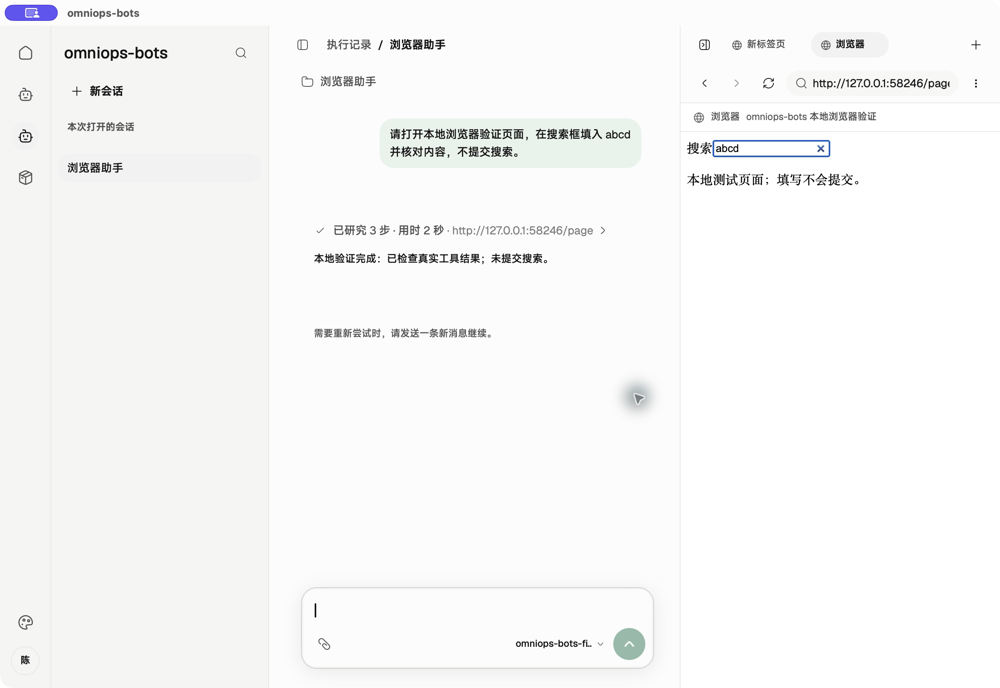
历史运维调试桌面实拍：旧 Agent CEF 模式 · 点击查看可缩放交互图 历史 macOS 调试桌面实拍，仅用于说明运维调试视图，不是线上用户界面。截图为旧 Agent CEF 模式，不代表当前双浏览器分工：Playwright 已在右侧内置 CEF 页面填入 abcd，未提交搜索。使用本地测试模型与测试页面；工具调用和浏览器操作真实执行。
线上客户端只提供连接状态等基础信息，连接状态区分已连接、重连中和离线；用户日常在服务端 Console 操作，无需进入本地调试界面。运维调试桌面由左侧导航、中央内容区和右侧工作台组成：导航组织会话、Agent 与 Skill，中央区域承载编辑和对话，工作台展示浏览器与执行过程，账号区域展示用户身份与运维权限。
作为线上用户，我希望在服务端 Console 发起业务请求、查看任务状态和结果，由服务端 Agent 调用本机 Agent 完成所需操作。
作为线上用户，我希望客户端平时作为后台进程运行，仅在需要时查看连接状态等基础信息，无需操作调试桌面。
作为服务端 Agent，我希望以任务形式调用客户端的官方 Agent，取得状态与最终结果，并在客户端断线后仍能收到已有结果。
作为运维人员，我希望发现任务中的不足后，在调试桌面修改 Skill 文件或 Agent 提示词，选 Agent 试跑、查看过程与结果并继续调整；自己确认后上传发布，让后续线上任务使用确定版本。
作为运维人员，我希望能在调试时查看独立 Chrome 窗口与本地执行记录，并按需上传指定 thread 的诊断材料，取得服务端确认接收的编号。
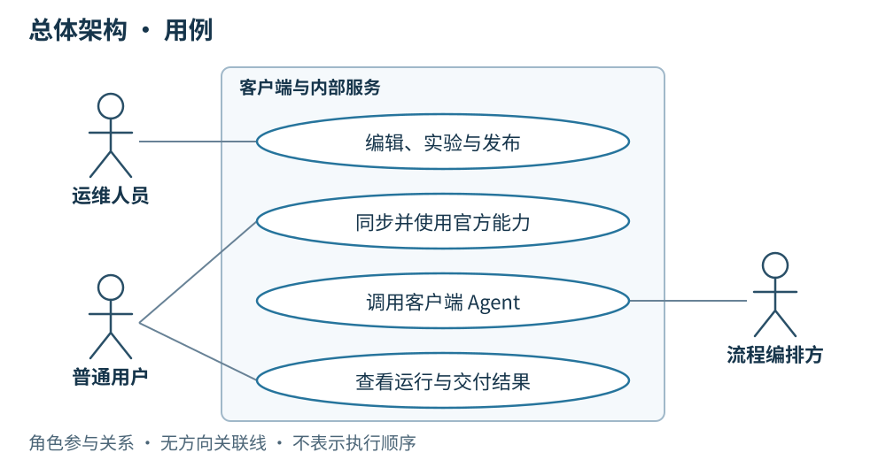
总体用例图：线上用户、运维人员与服务端 Agent · 点击查看可缩放交互图 简要设计
客户端的后台执行能力与运维调试视图复用同一套 runtime：线上任务由服务端 Agent 下发，客户端准备所需物料，在专用 Chrome 中执行，并保存可补传的结果；运维人员通过调试桌面编辑、实验和检查过程。线上基础状态界面与调试桌面分别服务于这两种使用场景。Tauri 承担桌面包装，本次不引入其他 Rust 业务模块作为前置条件。
线上用户的一次任务
用户在服务端 Console 提出巡检请求，服务端 Agent 编排业务步骤，并以独立任务调用客户端官方 Agent，选择确定版本的 AgentCard，传入稳定 messageId 和显式任务上下文。客户端在后台核对物料、固定快照并执行本机操作，将 Task 状态、最终 Artifact 和非敏感运行摘要交付；服务端确认接收后，由服务端 Agent 继续后续业务，Console 向用户展示任务状态和结果。普通任务交付不持续上传逐条模型输出，本地过程记录供运维调试和诊断使用。
客户端不要求用户打开调试桌面或在本地选择 Agent、输入任务。需要人工登录或验证时，按执行章节处理并显式发起新任务，不自动续跑；具体业务操作与结果查看仍在 Console 完成。
运维人员的一次物料改进
例如，运维人员发现一次巡检遗漏了新的页面检查项，就在客户端打开对应 Skill 的官方草稿工作副本，补充操作步骤和参考文件，再勾选现有 Agent 作为模板实验。实验直接使用当前完整内容，在外部 Chrome 中执行；运维人员对照过程与结果继续修改，原 Agent 和已发布 Skill 保持不变。
工作步骤
运维在客户端做什么
得到什么
就地编辑
修改 SKILL.md、上传或替换包内文件，按需调整 Agent 提示词与装配
可继续编辑的本地内容或官方草稿，无须每改一个文件就上传服务端
快速实验
在 Skill 页面勾选 Agent，发起独立实验；结合结果继续改、再试
每次实验固定完整快照，过程与产物可查看；未上传的内容也能试跑
本人确认
运维确认这次内容可用于正式任务，选择本次发布范围并手填标签
明确要上传发布的完整内容；不增加审核人或强制实验通过门槛
上传发布
上传确定的完整草稿修订并提交正式发布；已上传且未变化的修订可直接使用
服务端校验权限与标签，保存不可变版本；Skill 与受影响 Agent 的新标签一次联动发布
使用与反馈
新会话同步并装配所选版本，从实际任务中发现下一次改进
团队复用已确认的运维方法，旧会话沿用原快照，历史版本保留
周内可以反复编辑与实验，也可以按需上传保存草稿；只有运维明确提交正式发布，改进才成为可供团队同步使用的官方版本。 团队按周汇总已确认的改进发布，上传本身不增加审批环节。客户端负责把迭代做得便捷，服务端负责把已确认版本保存完整、分发准确。
客户端能力
主要行为
服务端需配合
线上基础状态
后台保持任务连接，仅向线上用户展示连接状态等基础信息
提供连接鉴权与状态确认，Console 承载业务操作及任务结果
运维资源管理
在调试桌面修改 Skill 文件与 Agent 提示词、装配，反复本地实验，运维确认后上传发布
校验身份权限，保存完整草稿修订与不可变发布版本，分发已确认物料
Provider 配置 本地管理多个 OpenAI Chat Completions 兼容接入地址及模型，选择默认项、手动测试连接，Key 存系统凭据库
本期不下发 Provider 配置或 Key，不新增平台 API
同步装配
核对版本、按需下载、保留历史包、固定运行快照
通过 HTTPS 提供版本清单与物料
浏览器执行底座
随包提供 Playwright，按需启动本机 Google Chrome，按会话绑定独立页面并保留专用登录态
通过任务协议调用客户端；浏览器与网站登录态保留在本机
任务执行
线上接收服务端 Agent 的任务调用；运维可在调试桌面手动试跑，均经 builtinTool 和 Playwright 在外部 Chrome 中执行
服务端 Agent 使用标准 A2A 消息与取消操作，WSS 仅负责网络传输
结果交付
本地保存状态、结果与快照，断线后补传；逐条过程仅供运维调试查看
接收 Task 状态、最终结果与必要运行摘要，持久保存后确认，服务端 Agent 继续编排，Console 展示任务状态与结果
桌面更新
检查、下载、验签，在空闲时由用户确认安装
提供更新清单和已签名整包下载
运维诊断
将指定 thread 的 SQLite checkpoint、运行快照与记录导出，经预览后上传
校验并持久保存诊断包，返回回执，提供只读排查入口
客户端保留未同步编辑、已下载历史版本、会话快照与执行记录。运维调试时可自由编辑本地资源；官方已发布资源同步后只读，服务端只调用官方 Agent。线上任务按调用指定版本自动准备物料，不要求线上用户进入资源管理页。
Provider 配置是客户端运行条件：允许自定义 base URL，手动维护上游模型名；新会话可使用全局默认 Provider 与模型或在开始前改选，开始后固定，不可用时明确报错，不自动切换。多 Provider 管理、连接测试与系统凭据存储已接入；macOS 凭据存储已验证，Windows 实机验收待完成，详见 11 · Provider 。
Agent 外部 Chrome 与手动运维 CEF
线上目标链路：用户操作服务端 Console → 服务端 Agent → WSS 传输 → A2A 协议与任务处理 → 客户端 Node.js／LangGraph Agent → builtinTool → Playwright／本地 CDP → 外部 Chrome 的固定页面；执行结果按任务回传服务端 Agent，再由 Console 呈现。 服务端调用属于待接入能力，不经过用户手动操作调试桌面。
当前运维本地调试链路：调试桌面输入任务 → Tauri adapter／IPC → Node.js／LangGraph Agent → 同一套本机工具与 Chrome 执行能力。 Agent 的页面在独立 Chrome 窗口中显示；调试工作台的 Chrome 标签展示状态并提供「显示 Chrome」。后台运行描述的是客户端的日常使用方式，不要求 Google Chrome 采用无界面模式。
组成
职责
服务端 Console 与 Agent（外部系统）
Console 承载线上用户操作；服务端 Agent 编排业务，以任务调用客户端 Agent 并消费结果
Tauri 界面
线上展示连接等基础状态；运维调试桌面管理 Agent、Skill、会话与执行记录，通过 adapter 调用 Node 后端
本地 Node.js／LangGraph runtime
在后台执行服务端任务或运维调试任务，装配固定快照、调用模型与工具，管理并发运行、停止、超时及 Chrome 生命周期
Playwright
连接本次 thread 指定的 CDP target，执行检查与脚本；目标不匹配时结束操作
外部 Google Chrome
使用应用专用 profile 保存登录态，各 thread 绑定独立页面；用户可在真实 Chrome 窗口中操作
内嵌运维 CEF
固定手动页面 __manual__；独立的地址、历史、布局和输入，由运维人员操作，Agent 工具不接入
Node.js、Playwright 和 CEF 随桌面整包交付；Google Chrome 需单独安装，其更新由 Chrome 自身管理。普通会话切换只选择状态，不启动或抢焦点；浏览器工具首次执行或用户显式「显示 Chrome」才按需创建页面。应用更新范围见第 05 章。
页面检查、脚本保存与执行都在本机完成。脚本执行时保存源码快照并核对内容摘要，产物关联执行记录；脚本始终沿用该轮绑定的 Chrome 页面。工作台的浏览器入口相互独立，运维 CEF 导航和输入不占用 Agent 的任务页面；Agent 工具调用不会切走当前运维标签或清除地址草稿。对 Agent 当前 Chrome 页面的人为操作需由使用者协调，应用不将任务锁扩展到外部 Chrome 的原生输入。遇到人工登录或验证，本轮结束；用户处理后显式发起新一轮。停止不回滚外部操作，也不自动续跑。
脚本截图来自本轮绑定的外部 Chrome 页面。 run_playwright_script 在结束时尝试保存当前视口为 screenshot.png，普通脚本报错也会尝试保存；取消、超时或浏览器崩溃可能导致截图缺失。截图关联该次脚本产物，不改拍运维 CEF，也不作为未发生操作的证据。
专用 profile 与用户日常浏览器隔离，网站 Cookie、登录态及本地 CDP 地址不作为服务端任务材料上传。故障时按第 09 章导出指定 thread 的脱敏证据，不上传整个浏览器 profile。
当前本地链路的代码依据：浏览器连接 、页面匹配 、脚本执行 、macOS 原生视图 与 Windows 原生视图 。服务端远端调用仍为待接入能力，接口汇总见服务端 API 。
核心资产如何积累与演进
对象
沉淀内容
版本与演进方式
Agent 提示词
角色、目标、操作边界、决策要求与输出要求
作为 Agent 装配的一部分保存；正式修改生成新的 Agent 内容 ID 和人工发布标签，不另建一套提示词发布体系
Skill 完整包
SKILL.md、操作说明、引用资料、脚本及随包资源完整包生成内容 ID；已发布包不可变，新版本保留旧包，Agent 明确引用所需版本
Agent 装配清单
提示词、固定 Skill 版本、builtinTool 选择和 MCP 配置
将核心资产组合为可运行的 Agent；装配变化生成新 ID，并手填 v.1.0.0 形式的标签
运行快照与执行记录
本次使用的装配、运行条件、过程与结果
为问题定位和下一轮改进提供依据；快照不建立发布版本，实验产物不混入 Skill 包
客户端提供核心资产的编辑、实验与使用入口；服务端统一保存官方草稿修订和不可变发布历史。提示词只改目标或行为要求时，可以复用原有 Skill 版本；Skill 正式发布时，一并更新受影响 Agent 的引用与内容 ID，并由运维手填各自的新标签。保存草稿不触发联动发布。
MCP 提供远端执行能力，配置随 Agent 同步；MCP 服务本身不进入本项目版本体系。builtinTool 提供桌面执行能力，实现随桌面应用更新。每周改进提示词和 Skill 不要求同时发布桌面端；只有确需新的内置能力时才安排桌面更新。
按周迭代发布
阶段
运维在客户端完成的工作
形成的结果
周内迭代
结合实际任务结果定位不足，修改 Agent 提示词或 Skill 草稿，按需选 Agent 实验
可继续修改的草稿、独立保存的实验记录；未完成内容留在草稿中
每周发布
选择本周本人已确认的改进，上传确定的完整修订，手填本次 Skill 与受影响 Agent 的新标签，提交正式发布
一次确定的资产更新；只改提示词则发布 Agent，Skill 改动则联动发布受影响 Agent；无变化的物料继续复用
发布后使用与反馈
新会话核对并装配所选新版，观察执行结果，把新问题纳入下一周
旧会话保持原快照，发布历史可追溯，改进持续积累
按周发布是团队的迭代节奏，不增加审核人、审批流或强制实验门槛；运维提交即表示本人已确认。标签始终人工输入，周次和日期不替代发布标签，也不自动覆盖历史版本。没有已确认变更时不创建空版本。
客户端与外部服务的结构关系 客户端与外部服务的结构关系 · 点击查看可缩放交互图 打开结构关系图
客户端
面向线上用户展示连接状态等基础信息，日常作为后台进程运行；复用已有 Token 连接服务端，WebSocket 断线后退避重连。任务接收、执行与交付不依赖打开调试桌面。
运维调试桌面展示身份与权限，提供 Skill 文件编辑与上传、Agent 提示词及装配调整、选 Agent 实验的连贯入口；未上传内容也能反复实验，官方已发布配置只读。
围绕提示词和 Skill 的每周改进保存草稿、实验记录及发布引用，展示本次 Agent 实际装配；发布过程不增加审批。
新会话同步清单，按需下载缺失物料；调用前核对版本，失败不拿旧版代替。
运行前固定装配快照，检查所需内置工具；Playwright 按会话绑定外部 Chrome 的指定页面，不同会话可并发；同会话已有运行、其页面正在手动导航或并发容量已满时返回忙。
运维在调试桌面的「设置 → 偏好设置」修改「并发任务上限」，默认 4，支持 1～64 的整数；保存到本机后立即用于新任务受理，无需重启，下调不取消当前任务，详见任务执行与恢复 。
后台保存结果并补传，正常任务交付只向服务端发送 Task 状态、最终结果和非敏感运行摘要；线上用户在 Console 查看任务状态和结果，逐条过程保留在本地供运维调试查看。
需要排查时另行按指定 thread，通过 HTTPS 上传脱敏后的 SQLite checkpoint、过程与关联材料。服务端确认接收后展示诊断编号，具体见运维与诊断上传 。
详细设计
以下运行模型按消息发生顺序描述客户端行为；各图是独立场景。准备失败、忙或执行中断的路径分别见同步与执行章节。
场景一：线上客户端后台接收服务端 Agent 任务
前提：线上用户已在服务端 Console 发起业务请求，服务端 Agent 编排到需要本机能力的步骤，以任务形式调用客户端官方 Agent。客户端已连接，指定版本准备成功且并发容量可用；新会话绑定独立页面，不要求用户打开调试桌面。
A2A 任务受理、客户端后台执行与持久交付 · 点击查看可缩放交互图 打开 A2A 运行顺序图 · 核心章节：完整场景与协议分工
结果：客户端在后台为每次调用新建独立、只读会话，逐条过程保留在本地供运维调试查看；线上用户在 Console 查看任务状态和结果。结果与快照先落本地，再以标准 Task／Artifact 向服务端交付，持久确认前保留，服务端 Agent 幂等消费结果后继续编排。断线继续执行，重连只补传；重启后未完成任务报告“执行中断、结果未知”。本场景是线上日常使用主线，远端接入仍待实现。
场景二：运维快速迭代，确认后上传发布
前提：运维从实际任务反馈中发现一项 Skill 改进需求，在客户端编辑工作副本。图中展示选择 Agent 做本地实验、本人确认后手填标签并上传发布的过程；实验结果不满足预期时，继续在本地修改并发起新实验，直到运维决定发布。实验按需进行，不是发布审批门槛。
运维物料迭代：客户端编辑与实验、本人确认、上传发布与新版使用 · 点击查看可缩放交互图 打开顺序图：运维迭代与确认发布
图中的“按需保存完整草稿修订”只保存编辑进度，不发布、不联动 Agent；这一步也可以在本地实验之后进行。正式发布前固定本次完整修订，服务端以该修订生成版本，之后继续编辑不会改变已提交内容。只改提示词时发布新的 Agent 并复用原 Skill；Skill 改动则与受影响 Agent 一起发布，所有新标签由运维手填。
结果：一次本地改进成为团队可复用、可追溯的正式资产，新会话使用所选新版，旧会话保持原快照。周内反复迭代，按周发布已确认内容，执行反馈继续推动下一次改进。图示为目标业务流程；当前草稿实验与本地完整会话快照已实现，官方发布同步仍待接入，完成情况见第 08 章。
场景三：运维在调试桌面主动发起会话
前提：运维人员在调试桌面选择官方 Agent，准备检查成功，本会话没有活动轮次且并发容量可用。本地 Agent 使用本地装配；引用官方 Skill 时仍需补齐对应版本。这是本地调试入口，线上用户的业务请求从服务端 Console 进入。
运维在调试桌面主动发起会话 · 点击查看可缩放交互图 打开顺序图：运维本地调试会话
结果：调试桌面保存并展示本轮结果，等待运维继续输入时释放运行容量；同一会话保留页面并继续使用开始时的快照，其他会话可以并发执行。
验收从客户端操作或远端调用进入，覆盖“编辑发布 → 同步装配 → 调用执行 → 结果恢复”的完整结果。规格依据：Issue #3 。
服务端配合
为支持上述客户端能力，已有内部服务需要提供：
身份与权限 ：复用已有账号与 Token，返回用户身份与运维权限，并校验官方资源写入；普通用户不能写入官方资源。线上业务入口 ：Console 承载用户业务请求、任务状态与结果查看；服务端 Agent 决定何时调用客户端能力并消费结果，客户端只向线上用户提供基础状态信息。草稿、发布与同步 ：接收运维在客户端确认后提交的完整内容；按需保存草稿修订，正式发布时保存不可变版本并提供 HTTPS 清单与文件包。Skill 正式发布联动受影响 Agent，所有标签由运维人员手填，提交即确认，不增加审核。资产持续演进 ：保留每周发布涉及的提示词、Skill 和 Agent 装配关系，让客户端能够查看新旧版本及本次改进；不为周发布新增定时自动发版、MCP 发布或独立提示词版本系统。调用与结果确认 ：服务端 Agent 在编排中使用标准 A2A 调用客户端的确定版本入口；以 messageId 去重、taskId 查询或取消，持久接收状态、结果与非敏感运行摘要后通过已声明扩展确认。WSS 只负责传输，忙时返回 REJECTED Task，后续新执行使用新消息 ID。桌面更新来源 ：提供更新清单和已签名整包下载，供客户端检查、下载与校验。诊断接收 ：接收用户指定 thread 的诊断包，校验并持久保存后返回回执，支持运维按编号只读查看；不会因此恢复或重新执行任务。
应用角色拆分、跨机器 Compose、网关多实例与共享文件存储见核心 · 服务端部署与持久化 ；当前单机 Nginx 仍是入口单点，服务端方案待实施。客户端依赖的 HTTPS API、A2A 操作、WSS 绑定和接收确认契约统一见 10 · 服务端 API 。
核心 · A2A 任务执行与恢复
客户端主动建立一条 WSS，服务端 Agent 通过 A2A 调用确定版本的客户端 Agent。WebSocket 负责网络传输，A2A 负责任务语义，现有 Node.js runtime 负责 Agent 执行。 线上用户仍在 Console 发起业务、查看状态和结果；运维调试桌面用于编辑、实验和排障。
以下图示是本次确认的目标设计 ，不是已实现链路。远端 A2A、WSS 绑定、持久去重与交付确认仍待接入。协议以 A2A 1.0.0 为基线，协商版本为 1.0；WebSocket 使用明确声明的自定义绑定，不宣称它是标准 HTTP JSON-RPC 绑定。
部署前提见核心 · 服务端部署与持久化 ：Console API、网关和图 worker 分开运行，多台 Compose 共享 PostgreSQL、Redis 与文件存储；当前单机 Nginx 仍是入口单点。本章只规定跨端任务行为，不把容器重启解释为桌面任务恢复。
三层职责：网络、协议、执行
网络、A2A 与 Agent 执行分开 · 点击查看可缩放交互图 打开职责图
职责
负责什么
关键边界
WSS 网络传输
客户端主动连接、身份认证、心跳、退避重连、有界收发、连接与流清理
不装配 Agent，不判断业务终态，不因断线取消运行；发送成功不表示结果已交付
A2A 协议与任务处理
标准操作与对象校验、tenant 路由、messageId 持久去重、Task 状态、订阅与查询、结果交付
在受理前检查授权；执行前受理落盘；重投只返回原 Task；执行状态与交付状态分开
Agent 执行
复用现有装配、并发准入、LangGraph、模型、MCP、Playwright、取消排空与执行证据
接收明确输入和固定版本；不接触 socket 或原始网络报文；不自建第二套调度器
这些是职责边界，共用一个 Node runtime，不要求新增独立服务、通用容器或每个 Agent 一条连接。Rust 继续承担原生宿主与系统能力。
服务端 Agent 是 A2A Client ，桌面 Agent 是 A2A Server ；这与桌面主动建立 WSS 的网络方向不同。每个官方 agentId + contentId 对应一个逻辑入口和标准 AgentCard，复用官方目录；多个入口共享同一 WSS。请求携带所选 AgentCard 接口的标准 tenant 路由值，由 A2A 适配层解析；真实组织、用户与安装权限来自已鉴权连接，不由 tenant 自行声明。
场景一：受理、执行、保存与交付
**前提：**连接已鉴权，目标版本与扩展已协商，新消息可以受理。用户从 Console 发起业务，服务端选择确定版本的 AgentCard，以标准消息的 Data Part 显式传入业务输入和所需上下文。
A2A 任务从受理到持久交付的运行顺序 · 点击查看可缩放交互图 打开完整运行顺序图
图中使用标准 SendStreamingMessage：首条响应为已持久受理的 Task，之后发送任务级状态和最终 Artifact。也可 SendMessage 后 SubscribeToTask；执行不等待订阅，订阅消失也不停止执行。
**结果：**先保存终态 Task、最终 Artifact 和执行记录，完成本地结算并释放运行容量，再交付结果。服务端幂等持久保存结果与索引、确保后续编排不会重复推进后，通过已声明的交付确认扩展确认；桌面校验原 Task 与结果摘要并持久标记已交付。确认失败只影响交付，不重新启动执行。
连接可用、Task 已受理、执行已终止、结果已交付是四个不同边界。一次 Task 内可以有多次模型与工具调用，单次模型输出结束不代表 Task 完成。除交付确认这一项必要业务扩展外，沿用标准 A2A 操作、状态和数据对象；具体契约见第 10 章 。
场景二：重复投递同一任务消息
**前提：**服务端没有收到先前响应，使用原 messageId 和相同调用内容重投；新的 JSON-RPC id 仅用于关联本次往返。
重复消息只取得原 Task · 点击查看可缩放交互图 打开重复投递顺序图
**结果：**先查持久去重记录，再检查新任务容量。重投返回原 Task 的当前状态或原拒绝 Task，不再创建 thread、run 或页面；同 ID 不同内容返回协议冲突错误，不改变原记录。去重范围绑定已鉴权租户、调用方和目标安装，并比较包含目标入口与版本的不可变调用内容。显式再次执行必须使用新 messageId。
场景三：容量已满，持久保存拒绝 Task
**前提：**消息合法、通过鉴权且未重复，但本地、实验和远端共用的运行容量已满。
忙时返回可查询的 REJECTED Task · 点击查看可缩放交互图 打开忙时拒绝顺序图
**结果：**保存可查询的 REJECTED Task，通过标准状态 Message 的 Data Part 表达 busy。不创建 thread、run 或 Chrome 页面，不排队；重投原消息仍返回原拒绝 Task。格式或鉴权错误直接返回协议错误，不创建 Task。默认并发 4，可在本机设置为 1～64，详见第 07 章 。
场景四：断线继续执行，重连恢复当前状态
**前提：**客户端进程仍在，网络断开；图中任务在重连前已完成。
断线继续执行，重连查询原 Task · 点击查看可缩放交互图 打开断线恢复顺序图
**结果：**当前 run 继续，本地结算与持久保存不等待网络。WSS 重新鉴权后，已终态使用 GetTask 取得最终结果；未终态使用 SubscribeToTask，首条为当前 Task 快照。订阅时若恰好已终态，转为 GetTask。不补播历史事件，不新增私有恢复消息或事件游标；未确认结果继续完成交付确认。
若首次受理响应丢失、服务端还不知道 taskId，先以原 messageId 重投取得原 Task；已知任务可通过标准 ListTasks 在授权入口内分页核对。跨端断线不改变 run 的终止原因，也不承诺外部 Chrome 操作的副作用恰好发生一次。
场景五：重启时已有终态，只恢复交付
**前提：**上次已持久保存终态 Task 和最终结果，服务端尚未确认。
重启后交付原有终态结果 · 点击查看可缩放交互图 打开已完成结果的重启顺序图
**结果：**复用原 Task、Artifact 与结果摘要，只恢复查询和交付确认；不重新装配 Agent，不创建 run，不打开任务页面。重复读取、接收和确认不重复驱动服务端后续业务。
场景六：重启时未完成，报告结果未知
**前提：**上次强退或崩溃，持久记录仍为非终态。
重启发现未完成任务，保存 FAILED 与结果未知原因 · 点击查看可缩放交互图 打开未完成任务的重启顺序图
**结果：**在恢复对外查询前，将遗留 Task 持久收敛为 FAILED，原因码为 interrupted-unknown，明确“外部操作可能已发生，结果未知”。不解释为从未执行，不自动重试。SQLite checkpoint 只保留诊断证据，不触发图或模型恢复；后续业务由服务端显式发送新消息、创建新 Task。
场景七：取消是一项请求，排空后才算取消
**前提：**Task 尚未固定执行结果，取消在可取消阶段生效。
CancelTask 请求与排空后的 CANCELED 终态 · 点击查看可缩放交互图 打开取消顺序图
**结果：**标准 CancelTask(taskId) 请求停止该 run；排空期间仍为 WORKING，以标准 TaskStatus.message 提示正在停止，仍占运行容量。已启动操作和证据写入排空、唯一取消终态落盘并完成结算后，才报告 CANCELED 并释放容量；已发生的外部操作不回滚，其他任务继续执行。
如果结果已固定或 Task 已终态，返回标准 TaskNotCancelableError，用 GetTask 查看原结果，不改写终态。取消后的网络断开不撤销停止请求；重复取消只产生相同停止效果，不定义私有取消回执，也不将收到请求当成取消完成。
场景八：超时、缺输入或登录验证直接失败
**前提：**图中一次只发生一种业务失败，几种原因不表示依次执行。
执行失败统一进入 FAILED · 点击查看可缩放交互图 打开失败顺序图
情况
标准 Task 状态
状态 Message 的 Data Part
本轮超时
FAILEDtimed-out 与安全说明
缺少必要输入
FAILEDmissing-input 与待补信息说明
需要人工登录或验证
FAILEDlogin-required 与必要操作指引
重启发现未完成任务
FAILEDinterrupted-unknown，外部操作可能已发生；单独见场景六
**结果：**停止后续步骤，排空并保存失败终态，再释放容量并交付。Task 一次执行到终态，不使用 INPUT_REQUIRED／AUTH_REQUIRED 挂起恢复。用户补齐输入或在专用 Chrome 完成验证后，经 Console 发起新 Task；标准终态均不可重新启动。
身份、上下文与过程数据
对象
本项目含义
messageId首次任务消息的稳定身份与持久幂等键；替代原私有 callId
JSON-RPC id
一次请求与响应／流的关联；可随重投变化，不决定是否重新执行
taskId桌面 A2A Server 创建的 Task 身份，供查询、订阅、取消与交付确认使用
contextId只关联业务中的多个 Task，不等同于本地 thread，不自动继承聊天、图状态或页面现场
threadId／runId／graphThreadId本地会话、单次执行与图身份；每个已受理 Task 独立创建，拒绝 Task 没有这些执行资源
tenant所选 AgentCard 接口提供的标准路由值，固定映射到一个官方 agentId + contentId；不是客户端自报权限
每个受理 Task 绑定独立的 Chrome 页面；多个页面共享专用 profile，因此可以复用登录态，但不隔离账号或站点资源。页面丢失不回退到别的页面。终态后保留页面供运维查看；重启恢复记录不重建页面，也不恢复旧任务。
线上订阅仅发送 Task 快照、标准任务状态事件与最终 Artifact；Artifact 承载业务结果和必要的非敏感运行摘要。完整模型输出、工具参数与过程、完整快照和 checkpoint 留在本地，不随普通任务流上传；排障沿用第 09 章 的预览、授权和独立上传。AgentCard 的 streaming 表示支持这些任务事件，不表示开放模型 token 流。
继续阅读
本次只修订目标设计与串讲材料，沿用本地执行记录和既有观测边界，不新增日志、span 或指标。A2A 原始 Message、Artifact、提示词和完整错误来源链不作为遥测输出。
核心 · 运维 Skill 体系、模板与迭代
本系统是运维操作系统。核心资产是持续维护的运维 Skill：find-ops-capability 决定去哪一个平台或平台组合，平台 Skill 提供具体操作与最佳实践，playwright-skill 提供浏览器操作和兜底探索。 Agent 既能复用已验证的方法与脚本，也能在实践未覆盖时依据真实页面尝试完成原任务。
本章定义内容模板与维护方式，不代表已经交付这些业务 Skill 或 CDAS 的真实操作实践。本次提供可复制的模板与文档说明，不实现探索草稿上传、定时 Agent 汇总或测试集建设。客户端定位与职责见 00 · 客户端总体设计 ，远端调用见服务端通过 WS 调用客户端 。
三层职责与协作
路由确定平台和交接；平台 Skill 选择实践、脚本或探索，统一使用浏览器能力。 点击查看可缩放交互图。
层次
维护什么
执行时负责什么
find-ops-capability平台能力目录、场景路由、跨平台组合实践
选择平台、组织顺序与依赖，定义交接字段和成功判据；不复制平台内页面步骤
ops-cdas 等平台 Skill平台定位、与周边平台的关系、权限和前置条件、references/ 场景实践、scripts/ 加速脚本
在指定平台内完成具体操作，核实业务结果，交付下游需要的信息
playwright-skill浏览器操作方式与探索方法
为平台操作提供实际页面读取、导航和操作能力，兜底探索仍遵守平台 Skill 的边界
新任务先由路由 Skill 判断目标与平台，再按需读取所选平台 Skill 及相关实践。已有单平台能力足够时不组织额外平台；没有现成组合实践时，允许根据已登记平台的定位、能力和关系组织新组合。依赖或目标不清楚时返回缺失信息，不猜测执行。
这是 Agent 使用内容资产的分工，不要求新增通用调度器或子 Agent，也不等于通过 Markdown 自动获得工具权限。所需 Skill、Playwright 工具及版本必须已在当前 Agent 中装配；包内引用不会自动安装依赖。playwright-skill 在这里是产品约定的基础 Skill，本章不将当前浏览器工具等同于它已完成交付。
一个 Skill 包怎样组织
find-ops-capability/
SKILL.md
references/
platforms.md 平台目录与关系
combinations.md 已验证组合的索引与实践
ops-cdas/ 平台 Skill 示例命名，真实内容由运维填写
SKILL.md
references/
场景实践.md 具体任务的快速操作方法与验证
scripts/
稳定操作.mjs 有实际稳定步骤时才添加
playwright-skill/
SKILL.md 浏览器操作与兜底探索约定
SKILL.md 保留定位、关键边界、决策规则和索引；具体场景按需读取 references/，稳定重复的步骤才提炼为 scripts/。不创建空脚本或不适用的目录。完整包一起版本化，模板不额外发明 version frontmatter 字段；标签、完整包摘要与 Agent 固定引用沿用前置 · Agent 版本管理 。
平台 Skill 的 SKILL.md 必须说明平台具体定位、支持对象和环境、能力边界、与周边平台的关系、权限与前置条件、禁止事项、实践索引和结果交接。真实能力未确认时保留为待整理内容，不能把模板或 ops-cdas 示例名称当成已验证操作。
路由 Skill 的 SKILL.md 模板
复制路由模板文件 。配套提供平台目录填写约定 和组合实践填写约定 。模板包中的引用说明不是已经登记的平台能力，部署前须按真实平台填写。
---
name: find-ops-capability
description: 根据运维任务选择已登记的平台操作 Skill，组织单平台或跨平台操作的执行顺序、依赖与交接信息。用于判断去哪个平台、如何组合平台；具体平台内操作交给相应平台 Skill。
---
# 运维能力路由
## 职责与入口
将任务目标转换为可执行的平台选择与组合计划。读取 [平台能力目录](references/platforms.md)，有跨平台需要时再读取 [组合实践](references/combinations.md) 中的相关场景；按需读取选中平台 Skill，不一次加载全部平台实践。
只在当前 Agent 固定装配中实际可取得的平台 Skill 中选择。目录中的名称用于定位能力，具体版本以本次装配为准；缺少所需 Skill 时明确失败，不擅自切换“最新版”或调用未登记平台。
## 选择平台与组织顺序
1. 确定任务目标、环境、目标对象、操作范围和结果要求。优先从任务上下文及已有证据取得；必要信息缺失时返回缺失项，不猜测对象或环境。
2. 根据平台定位、能力与周边关系选择平台。单平台能完成时使用单平台；需要组合时说明各平台承担的步骤及选择依据。
3. 优先采用适用的组合实践。没有适用实践时，允许根据已登记平台的能力与关系组织新组合；每一步仍须满足对应平台 Skill 的边界。目标或依赖关系无法确定时停止。
4. 执行前明确步骤顺序、依赖、输入、交接信息及成功判据。把具体平台内操作交给平台 Skill，避免在路由文档中复制页面步骤和选择器。
## 每一步的计划
用表格或等价结构表达下列字段，不要求新增协议或调度器：
| 字段 | 要表达的内容 |
| --- | --- |
| 步骤与平台 Skill | 稳定步骤名、平台及所用 Skill |
| 操作目标 | 本步要完成的业务目标和允许的操作范围 |
| 前置依赖 | 依赖哪些步骤，以及依赖步骤必须取得的结果 |
| 输入 | 来自任务或前序步骤的字段、来源和目标对象；区分名称与稳定 ID |
| 交接信息 | 下一步需要的对象标识、状态、环境和证据引用；不传凭据或浏览器登录态 |
| 成功判据 | 如何核实本步结果和交接信息有效，而非仅确认点击或脚本返回 |
| 失败处理 | 停止哪些依赖步骤；独立步骤是否明确允许继续及继续条件 |
任务指令与平台 Skill 的权限、前置条件、禁止事项共同限定操作；路由选择不会扩大授权。不得把计划写成已执行结果。
## 执行与失败处理
- 平台 Skill 负责匹配 `references/` 实践、选择适用脚本、调用 Playwright 和验证结果；本 Skill 负责核对步骤依赖及交接，不绕开平台约束直接操作。
- 前一步失败或无法验证，停止依赖它的后续步骤。独立步骤只有在计划中明确标注可继续且其前置条件仍满足时，才继续执行。
- 不自动回滚已发生的变更。不因脚本失败就换一种方式重复提交；先核实副作用，状态不明时明确失败。
- 遇到权限不足、人工登录／验证或必需能力不可取得时，返回明确失败；不暂停等待登录后自动续跑。
## 结果与改进材料
返回整体结果、每步状态、已完成步骤、实际交接信息、已发生的变更、验证依据、失败原因和未执行步骤；尚未核实的事实明确标记。每步状态可用“已验证完成／失败／未执行”表达，不能以计划步骤冒充执行记录。
新组合或探索路径保留适用条件、操作依据和验证结果，供运维整理。执行中不修改只读 Skill、不自动改写或发布正式版本。探索草稿上传服务端文件系统、定时 Agent 收集并提出建议均为后续方向，本期不执行这条链路。
平台操作 Skill 的 SKILL.md 模板
复制平台模板文件 ，配套提供场景实践模板 。复制为 ops-cdas 时替换 name、description 和平台事实，完成实践索引后再用于装配；不在模板中猜测 CDAS 的真实页面、功能或上下游关系。
---
name: ops-platform
description: 在指定运维平台内完成其职责范围内的查询与变更操作，优先使用场景实践和适用脚本，并通过 playwright-skill 探索未覆盖场景。复制模板时须改为真实平台名称、能力和触发场景。
---
# 平台操作 Skill
## 平台说明
维护者在发布前填写本节并替换 `name` 和 `description`。例如复制为 `ops-cdas` 时，填写 CDAS 的真实平台信息；未填写的模板不得作为可执行正式 Skill 发布。
| 项目 | 必须填写的事实 |
| --- | --- |
| 平台名称与定位 | 平台负责的业务环节、对象和目标；哪些事项不由它负责 |
| 环境与入口 | 支持环境、受控入口地址及环境识别方式；不保存凭据或登录态 |
| 能力范围 | 可查询和可变更的对象、目标定位方式及平台限制 |
| 周边平台关系 | 上下游平台、职责分界、什么场景需要交接 |
| 输入与输出 | 任务需要的对象 ID、环境和参数；可交接的结果字段及其语义 |
跨平台选择、顺序和交接由 `find-ops-capability` 组织；本 Skill 负责平台内具体操作及结果验证。
## 权限、前置条件与禁止事项
维护者按平台实际约束填写以下内容，不用“按需处理”代替：
- 所需账号角色、可访问环境和对象范围，以及如何核实当前身份与环境。
- 查询、变更各自需要的业务前置状态、目标参数和任务授权范围。
- 平台特有的禁止操作、禁止对象，以及不能由探索绕过的限制。
- 变更的影响范围、如何确认目标、成功判据，以及状态无法核实时的停止条件。
执行前检查这些约束；任务输入不能扩大平台权限。缺少必要信息时返回缺失项；权限不足或需人工登录／验证时明确失败，不绕过限制或自动等待续跑。
## 实践索引与按需读取
参考 [场景实践模板](references/practice-template.md) 编写实际实践。该文件只说明填写结构，不是可以直接执行的业务实践。
维护者为每个真实场景登记：场景名称、触发条件、适用环境与对象、对应的 `references/` 文件，以及可用的 `scripts/` 文件。只读取匹配场景所需的实践；不要将整个资料目录一次载入上下文。
## 执行优先级
1. 先匹配 `references/` 中的实践，核对当前目标、环境和前置条件。只因关键词相似不能认定适用。
2. 实践有适用脚本时优先使用脚本；没有适用脚本时，按实践通过 Playwright 操作并验证结果。
3. 没有适用实践，或页面变化使既有实践不适用时，使用 `playwright-skill` 读取实际页面、导航和探索，尝试完成原任务，包括任务范围内的变更操作。
4. 探索同样遵守本 Skill 的权限、前置条件和禁止事项。不扩大任务目标；无法判断操作影响或验证结果时，明确失败并说明依据。
`playwright-skill` 必须在当前固定装配中可取得，并遵守其操作方式与当前宿主工具契约；本模板不假定它已有具体实现。缺失时明确报告能力缺失，不临时安装或替换另一套浏览器执行环境。
## 脚本使用约定
- 运行前核对脚本用途、适用页面与环境、输入参数、读写性质、影响范围、前置条件、成功判据，以及能否重复执行。不以文件名代替契约检查。
- 脚本基于当前宿主提供的 Playwright 页面执行；复用任务绑定页面，不自行创建浏览器、页面或 context，不切到其他会话，也不启动 shell 或安装依赖。
- 沿用实际宿主的脚本读取、保存与执行入口，执行前核对源文件摘要。包内脚本复用需遵守宿主契约，不假定存在直接执行任意 Skill 路径的工具。
- 参数须按实践定义校验，不将任务内容直接拼接成可执行代码；产物写入允许的任务工作目录，不写回只读 Skill 包，不输出凭据。
- 脚本应返回可核对的业务结果、变更情况和验证依据；脚本返回、页面跳转或按钮点击本身不代表业务成功。
- 脚本失败后先核实是否已产生变更。不能直接改用手动点击或另一脚本重复提交；状态不明时明确失败。只有确认尚未产生变更、原操作仍适用且符合重复执行约束时，才可继续。
## 结果与交接
返回目标对象、环境、实际操作、已发生变更、最终业务状态及验证依据；说明采用既有实践、脚本还是探索。失败时列出已完成内容、失败原因和未完成内容，不自动回滚。
向下一平台交接对象稳定 ID、环境、状态和必要证据引用，不传密码、Token、Cookie 或完整会话。不能确认的交接信息明确标记，不能作为后续依赖步骤的成功输入。
## 探索成果与维护
保留有复用价值的探索路径、适用条件、来源任务和验证依据，作为运维整理材料；没有验证成功的路径不得记成最佳实践。材料不写回当前只读 Skill、不自动修改或发布正式版本。
运维确认后将方法沉淀到 `references/`；稳定、重复的步骤再提炼为 `scripts/`，按完整 Skill 包发布新版本。探索草稿上传服务端文件系统、定时 Agent 收集并建议、按 Skill 建测试集均为后续能力，本期不执行。
场景实践与脚本怎样配合
每个实践必须能回答“什么场景适用、需要哪些输入、怎样操作、如何证明成功、失败后怎样核实”。平台入口、页面变化、业务前提或验证方式改变时，修订对应实践；不要把一次成功操作直接推广为所有环境的通用方法。
实践部分
必须表达的内容
适用范围
场景、环境、对象、前置条件、权限、不适用情况与验证来源
输入
字段、类型、来源、限制，以及目标对象和环境的核实方式
操作步骤
有意义的页面入口、目标识别、动作、观察点；所引用脚本的用途与调用条件
结果与交接
业务成功判据、状态和对象稳定 ID、证据引用及下游字段语义
失败处理
已发生变更的核实方法、停止条件、重复执行约束及未完成步骤
执行优先级统一为：匹配实践并核对适用条件 → 有适用脚本则优先使用，否则按实践操作 → 没有适用实践或实践失效时，用 Playwright 探索。 探索可以完成原任务中的变更，但不能绕过权限、前置条件和禁止事项；影响无法判断或结果无法验证时明确失败。
脚本失败先检查是否已产生变更；状态不明就失败，不换另一脚本或手动方式重复提交。跨平台前一步失败或无法验证时，停止依赖它的后续操作；独立步骤只有明确标注可继续且前置条件仍满足时才继续。返回已完成步骤、实际变更和失败依据，不自动回滚。
平台脚本沿用当前宿主的 Playwright 约束：复用任务绑定页面，脚本产物写入允许的工作目录，不自行创建页面或浏览器。当前宿主实际提供 inspect_browser、read_playwright_script、write_playwright_script 和 run_playwright_script 等入口，保存后按源文件 SHA-256 执行；导出函数接收宿主提供的 page、context、browser、playwright、artifactsDir、parameters 和 assert，返回可验证的 JSON 证据。包内脚本怎样进入执行入口必须遵守实际契约，不能假设存在任意 Skill 文件路径执行能力；详见当前图装配入口 。本章不新增执行 API 或脚本实现。
如何从任务反馈迭代到正式版本
上传与定时 Agent 建议链路为后续方向，本期不做；正式版本始终由运维本人确认发布。 点击查看可缩放交互图。
环节
运维维护什么
结果与边界
发现问题
比较任务目标、实际执行和验证结果，判断是路由、平台实践还是脚本问题
定位应修改的内容；失败或未验证路径不能当成最佳实践
整理依据
保留来源任务、探索路径、适用条件、验证依据与已知局限
沿用本地任务记录供运维人工整理，不自动写回只读 Skill
沉淀实践
运维确认后修订平台 references/；跨平台选择或交接变化则修订路由目录与组合实践
先形成可解释的操作方法，避免只存一段无前提脚本
提炼脚本
将稳定重复的步骤提炼到 scripts/，补齐参数、影响范围、校验及失败后的状态核实
实践仍是选择与验证依据，脚本负责加速
本地验证与修正
运维按需使用草稿实验，核对结果、副作用和适用条件
未上传的内容也能验证；沿用本人确认发布，不新增审核人或强制实验门槛
发布与使用
按周汇总已确认内容，发布完整 Skill 新版本，联动更新受影响 Agent 固定引用与版本
旧包与旧会话保留；新会话使用确定版本，结合前置章节的运行指纹需求追溯效果
编辑、保存、实验、上传草稿和正式发布是不同动作。无确认变更时不创建空版本；运维提交发布表示本人确认，不要求执行中的 Agent 自行发布。正式发布同步仍按现有待接入契约实施，不能把本章的内容模板视为发布链路已经完成，详见 01 · SKILL 。
后续方向与本期范围
后续方向：客户端整理探索草稿 → 上传服务端文件系统，附来源任务与探索依据 → 定时任务 Agent 收集材料并提出改进建议 → 运维确认 → 更新 references 或 scripts → 发布正式 Skill。 定时 Agent 负责建议，不能自动改写或发布正式版本；未验证的探索只能作为候选材料。这里的服务端属于外部接入方，不在本仓增加服务端文件系统或调度器实现。
这条探索草稿上传链路及配套定时收集、建议能力本期不做；本章不定义上传 API、调度配置或假成功入口。它与既有“运维主动上传官方草稿修订”需求不同，不能互相冒充已实现。
后续还将按具体 Skill 的场景、输入和成功判据构建测试集，用于版本比较与回归验证；本次不制作测试集或实现自动化评估。当前提供的是模板和维护约定，不表示上述业务 Skill 已接入运行。
本次不改变业务执行路径，不新增日志、span 或指标；模板要求的结果和探索依据沿用既有任务证据边界，不将提示词、回复正文、凭据或完整错误来源链写入遥测。
01 · SKILL
串讲重点：线上用户在服务端 Console 发起业务，服务端 Agent 以任务调用客户端 Agent，客户端在后台按固定 Skill 包执行；Skill 文件管理、草稿实验与发布属于客户端运维调试工作台。
US
运维调试界面设计
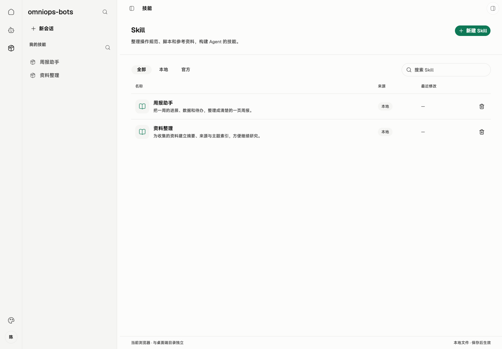
客户端运维调试工作台的 Web 界面实拍，图中使用演示数据。浏览器预览保存到 IndexedDB，桌面客户端保存到当前用户的 .omnimind-ops/skills。 线上用户在服务端 Console 发起业务并查看结果，客户端通常作为后台进程运行，仅提供连接状态等基础信息。以下 Skill 页面面向运维维护与本地调试，不是线上用户日常业务入口；入口定位不改变本地资源可自由管理、官方发布包普通用户只读及官方写入仅限运维的既有权限。
调试工作台的 Skill 页面分为两层：列表管理 Skill，进入一个 Skill 后管理包内目录与文件。资源标明本地或官方来源，版本记录以完整文件包为单位。本地调试时可上传、查看和编辑具体文件，在页面选择 Agent 发起草稿实验；运维人员可上传草稿，并手填 Skill 与受影响 Agent 的标签完成联动发布。
作为运维人员，我在客户端编辑草稿并按需上传，让服务端集中保存修订。
作为运维人员，我在 Skill 页面勾选一个 Agent，即可实验尚未上传的草稿。
作为运维人员，我手填 Skill 和受影响 Agent 的新标签，一次完成正式发布。
作为线上用户，我在服务端 Console 发起业务，由客户端后台使用官方已发布 Skill 执行服务端 Agent 下发的任务。
作为本地调试使用者，我能查看官方只读 Skill，按需复制成本地副本，在列表中找到、新建或管理本地 Skill，向指定目录上传文件并看到保存结果。
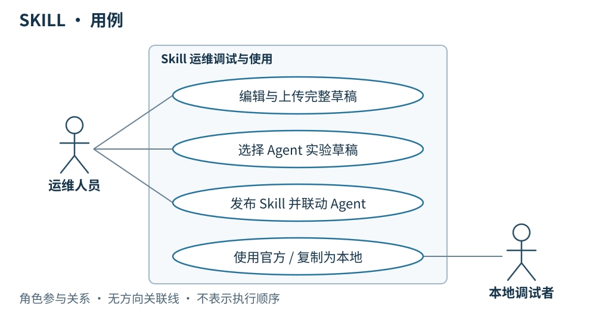
用例图 · 角色与行为关系 简要设计
Skill 的内容结构、路由与平台操作分工、两类 SKILL.md 模板及迭代方式见核心 · 运维 Skill 体系、模板与迭代 。本章说明文件管理、实验、版本与发布操作。
客户端后台按服务端任务指定的 Agent 版本准备并使用 Skill，结果回到服务端 Console。运维调试工作台围绕“编辑 → 实验 → 上传或发布”组织 Skill 操作；本地资源仍可自由编辑、保存，不设发布标签；在页面勾选现有 Agent，就能运行尚未上传的草稿。实验前固定完整快照，日志、截图等实验产物另存。
客户端按整个文件包 保存和装配 Skill，包括说明、脚本、引用资料和随包资源。官方发布包只读，普通用户可同步、查看和使用；运维人员可上传草稿修订、发布新版本。服务端配合集中保存这些官方物料，客户端保留未同步编辑、下载缓存和已下载的历史版本。
调试页面方案：Skill 列表 → 包内文件管理
已安装 @beui-pro/file-manager-workspace
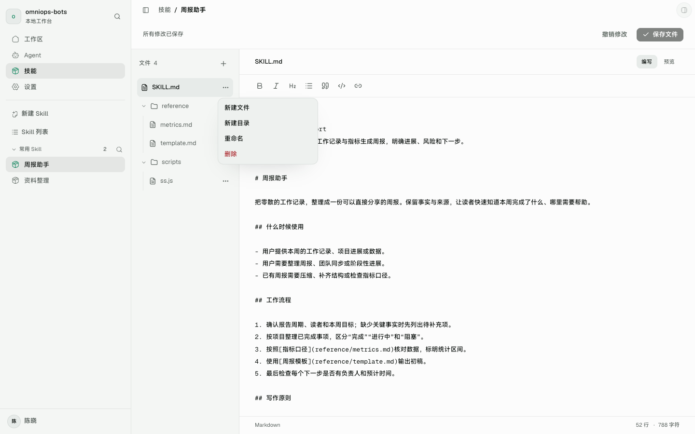
客户端运维调试工作台的 Web 界面实拍：可浏览目录、搜索文件、上传、新建、重命名和删除；官方已发布包只读。 调试工作台已完成列表管理、文件级上传、文本编辑及真实内容持久化。下表保留完整页面目标，其中官方草稿维护、历史版本切换、选 Agent 实验、服务端草稿上传与联动发布尚未接入。当前页面不提供这些操作的假成功入口。
页面区域
内容与操作
Skill 列表
标题「Skill」；按名称搜索；全部、本地、官方筛选；默认列表，每行显示名称、简述、来源，以及本地已保存 / 未同步编辑 / 草稿修订 / 正式标签等对应状态。点击进入该 Skill。
列表主操作
「新建 Skill」创建本地 Skill；官方资源提供「复制为本地」。运维人员可进入官方草稿维护，普通用户没有官方写入入口。
包内文件管理
面包屑显示「Skill / 名称 / 当前目录」；目录导航和文件列表显示名称、类型、大小及操作结果。选中文件后阅读或编辑，保留源码、预览、分栏三种阅读方式。
可编辑内容
「上传文件」支持选择或拖入多个文件，加入当前目录；「新建文件」「新建文件夹」及重命名、删除作用于当前本地内容或官方草稿。上传说明、脚本、图片及附件均保留实际文件内容和相对路径；不支持预览的文件仍可保存。
官方发布版本
展示人工标签和版本轨迹；目录与文件只读，可查看、复制为本地或由运维人员转入草稿维护。切换版本不覆盖本地已下载历史包。
草稿操作区
「选择 Agent 实验」固定当前完整快照；运维人员另有「上传草稿」「发布」。文件尚在写入或有未处理失败时，不把它们当作已保存内容进入实验、上传或发布。
列表没有 Skill 时显示「新建 Skill」；搜索无结果时允许清除筛选。文件区为空时显示当前目录及上传入口。加载和失败状态留在对应列表或目录中，不把失败伪装成空内容。窄窗口收起目录导航，保留面包屑、文件名、状态和上传入口；操作可通过键盘完成，保存与失败结果用文字说明。
组件自带的收藏、最近访问和演示存储统计不进入本期 MVP。已替换组件原版的临时上传存储：浏览器使用 IndexedDB；桌面通过现有 JavaScript runtime 写入真实 Skill 文件目录，重启后可读取。
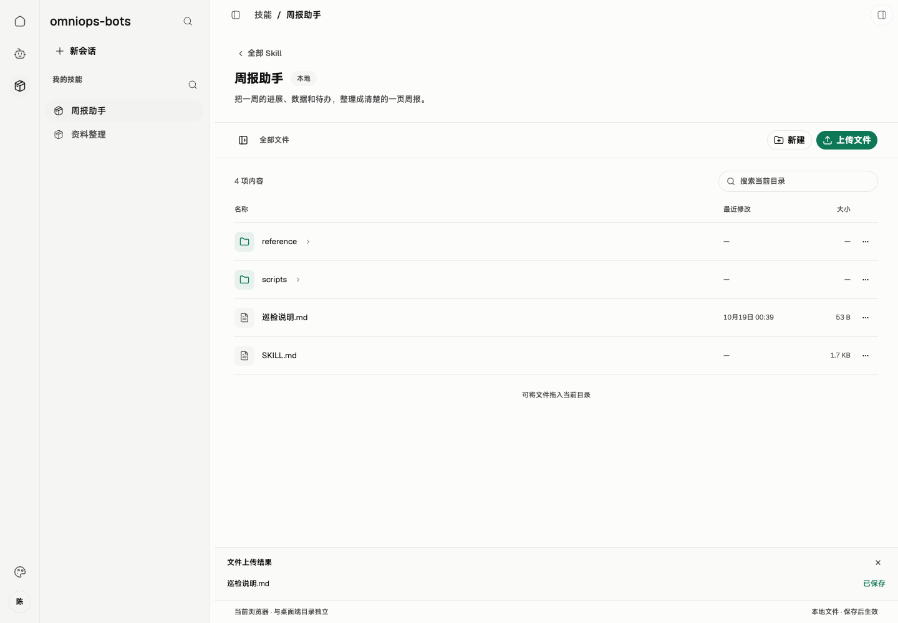
浏览器实测上传 Markdown 文件、修改后保存，刷新页面仍能读取。桌面文件系统另由 runtime 测试验证；此图不是桌面运行截图。 目录与版本规则、当前运行加载路径及后续完整快照装配见客户端 Skill 文件管理、版本与运行加载 。本地包放在 skills/local/<localId>；官方版本放在 skills/releases/<skillId>/<contentId>，人工标签通过 tags.json 映射到内容 ID。正式发布和同步校验仍由后续服务端接入完成。
文件上传与版本的边界
服务端和客户端按相同的 skills/releases/<skillId>/<contentId>/ 存放正式完整包，SKILL.md 直接位于版本目录内；skills/releases/<skillId>/tags.json 保存人工标签到内容 ID 的映射，位于各版本包之外。服务端保留正式历史，客户端只下载所需版本并保留已有缓存。草稿修订使用独立的 drafts/<skillId>/revisions/<draftRevisionId>/，未同步工作副本另放 working/。两端目录对照和运行顺序见 Skill 版本文件布局 。
动作
写入位置与结果
权限
上传文件 / 编辑 / 重命名 / 删除
改变当前可编辑 Skill 的本地内容；尚未同步的修改保留在本机，不生成发布标签
本地资源可自由修改；官方草稿维护仅运维人员
上传草稿
把当前完整文件包保存为服务端草稿修订；不联动 Agent
服务端确认的运维人员
正式发布
固定完整包快照，提交 Skill 与受影响 Agent 的手填新标签，完成联动发布
服务端确认的运维人员
文件级上传不产生独立文件版本，也不直接改写已发布包。同名文件先展示目标路径，由用户选择替换或跳过，不静默改名；目录失效则停止对应写入，不把文件改放到根目录。批量上传分别显示成功和失败，失败项可重试，原文件与其他已成功项保留。重命名、删除前展示目标路径并提醒可能影响包内引用，不自动改写其他文件的内容。
早期编辑界面与组件参考 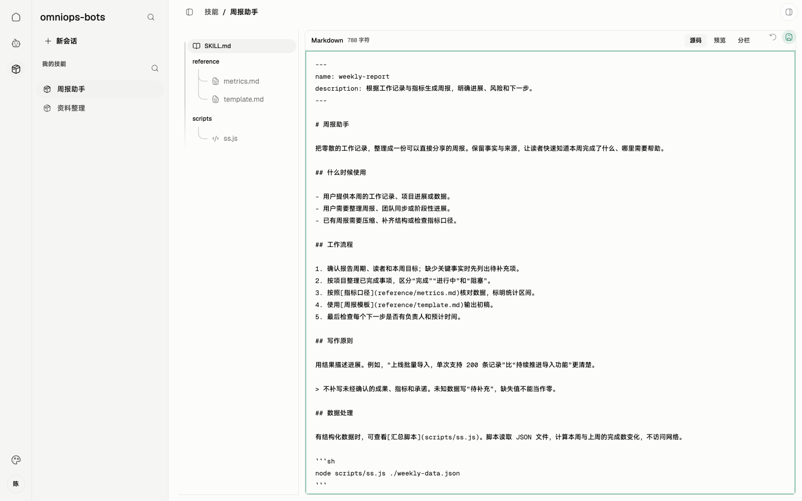
现有 Web 实拍 · 演示数据 · 点击查看原图 早期单文件编辑器截图。当前包内编辑继续提供源码、预览和分栏模式；完整草稿实验与发布尚未接入。
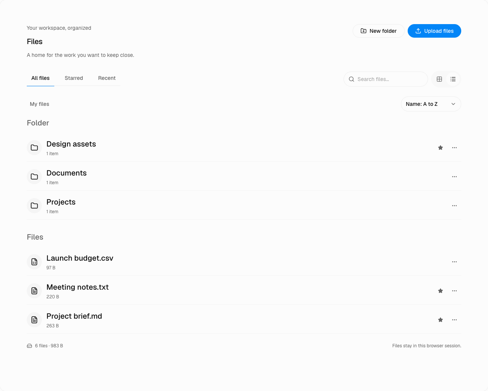
上游组件参考，来源：pro.beui.dev/components/file-manager；英文内容为组件示例。 客户端
在运维调试工作台提供 Skill 列表、新建本地 Skill、官方复制本地，以及包内文件和目录管理；官方发布版本保持只读。
文件级上传保存真实文件内容、相对路径与当前草稿变更，支持文本和二进制资源；不把浏览器临时地址当作已持久化文件。
在运维调试工作台提供编辑、保存、实验、上传草稿与发布入口；清楚区分本地已保存、未同步编辑、服务端草稿修订与正式发布标签。
实验只需在页面选择现有 Agent，临时装配当前草稿，运行前固定完整快照，在本地实验会话中展示过程与结果。
未上传草稿也可实验，不修改模板 Agent，不要求发布标签或实验通过证明。
服务端任务及本地调试新会话按 Agent 清单下载缺失包；保留已下载旧版本，不自动覆盖或清理。已有会话继续使用初始快照。
详细设计
运行模型一：向当前 Skill 上传文件
条件： 本地调试时，从工作台 Skill 列表进入本地 Skill，或运维人员进入官方草稿，选择目标目录后上传文件。该操作先写入本机，符合客户端保留未同步编辑的约定。
运行模型（顺序图）· 点击缩放查看 打开交互顺序图：Skill 文件级上传
结果： 客户端在实际写入完成后更新文件列表及保存状态，重启后可读取。官方草稿显示未同步编辑；本地调试使用者按需选择实验，运维人员按需上传完整草稿或正式发布。普通用户的本地文件操作不触发服务端写入。
运行模型二：同名替换失败，保留原文件
条件： 上传文件与目标目录中的文件同名。客户端先询问替换或跳过；本图展示选择替换但本地写入失败的情况。
运行模型（顺序图）· 点击缩放查看 打开交互顺序图：同名冲突与写入失败
结果： 原文件保持可读，失败项展示原因，不能标为已保存。调试使用者重试时仍以明确的目标路径写入；选择跳过则不写入该项。批次中其他已成功文件不撤销。新建、编辑、重命名和删除失败也保留可恢复的原内容与当前未保存编辑，不生成新的完整包版本。
运行模型三：在客户端调试工作台实验草稿
条件： 本地调试时，在工作台 Skill 页面勾选现有 Agent 作为模板；草稿可以尚未上传。客户端准备好其他物料、完成工具检查，并在并发容量可用时绑定实验会话自己的页面后开始实验。
运行模型（顺序图）· 点击缩放查看 打开交互顺序图：Skill 草稿实验
结果： 实验使用运行前固定的完整装配快照，过程与结果展示在本地调试实验会话。线上业务由 Console 发起，服务端 Agent 调用客户端后台执行，不经过这个手动实验入口。原 Agent 和已发布 Skill 不变，不要求发布标签；日志、截图等产物另存，不混入 Skill 文件包。
运行模型四：上传草稿修订
条件： 运维人员选择上传当前完整 Skill 文件包。客户端先固定已保存草稿的完整快照，再使用现有登录与 Token 上传，权限由服务端判断；上传开始后的继续编辑不改变本次快照。
运行模型（顺序图）· 点击缩放查看 打开交互顺序图：Skill 草稿上传
结果： 成功后客户端显示服务端保存的草稿修订。此时不发布 Skill，也不联动 Agent；权限不符或上传失败时展示原因，本地草稿仍保留。对于官方 Skill，普通用户只同步、查看和使用已发布版本；本地 Skill 仍可自由管理。
运行模型五：正式联动发布
条件： 运维人员决定发布完整 Skill 快照，并手填 Skill 与所有受影响官方 Agent 的新标签，统一使用 v.1.0.0 形式。提交表示已经确认，不设置审核或强制实验门槛。
运行模型（顺序图）· 点击缩放查看 打开交互顺序图：Skill 与 Agent 联动发布
结果： 服务端一次完成 Skill 发布、受影响 Agent 装配更新、新 Agent ID 生成及手填标签保存；客户端显示本次发布结果。权限或标签校验失败则显示原因，不显示发布成功。已发布内容不可变，标签不能改指向、覆盖或重用。
本地 Agent 可直接装配官方已发布 Skill。需要修改官方内容时，复制成本地 Skill；维护官方内容则编辑草稿并发布新版。两条路径都不改写历史发布包，也不自动清理旧版本。
服务端配合
为支持客户端后台装配以及运维调试工作台的草稿保存、发布与同步，服务端需要配合：
基于现有登录与 Token 返回用户身份和运维权限，并校验草稿上传、创建版本、正式发布请求。
接收包含目录、相对路径及真实文件内容的完整草稿修订与不可变发布包，提供版本清单和 HTTPS 下载。文件级编辑发生在客户端，不新增文件级发布或服务端审批流程。
正式版本、草稿修订与客户端使用相同的相对目录和包内结构；发布时按客户端一致的算法生成内容 ID，标签与系统发布元信息保存在包外，不通过传输改变文件字节。
向客户端提供正式发布所影响的官方 Agent；按新 Skill 版本更新装配、生成新 Agent ID。
接收客户端提交的 Skill 标签及各受影响 Agent 的手填新标签，一次完成联动发布。保存草稿不联动 Agent。
02 · MCP
串讲重点：线上用户在服务端 Console 操作，服务端 Agent 以任务调用客户端；客户端后台按 Agent 配置连接远端 MCP、调用工具并回传结果，完整配置和调用过程留在运维调试工作台。
US
运维调试界面设计
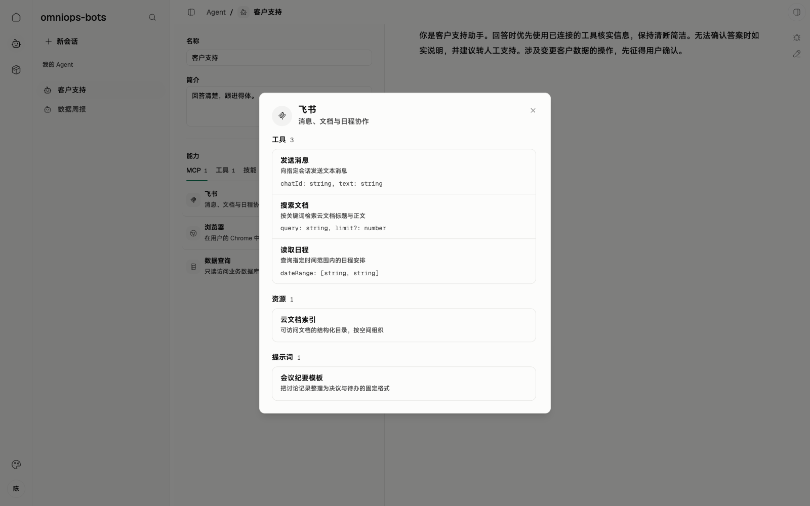
客户端运维调试工作台实拍，图中使用演示数据；线上客户端仅提供连接状态等基础信息。 MCP 位于客户端调试工作台的 Agent 能力配置区，支持选择服务、查看工具/资源/提示词清单，以及展示连接配置或引用、连接状态和失败原因。官方 Agent 的配置只读；配置随 Agent 同步，MCP 服务本身不纳入发布版本。
作为运维人员，我为官方 Agent 配好所需 MCP，供客户端随官方 Agent 后台同步并装配。
作为线上用户，我在服务端 Console 发起业务，由服务端 Agent 下发任务，客户端后台连接远端 MCP，包括内部服务提供的 MCP，执行所需操作。
作为线上用户，我在 Console 查看任务结果和失败信息；运维调试时可在客户端查看当次启用的 MCP、工具清单和调用过程，追溯实际能力。
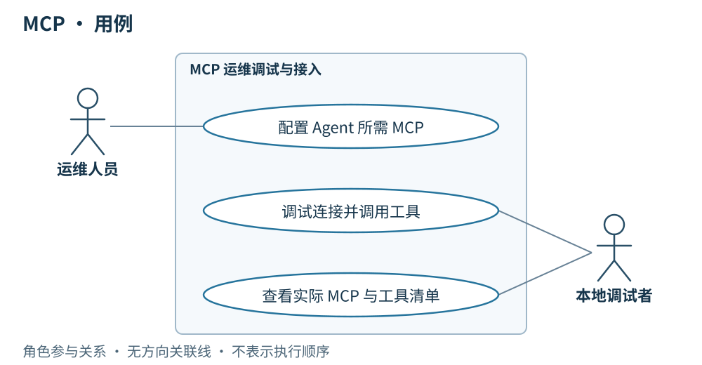
用例图 · 角色与行为关系 简要设计
运维调试时，在客户端的 Agent 能力区选择 MCP、查看能力清单；线上任务由服务端 Agent 从 Console 业务流程中发起，客户端在后台运行 Agent 时，按装配配置连接对应的远端 MCP 并调用工具。MCP 可以来自内部服务，也可以来自其他已配置的远端地址。
官方 Agent 所需的 MCP 连接配置或引用随 Agent 一并同步，客户端保持只读；本地 Agent 使用自己的配置。配置选择参与 Agent 内容 ID，更改官方装配需要形成新的 Agent 版本。外部 MCP 服务实现本身不进入本项目的版本与发布体系 ，不固定其工具行为或发布周期。
MCP 实现按“只做兼容性正向优化”的基础能力维护，不提供本项目的历史实现选择或回退；这不保证每次升级必然改善任务效果。连接配置变化仍形成新的 Agent 内容 ID，远端实现升级本身不改变 Agent 运行指纹，评估时结合运行快照核对实际能力，详见前置 · Agent 版本管理 。
客户端
随官方 Agent 同步所需 MCP 连接配置，按当次装配建立远端连接并使用工具。
官方 Agent 的 MCP 配置保持只读；本地 Agent 按自身配置使用 MCP。
后台保存工具调用过程，向服务端回传任务结果与失败信息，供线上用户在 Console 查看；完整过程在客户端运维调试会话中展示，运行快照记录启用的 MCP 与工具清单。
密钥和 Token 不进入运行快照；配置的同步不意味着将凭据写入可观测记录。
详细设计
运行模型一：连接成功并调用 MCP
条件： 客户端已固定本轮使用的 Agent 装配；官方 MCP 配置或引用随 Agent 同步，本地 Agent 使用自己的配置。所需远端 MCP 可用。
运行模型（顺序图）· 点击缩放查看 打开交互顺序图：MCP 连接与调用
结果： 客户端取得能力清单后在后台执行所需工具调用并记录过程，将工具结果纳入回传服务端的任务结果，供 Console 展示；运维调试工作台可查看完整过程。运行快照记录启用的 MCP 与工具清单，不包含密钥和 Token。图中的 Agent 物料是当次装配，不表示每次工具调用都重新同步。
运行模型二：所需 MCP 连接失败
条件： 本轮所需 MCP 无法连接或鉴权失败。线上调用方是服务端 Agent；本地手动调用只用于运维调试。
运行模型（顺序图）· 点击缩放查看 打开交互顺序图：MCP 连接失败
结果： 客户端不进入该 MCP 的工具调用，记录失败原因并按任务结果回传规则通知服务端，由 Console 呈现；运维调试工作台可查看失败详情。连接成功后若实际工具调用失败，同样记录该调用错误并纳入本轮失败结果，不把失败伪装为成功。
MCP 可以由内部服务或其他远端服务提供。服务端作为配置来源、MCP 作为工具服务，是两个职责，部署在同一处也不合并其含义。MVP 不增加 MCP 发布标签、服务实现下载、独立升级器或监控平台；具体鉴权方式和传输参数随实际接入确定。
服务端配合
为支持客户端获取配置、连接 MCP，服务端需要配合：
将官方 Agent 所需 MCP 配置或引用纳入 Agent 物料，提供同步。
校验官方配置写入者的运维权限，向普通用户提供已发布配置。
若由内部服务提供 MCP，提供可供客户端连接的接入点；其内部实现和发布流程不在本规格范围内。
线上用户在服务端 Console 操作；服务端 Agent 经 LangGraph 编排，以独立任务调用客户端 Agent。客户端后台承担实际执行及 MCP 调用，回传结果。MCP 的来源不改变这一边界。
03 · builtinTool
串讲重点：线上用户在服务端 Console 操作，客户端后台执行服务端 Agent 下发的任务并检查所需内置工具；工具选择属于运维调试配置，缺失时回传失败并提示更新客户端。
运维调试界面设计
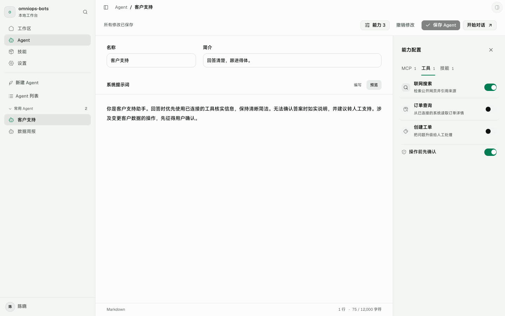
客户端运维调试工作台实拍，图中使用演示数据；线上客户端仅提供连接状态等基础信息。 客户端运维调试工作台的 Agent 能力区通过“工具”页签展示并选择 builtinTool，线上用户在服务端 Console 发起业务，不进入该配置页。运行前检查所需工具；缺失时列出工具名称、说明失败原因，并提供桌面更新入口。截图中的“操作前先确认”不属于本期 MVP 流程。
作为运维人员，我为 Agent 选择所需内置工具，让装配明确表达执行需要。
作为线上用户，我在 Console 获知任务因缺少工具失败，按提示完成客户端更新后重新发起业务。
作为线上用户，我在 Console 查看任务结果；运维调试时可在客户端追溯当次工具清单和桌面端版本。
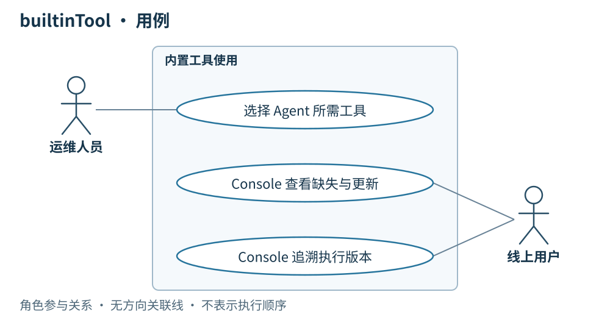
用例图 · 角色与行为关系 运维调试工作台在 Agent 的“工具”页签展示可选 builtinTool，保存选定的工具清单；官方装配写入仍须运维权限，本地 Agent 可自由编辑。线上由服务端 Agent 以任务调用客户端，客户端在后台执行。每次运行前，对照已安装桌面版本提供的工具检查装配是否齐全；缺失就结束本次任务，向服务端回传缺失原因供 Console 提示，并通过客户端基础更新入口处理更新。
builtinTool 的实现随桌面应用版本交付，不建立独立工具包发布与同步系统。Agent 版本固定工具选择；桌面端版本说明实际实现。 所选 builtinTool 参与 Agent 内容 ID；客户端运行快照记录实际桌面版本和工具清单，不另设工具发布标签。
builtinTool 实现按“只做兼容性正向优化”的基础能力维护，不建立独立的多版本选择或回退体系；这不保证每次升级必然改善任务效果。工具选择变化仍形成新的 Agent 内容 ID，仅实现随桌面升级不改变 Agent 运行指纹，评估时结合实际桌面版本判断，详见前置 · Agent 版本管理 。
根据已安装桌面版本提供可用内置工具，执行前检查 Agent 所需工具是否齐全。
缺少任一所需工具时直接失败，明确提示缺失原因及更新桌面端；不带着不完整装配开始执行。
工具齐全后在后台按 Agent 装配执行，保存工具调用过程并向服务端回传结果；完整过程供客户端运维调试工作台查看。
运行快照记录启用的工具清单和桌面端版本；调用状态、错误与起止时间仍放入执行记录。
运行模型一：所需工具齐全
条件： 客户端收到一轮任务，按固定的 Agent 装配检查所需 builtinTool。线上由服务端 Agent 下发任务，本地手动调用只用于运维调试；物料准备、其他运行检查均成功，本会话空闲且并发容量可用。
运行模型（顺序图）· 点击缩放查看 打开交互顺序图：builtinTool 齐全
结果： 客户端固定运行快照后在后台执行本轮任务，保存过程与结果，并按回传规则返回服务端，供线上用户在 Console 查看；完整过程可在运维调试工作台查看。快照记录当次工具清单与桌面端版本，工具实现由该桌面版本确定。
运行模型二：缺少所需工具
条件： 运行前发现至少一个 Agent 所需 builtinTool 不在当前桌面版本中。
运行模型（顺序图）· 点击缩放查看 打开交互顺序图：builtinTool 缺失
结果： 本轮直接失败，不开始 Chrome 操作。客户端记录缺失工具并向服务端回传失败原因，Console 提示任务失败与更新要求，客户端基础更新入口和运维调试工作台提供对应说明。完成更新后由用户在 Console 重新发起业务，或由服务端 Agent 显式发起新任务；本地调试可手动重试，不自动重跑该失败任务。
Skill 缺失仍按物料同步规则下载完整文件包；builtinTool 缺失通过桌面应用更新解决。桌面版本检查、下载和安装见 05 · 桌面端更新 。MVP 不增加内置工具独立安装、热更新或单独版本仓库。
为支持客户端装配与检查，服务端需要配合：
在官方 Agent 物料中提供所需 builtinTool 清单。
接收运维人员提交的工具选择变更，按 Agent 发布规则生成新的 Agent ID、保存手填发布标签。
远端调用失败时，接收客户端返回的工具缺失结果，决定后续处理。
builtinTool 实现由桌面应用交付，服务端物料同步不单独分发工具实现，也不将其混入 Skill 文件包。
04 · Agent：装配、发布与会话
串讲重点：线上用户在服务端 Console 操作，服务端 Agent 以独立任务调用客户端 Agent；客户端后台完成装配与执行并回传结果，完整编辑、手动会话和过程工作台用于运维调试；核心资产按版本演进。
US
运维调试界面设计
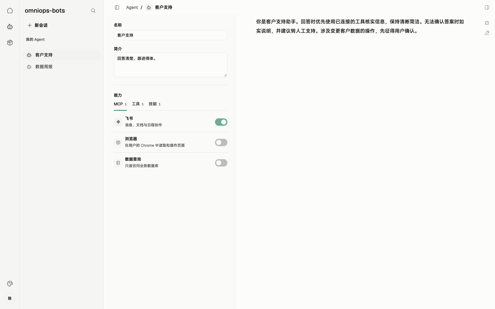
客户端运维调试工作台实拍，图中使用演示数据；线上客户端通常作为后台进程运行，仅提供连接状态等基础信息。 客户端运维调试工作台的 Agent 页面包含名称、描述、系统提示词及 MCP、builtinTool、Skill 装配配置。资源标明本地或官方来源，展示内容 ID、发布标签与固定的 Skill 版本。官方发布配置只读；本地调试时可发起手动会话并查看运行快照。线上业务发起、交互及结果查看都在服务端 Console，不以调试桌面为用户入口。
作为线上用户，我在服务端 Console 发起业务，由服务端 Agent 以任务调用客户端后台执行，并在 Console 查看结果。
作为运维人员，我能发布固定装配的官方 Agent，用手填标签标识发布版本。
作为运维或本地调试使用者，我能自由编辑本地 Agent、选择官方 Agent 发起手动调试会话，并在工作台查看远端任务的独立只读会话与过程。
作为使用者，我能追溯实际装配和运行条件，已有会话不受新发布影响。
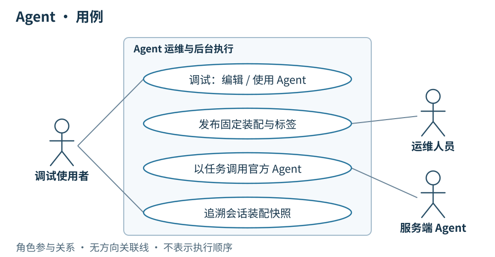
用例图 · 角色与行为关系 简要设计
线上主链路是用户在服务端 Console 发起业务，服务端 Agent 以任务调用确定版本的官方客户端 Agent；客户端在后台固定装配、执行并回传结果，用户在 Console 继续业务操作。客户端运维调试工作台另提供本地 Agent 编辑和官方 Agent 调试两条路径，入口定位不改变既有资源读写权限。本地 Agent 可以随时编辑、保存，不设发布标签，服务端不会调用它。调试时同步官方 Agent 后，可以查看只读配置并主动发起手动会话；运维人员在客户端维护官方草稿并发布新版本，由服务端配合保存和分发。
客户端开始会话时固定 Agent 与 Skill 快照，并按装配执行。运维调试时主动发起的手动会话允许正常输入；接到服务端 Agent 调用时，客户端使用传入的上下文新建独立任务会话，后台执行并向服务端回传结果。该会话在本地调试工作台只供查看过程和结果，不接受追加指令；线上用户通过 Console 查看结果，不需要打开调试桌面。
Agent 的内容 ID 根据系统提示词、固定 Skill 版本、所选 builtinTool 和 MCP 装配配置生成。正式发布时手填 v.1.0.0 形式的标签，已发布内容和标签指向不可变。Provider、模型和推理参数属于运行条件，不参与内容 ID；Provider 的非敏感接入身份、实际模型与参数记录于运行快照。
在发布内容 ID 之外，新增需求是在运行前结合固定 Agent／Skill 版本、实际模型与推理参数，自动生成 Agent 运行指纹，用于评估分组与显式回退。{AgentName}.{Version} 指定该 Agent 版本的系统提示词，Prompt 随 Agent 版本管理；改模型不重新发布 Agent，但改变运行指纹。该指纹及评估回退尚待实现，规则见前置 · Agent 版本管理 。
装配清单里保存什么
组成
清单保存的内容
运行时装配成什么
版本边界
Agent 提示词
系统提示词的确定正文：角色、任务目标、边界与输出要求
本次 Agent 的系统指令
提示词修改参与 Agent 新内容 ID；随 Agent 发布，不单独维护提示词标签
Skill
官方 Skill 的身份、完整包内容 ID 和挂载路径；展示标签从外部版本清单取得，本地 Agent 也可引用本地包
会话目录下完整、只读的 Skill 快照，包括入口与包内引用文件
正式 Agent 固定官方 Skill 内容 ID；本地可编辑包在运行前固定快照，不使用浮动“最新版”代替
builtinTool
所选内置工具 ID
当前桌面版本中对应的可调用工具实现
工具选择参与 Agent 内容 ID；实现随桌面版本，缺失时提示更新，不通过 Skill 同步安装
MCP
所选远端服务的完整非敏感连接配置、凭据引用
远端连接与该服务返回的工具定义、调用入口
非敏感装配配置参与 Agent 内容 ID；MCP 服务本身没有本项目发布标签，也不保证外部实现历史冻结
运行条件
当前会话实际选用的 Provider 非敏感接入身份、模型、推理参数与桌面版本
模型实例和运行环境
记录在运行快照，不因 Provider、模型或参数变化发布新的 Agent
配置保存的是“本次需要哪些能力”，运行装配则将它们解析为实际文件和可调用工具。MVP 保持 MCP 服务级选择：连接选中的服务并取得工具清单，不新增逐工具授权管理界面。密钥、Token 从运行时凭据来源取得，其值不进入发布指纹或快照。
Provider 管理、系统凭据存储、多模型选择与手动连接测试的当前状态以 11 · Provider 为准。客户端接入配置属于部署与运维调试；手动新会话开始前可改选本地默认 Provider 与模型，开始后固定，后续轮次不跟随默认项变化。线上任务沿用明确的本地接入条件，不通过任务正文传递密钥或自动切换模型。所选接入不可用时明确失败；Provider Key 从系统凭据库读取，其值不进入 Agent 包、运行快照或诊断材料。
两端一致的 Agent 版本文件
服务端与客户端均采用 agents/releases/<agentId>/<contentId>/：agentId 是稳定资源身份，contentId 是确定装配的版本摘要。每个版本只包含 prompt.md 和 agent.json；人工标签保存在上一级 tags.json，不进入版本包。正式调用携带的 agentContentId 就是这里的 contentId。
文件
保存内容
prompt.md该版本完整系统提示词正文
agent.json名称与描述、promptFile、builtin toolIds、完整非敏感 mcpServers、固定的 skills[{skillId, contentId, mountPath}]
../tags.json运维手填的 v.1.0.0 等标签到 Agent 内容 ID 的不可变映射
Skill 完整文件包独立保存于 skills/releases/<skillId>/<contentId>/，由 Agent 引用并在运行前复制到会话快照。MCP 凭据只保存引用，不能仅存可变全局 MCP ID；tool 只保存选择，具体实现随桌面版本交付。Agent 内容摘要覆盖两个文件的原始字节，使用与 Skill 相同的文件清单摘要规则。
上述正式多版本布局待接入；当前本地 Agent 仍存于 agents/<agentId>.json，现有配置摘要和运行快照摘要不等同于新正式包摘要。完整目录、JSON 示例、草稿修订、发布同步与运行装配顺序图见 Agent 版本文件布局 。
与每周资产发布的关系
Agent 提示词和 Skill 是持续改进的核心资产。只修改提示词时，发布新的 Agent，原 Skill 包继续复用；修改 Skill 时，正式发布完整新包，并一次更新所有受影响官方 Agent 的引用、内容 ID 和人工新标签。周内编辑与保存草稿不联动，按周选择已确认的改进发布；详见总体设计中的周迭代 。
以下描述完整装配流程。当前本地实现已支持 Agent 配置持久化、完整 Skill 包捕获与只读挂载、会话固定快照、builtinTool 白名单和真实 MCP 连接；graphs/browser-agent.ts 负责图装配，浏览器工具经 Playwright 操作外部 Chrome。官方版本发布、远端下载同步与 WebSocket 调用仍待接入。实际入口见Skill 存储与运行加载 ，服务端契约汇总见 10 · 服务端 API 。
Agent 装配与运行快照的关系 结构或状态概览 · 点击缩放查看 打开装配关系图
客户端
在运维调试工作台提供本地 Agent 编辑；允许直接引用官方已发布 Skill，修改官方 Skill 时先复制成本地副本。
官方配置保持只读；运维调试手动会话可以正常输入。线上服务端任务在后台执行并回传 Console，调试工作台可查看其独立只读会话，不接受本地追加指令。
远端每次调用创建独立会话；手动会话固定开始时的 Agent、Skill 快照，新版只对新会话生效。
运维调试工作台的 Skill 实验页面勾选现有 Agent 作为模板，临时替换为草稿装配，不修改原 Agent，也不产生发布标签。
将 MCP 配置解析为远端连接及工具，将 builtinTool ID 解析为本机实现，将 Skill 引用解析为完整包快照；装配成功后才构造 Agent 并开始执行。
发现物料缺失、工具缺失或 MCP 接入失败时，显示具体失败项并停止本次准备；不静默删除能力后继续运行。
详细设计
运行模型一：完整装配后开始执行
条件： 线上由服务端 Agent 传入确定的官方 Agent 版本与上下文，以任务调用客户端；运维调试时也可手动选定 Agent 发起新会话。图中展示官方 Agent 缺少部分 Skill 包、同步和各项检查均成功的情况；缓存已齐全则跳过下载。本地 Agent 读取当前已保存配置，并在本次准备中固定其内容。
运行模型（顺序图）· 点击缩放查看 打开运行模型：Agent 完整装配
装配按下面的顺序完成。表中的步骤是客户端职责，不要求拆成独立服务：
步骤
客户端动作
得到的确定结果
1. 读取 Agent
确定 Agent 配置与提示词；官方调用核对指定内容 ID，取得关联物料清单
提示词、Skill 引用、builtinTool 选择和 MCP 配置属于同一个 Agent 装配
2. 准备 Skill
按内容 ID 检查 .omnimind-ops/skills/releases；缺失包走 HTTPS 下载并校验。官方指定包与本地包的当前内容均完整复制到会话快照目录
每个 Skill 都有本次固定目录，保留内部相对路径；历史发布包和其他会话不变
3. 解析 builtinTool
在当前桌面提供的工具集合中逐个查找所选 ID，绑定其输入定义和调用实现
本次允许模型使用的内置工具集合；缺失任一项就停止
4. 连接 MCP
解析随 Agent 同步的连接配置，运行时取得凭据，连接选中的远端服务并读取工具清单
将各工具的名称、说明、输入定义与远端调用入口绑定；不下载 MCP 服务实现
5. 合并工具
汇总已选 builtinTool 与 MCP 工具，保留每个入口的来源与实际调用目标
一个明确的可调用工具集合；同名且无法明确区分时失败，不静默覆盖其中一个工具
6. 固定运行条件
保存 Agent／Skill 身份、启用工具和 MCP 清单、桌面版本、Provider 非敏感接入身份、模型与参数
本次运行快照不含密钥或 Token；调用 ID、状态、起止时间与错误另记执行记录
7. 构造并执行
确认本会话空闲且并发容量可用，绑定会话页面后，把系统提示词、合并工具、只读 Skill 后端和所选 Skill 路径显式交给运行引擎
LangGraph.js / Deep Agents 按固定装配执行；忙时直接返回，不开始模型或 Chrome 操作
系统提示词描述 Agent 的任务与边界；Skill 通过只读文件后端提供方法和资料，模型按需读取入口与引用文件。包内脚本不会因为被上传而自动执行；需要执行操作时仍通过实际装配的工具入口完成。builtinTool 在客户端调用，MCP 工具通过已配置的连接调用远端，二者的结果回到同一次 Agent 运行。MCP 返回的 resource、prompt 与 tool 是不同能力，不把 resource／prompt 自动注册成工具，也不自动覆盖 Agent 系统提示词。
结果： 本次运行获得明确的提示词、可读 Skill 文件集合和可调用工具集合。不能把包含所有历史版本的 Skill 根目录直接作为本次搜索范围。手动会话后续轮次复用原 Agent／Skill 快照及配置；MCP 连接可以重新建立，但这不代表外部服务行为被快照冻结。每轮仍重新检查本会话的运行状态、页面手动导航状态与总并发容量，浏览器目标保持为本会话页面。
运行模型二：装配失败时停止
条件： Agent 与 Skill 已解析，但所需 MCP 无法连接或鉴权失败。图中只展示这一条失败路径，其他失败按下表处理。
运行模型（顺序图）· 点击缩放查看 打开运行模型：Agent 装配失败
失败位置
本次处理
Agent 版本无法取得或不匹配
同步所需版本；同步失败就结束，不改用其他 Agent
Skill 缺包且补齐失败，或包校验失败
结束本次准备，保留已下载的完整历史包，不挂载半包或旧版代替；正常缺包先下载指定版本
builtinTool 缺失
列出缺失工具并提示更新桌面端，不通过物料同步安装工具实现
MCP 连接、鉴权失败或工具清单无法取得
标明失败的 MCP 并结束；不移除这个 MCP 后继续执行
固定的 Provider／模型不可用，或所需凭据无法读取
明确报错，不回退到全局默认或其他接入；规则见 Provider
工具名称存在无法区分的冲突
指出冲突来源，要求调整装配，不静默选择任意实现
快照保存或运行引擎构造失败
记录准备失败，不进入模型与 Chrome 操作
同一会话正在执行、其页面正在手动导航或总并发容量已满
返回“忙”，由 Console 业务操作或服务端 Agent 显式重新安排；本地调试可手动重试，不排入客户端任务队列
结果： 客户端记录失败环节和原因，按原调用 ID 向服务端回传失败，供 Console 展示；运维调试工作台可查看详情。若已受理则释放该轮运行容量，已有缓存与未同步编辑保留，不自动重试整次任务。此处沿用已确认的状态、错误与运行快照观测边界，本次文档补充不新增日志、span 或指标要求。
运行模型三：运维调试时编辑本地 Agent 后开始手动会话
**条件：**运维或本地调试使用者在工作台编辑本地 Agent 并保存；本次所需物料已准备好，builtinTool 检查通过。客户端在并发容量可用并绑定本会话页面后执行。
运行模型（顺序图）· 点击缩放查看 打开运行模型
**结果：**本轮手动调试按确定的 Agent、Skill 和运行条件执行。之后再编辑本地 Agent，也不会改变这个会话已经固定的快照；修改从新会话生效。本地 Agent 不设发布标签，也不接受服务端调用。缺包、缺少工具和忙时的处理分别见同步与装配 、builtinTool 与任务执行与恢复 。
运行模型四：官方发布新版，已有调试会话继续使用原快照
**条件：**运维调试工作台已有手动会话已经固定快照；随后官方发布了新的 Agent 装配。图中先展示调试者继续旧会话，再展示另开新会话，两次输入分别触发各自的准备和执行。
运行模型（顺序图）· 点击缩放查看 打开运行模型
**结果：**旧会话的原 Agent、Skill 版本保持不变；新调试会话按所选官方新版同步物料并固定新快照。官方配置始终只读，手动调试会话可以继续输入。线上每次服务端 Agent 任务调用另建独立会话，在后台执行并回传 Console，本地调试只读查看；具体运行模型见任务执行与恢复 。
对象
用途
变化规则
Agent 内容 ID
标识确定的能力装配
系统提示词、Skill 版本、builtinTool 选择或 MCP 装配变化后生成新 ID
正式发布标签
人工识别一次官方发布
手填 v.1.0.0 形式，不改指向、不重用
运行快照
追溯本次实际执行条件
运行前生成，不建立发布版本
运行快照保留 Agent/Skill 内容身份、官方标签、启用工具和 MCP 清单、桌面端版本、Provider 非敏感接入身份、实际模型与参数；密钥和 Token 不进入快照。调用 ID、状态和错误属于执行记录。仅调整 Provider、模型或参数不发布新 Agent，实际选择记录在新会话的运行快照中。
服务端配合
为支持 Console 业务主链路、客户端后台执行以及运维调试维护官方 Agent，服务端需要配合：
接收并保存官方 Agent 草稿修订、装配清单、内容 ID 和手填发布标签，校验运维写入权限，并提供同步物料。
按与客户端相同的 agents/releases/<agentId>/<contentId>/ 保存完整版本，提供 prompt.md、agent.json 和包外标签映射；清单固定 Skill 内容 ID、builtinTool ID 与完整非敏感 MCP 配置，凭据值不进入发布文件或运行快照。
Skill 正式发布时向客户端提供受影响 Agent，更新装配并生成新的内容 ID；接收同次手填的新标签完成联动发布。保存 Skill 草稿不联动。
支持每周发布已确认的提示词与 Skill 改进并保留历史装配；只改提示词时可单独发布 Agent，MCP 服务和内置工具实现不随资产周发布复制一份。
接收线上用户在 Console 的业务操作，由服务端 Agent 经 LangGraph 以独立任务调用客户端 Agent，传入确定版本与上下文，接收执行结果并在 Console 呈现。每个 Agent 的业务输入输出由服务端单独定义，本章不展开。
05 桌面端更新
串讲重点：客户端日常后台执行服务端 Agent 下发的任务；更新通过本机基础状态／维护入口处理，由用户决定下载和安装时机，只有空闲时才能安装重启。 桌面更新与 Skill、Agent 物料同步分别进行。
US
界面设计
线上用户在服务端 Console 发起业务、查看任务状态与结果；客户端仅在基础状态／维护入口提供更新设置，展示当前版本、新版说明和下载进度。用户主动检查、下载并确认安装；页面明确区分下载中、待安装、等待任务结束和失败状态。处理升级不要求打开完整调试工作台，也不改为服务端远程确认安装。
作为用户，我希望启动后得知新版，也能手动检查，查看版本和更新说明。
作为用户，我希望自己决定何时下载、何时安装，并在下载期间继续工作。
作为用户，我希望更新等待任务结束，升级后保留自己的数据和配置。
作为发布人员，我希望各平台完整安装包经过签名验证，再向客户端开放更新。
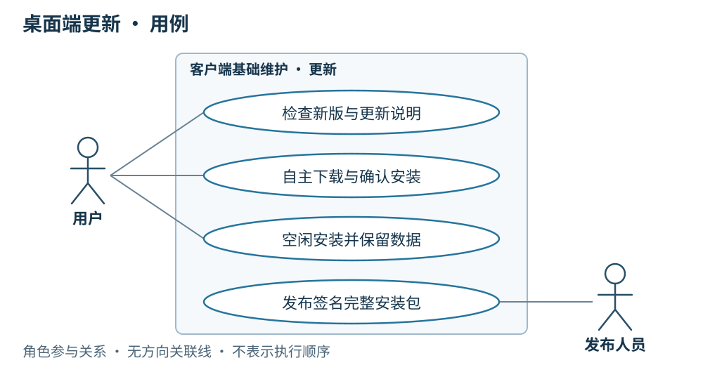
用例图 · 角色与行为关系 简要设计
客户端采用 Tauri 整包更新方案，从内网 HTTPS 静态站点读取清单和下载文件。首版覆盖 macOS arm64、Windows x64，一个稳定通道。前端、Tauri、Node、CEF 及随包运行时一起更新，builtinTool 随之更新；Agent 使用的外部 Google Chrome 单独安装和更新，不进入应用更新包；CEF 保留给手动运维浏览器。
应用版本使用有效 SemVer，与 Skill、Agent 手填的 v.1.0.0 发布标签分别管理。首次带更新能力的客户端手动安装，之后才能应用内升级。
客户端
客户端交付流程在受控构建环境生成最终整包并签名；已安装客户端仅内置公钥，私钥不进入安装包。
客户端启动就绪后非阻塞检查一次，基础状态／维护设置保留手动入口；可稍后处理，不增加定时轮询。
展示适配当前系统、架构的更高版本；用户点击才下载，展示真实进度。
使用 HTTPS 校验和内置公钥验签；网络、清单、下载或验签错误明确提示，不安装、不退出当前应用。
下载成功只进入待安装，仍须用户确认；同版或更旧版本不覆盖当前应用。
详细设计
运行模型一：检查、下载并在空闲时安装
**条件：**存在适配当前系统、架构的更高版本，包下载和校验成功。客户端启动就绪后检查一次，或由用户在基础状态／维护设置中主动检查；两者之后使用相同流程。
运行模型（顺序图）· 点击缩放查看 打开运行模型
**结果：**下载后停留在待安装，用户确认后才再次核对执行活动；空闲时阻止新任务进入，完成运行时与浏览器进程清理，再交给安装器。安装与启动都完成才算成功。更新保留安装包外的会话、配置、脚本、运行证据及本地物料。
运行模型二：确认安装时仍有任务
**条件：**更新包已经校验成功，但用户确认安装时还有执行活动。
运行模型（顺序图）· 点击缩放查看 打开运行模型
**结果：**客户端提示等待，不安装、不退出。任务结束只改变可安装条件，不代替用户确认；用户再次确认后，重新进入模型一的空闲检查和安装准备。任务先开始则安装等待，安装准备先开始则新任务被明确拒绝；服务端 Agent 接收拒绝结果，Console 向用户说明客户端暂不可执行。下载完成和任务结束都不会自动安装。
运行模型三：下载或校验失败
**条件：**本次下载失败，或已下载的包未通过完整性校验、签名验证。图中的两种原因都是直接失败的替代情况，不是连续执行的两个步骤。
运行模型（顺序图）· 点击缩放查看 打开运行模型
**结果：**明确提示原因，不调用安装器，不退出当前应用。检查清单失败、同版或更旧版本、安装准备失败，也不能进入安装步骤；同版或更旧版本不覆盖当前应用。强退或崩溃按任务执行与恢复 处理，不把升级作为任务续跑入口。
验收在两个平台真实已安装的旧版上完成：任务期间不安装、错误包被拒绝、重启后版本正确且数据可用。本期不做差分、静默安装、强制更新、自动回滚或下载断点续传；域名、公钥与平台验收环境属于实施前待配置项。旧规格中的审批场景不增加为本 MVP 功能。
服务端配合
更新站点为客户端提供检查与下载所需的发布产物：
接收客户端交付流程生成并签名的最终更新包；更新站点不持有签名私钥。
静态站点提供 latest.json、更新说明及两个目标的 HTTPS 下载地址和签名；内网下载不要求登录。
两个平台包与清单版本一致，同一版本的包、地址与签名不可变；验证产物都可下载后，最后发布清单。
06 · 同步与装配：清单先行、物料按需
串讲重点：线上用户在服务端 Console 发起业务，服务端 Agent 以任务调用客户端；客户端在后台核对指定版本、补齐缺包，再按 Agent 清单装配，准备失败就停止本次运行。
US
界面设计
线上 Console 展示任务准备、执行或失败状态，服务端 Agent 消费客户端回传的准备状态和失败原因。客户端日常后台完成版本核对、缺包下载与工具检查；本机仅展示连接等基础状态。完整准备过程、资源版本与缓存详情、新建会话均属于运维调试入口。已有调试会话继续使用开始时的快照；同步到的新版本从新会话生效。
作为线上用户，我希望在服务端 Console 发起业务并查看准备状态，所需物料由客户端后台准备。
作为服务端 Agent 调用方，我希望客户端先核对任务指定的 Agent 版本，避免使用其他版本替代。
作为运维人员，我希望客户端只下载当前所需物料，并能在调试入口检查已下载的 Skill 版本轨迹。
作为线上用户，我希望同步或工具检查失败时在 Console 看到明确原因；运维处理后，由服务端 Agent 发起新任务。
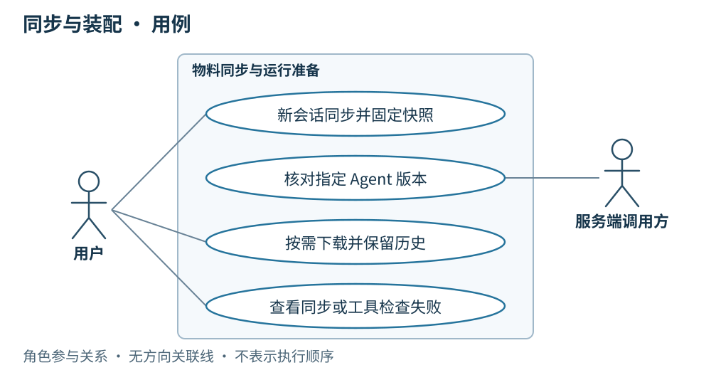
用例图 · 角色与行为关系 简要设计
客户端同步分两步：先获取版本清单，再按当前 Agent 的装配清单补齐缺失物料。不会为了同步清单下载全部历史包。官方资源按版本保存在本地，旧包不自动覆盖或清理；运行时选择对应版本装配。
HTTPS 负责清单和物料传输。WebSocket 负责调用和结果，不承担文件包同步。运维在调试入口维护的未上传本地草稿可以直接实验，运行前固定完整快照，不要求先上传为官方版本。
服务端版本库与客户端缓存一一对应
同一个版本
服务端
客户端
Agent 完整版本
<服务端根>/agents/releases/<agentId>/<contentId>/<客户端根>/agents/releases/<agentId>/<contentId>/
Agent 版本文件
prompt.md 与 agent.json，保存提示词、MCP 配置、tool 和 Skill 引用相同路径、相同原始字节，下载后独立核对摘要
Skill 完整文件包
<服务端根>/skills/releases/<skillId>/<contentId>/<客户端根>/skills/releases/<skillId>/<contentId>/
标签索引
agents/releases/<agentId>/tags.json、skills/releases/<skillId>/tags.json，正式发布新增映射相同相对路径，只接受服务端确认的映射
Skill 包内路径与内容
SKILL.md、引用文件、脚本和资源原始字节相同路径、相同字节，下载后独立核对摘要
两端的物理根路径可以不同，版本相对路径不变。客户端只缓存当前需要的包，不镜像全部历史；标签清单可以包含尚未缓存的版本。完整包先在正式版本目录外暂存，通过摘要和来源校验后再提交；版本包内不增加发布元信息或传输清单。详细目录及失败处理见 Agent 版本文件布局 和 Skill 版本文件布局 。
先取得确定 Agent 版本的两个文件，再按 agent.json.skills 补齐独立 Skill 包；MCP 完整非敏感配置随 Agent 文件取得，不套用本地可变配置。tool 只核对本机实现，不下载实现包。Agent 正式目录与同步尚待接入，当前本地单文件保存及会话快照不变。
客户端
每次服务端 Agent 任务调用核对所需版本，不匹配或缺少物料就先同步；运维在调试入口发起官方新会话时也同步版本清单。
按清单下载缺失 Skill 包及其他 Agent 物料，复用本地已有的相同版本；同步失败则本次调用失败，不降级到旧版。
运行前检查所需 builtinTool；缺失时回传需要更新客户端的失败原因，并在本机维护入口提示更新，不尝试通过 Skill 同步安装内置工具。
Skill 文件固定保存在当前用户主目录下的 .omnimind-ops/skills（macOS 为 ~/.omnimind-ops/skills）。本地可编辑包与官方版本缓存分开；Windows 当前同样使用用户主目录，不硬编码盘符。
当前已接入本地文件持久化、官方缓存完整包摘要校验和会话固定快照；服务端清单、完整包下载与来源验证仍待接入。目录、内容 ID 与人工标签的对应关系，以及当前 LangGraph.js 加载路径见Skill 存储与运行加载 。
详细设计
运行模型一：所需版本已在本地
**条件：**服务端 Agent 下发指定官方 Agent 版本的任务；客户端核对版本清单后，发现本次所需完整物料都已缓存。运维在调试入口发起官方新会话也执行同样准备，但不作为线上用户入口。
运行模型（顺序图）· 点击缩放查看 打开运行模型
**结果：**相同版本不重复下载。客户端检查 builtinTool 并固定运行快照后，才进入执行流程；本地有旧包不代表可以跳过所需版本的核对。
运行模型二：下载本次缺失的物料
**条件：**版本清单已明确本次装配，但本地缺少其中某些完整 Skill 包或其他 Agent 物料。本图只展示下载成功的情况。
运行模型（顺序图）· 点击缩放查看 打开运行模型
**结果：**客户端只下载缺失项，按版本保存后装配。完整非敏感 MCP 配置与 Agent 一并准备，凭据值运行时取得；旧 Agent 与 Skill 包继续保留，不自动覆盖或清理。已有运维调试会话继续使用原快照，同步取得的新版只用于新会话。
运行模型三：核对或下载失败
**条件：**核对清单失败，或者下载所需物料失败、物料不可取得。任一条件都直接结束本次准备，不再继续后面的装配与执行。
运行模型（顺序图）· 点击缩放查看 打开运行模型
**结果：**本次调用失败，不降级到旧版，不使用不完整装配；按原调用 ID 记录并向服务端 Agent 回传明确原因，Console 向线上用户展示任务失败。运维调试入口保留准备详情、本地已有缓存与未同步编辑。原因处理后由服务端 Agent 发起新任务；本地调试调用由运维重新发起。
物料齐备但缺少所需 builtinTool 时同样不能执行：客户端回传更新要求，在本机维护入口提示更新，不通过 Skill 同步补装内置工具，具体顺序见builtinTool 。运维在调试入口运行未上传的本地草稿实验时直接固定完整快照，不要求先经过官方同步。
MVP 不引入 Git 仓库、全量历史镜像或自动清理机制。Skill 磁盘布局已确定：本地包位于 local/<localId>，两端官方完整版本均位于 releases/<skillId>/<contentId>；会话完整包快照另存 .omnimind-ops/runs/<sha256(threadId)>/skills/<mountName>/。准备完成后的页面绑定与运行并发、结果补传和重启恢复见任务执行与恢复 。
服务端配合
为支持客户端核对版本与按需装配，服务端需要：
提供官方已发布 Agent、Skill 的版本清单和缺失物料下载；Agent 版本包包含完整非敏感 MCP 配置及凭据引用。
使用与客户端相同的 Agent、Skill 版本相对目录、包内路径、内容 ID 算法及标签映射；只有完整包与关联 Agent 均可取得后才公布正式发布结果。
服务端 Agent 以任务调用客户端，通过 agentId + agentContentId 明确所需版本，客户端据此核对；接口约定见 10 · 服务端 API 。
保留已发布版本和标签的不可变关系。Skill 发布产生新 Agent 装配，不改写历史版本。
在 Console 呈现线上任务准备状态和失败原因；逐条准备详情、资源缓存和实验入口留给运维调试。
按现有身份体系开放相应读取和运维写入能力，不新增客户端账号体系。
07 · 任务执行与恢复：本地执行约束
运行主线及全部异常顺序图已集中到核心 · A2A 任务执行与恢复 。本章补充现有 Node runtime、浏览器与本机设置的约束，不另定义任务协议。
US
线上用户在 Console 发起业务，客户端后台按确定 Agent 版本执行；不同 Task 使用独立 thread、run 和 Chrome 页面。
用户在 Console 看到标准 Task 状态与最终结果，经服务端请求取消；运维在本地调试桌面查看完整过程与执行证据。
网络断开但进程仍在时继续执行；重连查询当前 Task 并完成结果交付。
重启后只交付已有终态，将未完成 Task 报告为失败且结果未知，不自动续跑。
协议与本地执行分工
WSS 只管理连接、鉴权与收发；A2A 任务处理层管理 tenant 路由、messageId 去重、Task 状态、查询订阅和交付确认；现有 Agent 执行层管理装配、LangGraph、模型、MCP、浏览器、取消清理与本地证据。协议基线、正常调用及边界见核心运行顺序图 。这些是一个 Node runtime 内的职责边界，不要求新增独立服务或通用调度器。
messageId 是稳定任务消息身份，taskId 是桌面创建的 A2A Task 身份；contextId 只关联业务。每个受理 Task 的 thread、run 和 graphThreadId 独立，所需输入与上下文显式传入；忙时拒绝 Task 不创建执行资源。远端任务在调试桌面只读，普通切换或关闭调试视图不停止任务。
浏览器与运行容量
Node.js 按需管理一个外部 Google Chrome 专用环境；运维手动 CEF 独立保留 __manual__ 页面，不复用 Agent 目标或任务锁。每个受理 Task 绑定专用 Chrome 页面，以精确 targetId 寻址；页面丢失即失败，不回退到当前展示页或其他会话页面。结束、失败、取消或超时后保留原页面，runtime 关闭时仅释放它创建的会话页面。
本地、实验和远端运行共用有界并发容量，默认最多 4 轮；同一会话同时只接纳一轮。本地或实验会话等待输入时释放运行容量并保留页面；远端 A2A Task 不进入等待输入状态。绑定页面正在手动导航或总容量已满时不排队；远端合法请求保存 REJECTED Task 与 busy，本地调试界面显示同样原因。
所有 Agent 页面使用同一专用 profile，共享 Cookie、登录态和站点状态；独立页面不代表账号隔离，退出登录与切换账号可能影响其他任务。脚本沿用现有页面约束，不新增创建页面或 BrowserContext 的能力；弹窗不自动成为任务目标。
图执行、取消与唯一结算
图编排由代码定义并随 desktop 发版，Agent 配置负责提示词、Skill 和工具选择。每张图拥有自己的 input、state 和 output，不强制包含 messages；execution 管理生命周期、取消和 checkpoint，chat adapter 转换聊天展示与历史。图内可有原生并行分支，桌面也允许不同 thread 并发；每个 run 的浏览器目标在受理时绑定，不随界面切换变化。
使用同一页面的完整分支通过 scope.browserFlow 串行，锁覆盖导航、读取、模型判断、操作与验证；scope.browserOperation 复用已持有的流程范围并串行执行页面动作，独立调用时为本次动作取得流程范围。浏览器回调逸出的异常立即终止 run，关闭后续动作入口；可恢复业务失败在该回调内转换为结果。普通 scope.operation 的业务失败仍可由图捕获并转换为 state 或分支结果。
未处理异常取消其他分支并锁定首个终止原因；等待已启动操作、连接清理与 checkpoint 写入排空后，单次调用 settle 保存历史或中止证据，再写最终 run 记录、持久提交终态 Task 与 Artifact，完成结算后发布终态并释放运行容量。交付等待不占容量。进入 settle 前冻结取消与超时；稍后的 stop 等待结算完成，不改变已交给结算阶段的执行结果。最终持久提交失败不伪装成功，不丢弃已有结果。
标准 CancelTask 在排空期间返回当前 WORKING Task，以 TaskStatus.message 提示正在停止；真正取消终态落盘后才报告 CANCELED。结果已经固定或已终态时返回 TaskNotCancelableError，由 GetTask 查询。取消只表示本地停止后续执行／消费，不保证上游模型计算已撤销；已完成的外部操作不回滚。
每轮使用统一、可配置的兜底超时。远端超时、缺输入、需要登录／验证均直接进入 FAILED，细分原因通过标准 Message 的 Data Part 表达，不增加私有状态。用户处理后显式新建 Task；失败、取消、超时与重启不自动重跑图或模型。
有任务运行时阻止正常退出并提示等待；强退或崩溃按重启规则处理。SQLite checkpoint 保存根图和子图 namespace 的证据，不替代聊天历史，不触发 invoke／stream／resume。已有本地 checkpoint 已实现，远端 A2A 与诊断导出上传仍待接入。
偏好设置：并发任务上限
项目
规则
设置入口
运维调试桌面 → 设置 → 偏好设置 → 并发任务上限；显示当前有效值，修改后保存
默认与范围
默认 4；只接受 1～64 的整数，空值、小数、越界值均提示错误，不保存
适用范围
本地、实验与远端任务共用；准备、执行和停止排空期间均占用容量，等待用户输入不占用
保存与生效
保存到本机成功后，立即按新上限检查后续任务；重启后保留，不同步到服务端
下调时已有任务
保持运行，不取消；活动数量达到或超过新上限时拒绝新任务，直到低于上限
保存失败
明确提示失败，保留输入以便重试；仍使用保存前的有效上限，不显示已保存
读取失败
设置页明确显示错误并提供重试，不以默认值冒充当前有效值，也不覆盖无法读取或损坏的文件；重试重新读取磁盘。此前已确认的有效值继续生效；启动时没有有效值则拒绝新任务，资源和设置界面仍可打开
例如已有 4 个任务运行时把上限保存为 2，4 个任务继续执行；活动数量降至 1 后，才可再受理 1 个任务。上调上限则在保存成功后开放新增容量。同一会话仍只接纳一轮，独立标签页仍共享登录态。
桌面偏好保存在客户端数据目录的 settings.json，字段为 maxConcurrentRuns，以原子写入替换文件。启动时已保存的偏好优先；只有尚未保存偏好时才使用 OMNIOPS_BOTS_MAX_CONCURRENT_RUNS 作为初始值，未配置该环境变量则使用 4。现有环境变量不是已保存设置的覆盖入口。Web 演示仅在内存中演示设置，不写浏览器持久存储，也不代表桌面已保存。
4 是资源保护的初始默认值，64 是允许配置的边界，不表示已验证可稳定跑满。此项设置通过界面反馈读取、校验和保存结果，不新增日志、span 或监控指标；任务过程和执行记录沿用现有观测边界。
运行场景索引
场景
核心章节中的顺序图
结果
正常执行
受理、执行与交付 本地结算结束释放容量，服务端持久确认后标记已交付
重复消息
持久去重 返回原 Task，不重复执行
容量已满
忙时拒绝 REJECTED／busy，不创建执行资源
网络断开
断线与重连 继续运行，重连查询／订阅当前状态
重启已有结果
恢复交付 保持原 Task 与结果，不装配或执行
重启未完成
中断结果未知 FAILED／interrupted-unknown，外部操作可能已发生
请求取消
取消与排空 排空后才报告 CANCELED
超时或人工处理
直接失败 FAILED，处理后发送新消息创建新 Task
服务端配合
服务端 Console 承载线上操作；服务端 Agent 选择确定版本的 AgentCard，以 A2A 调用、查询、订阅与取消。收到失败或拒绝后决定后续业务，显式重新执行使用新 messageId。结果与索引持久提交后通过唯一交付确认扩展确认；重复结果不重复推进编排。详细契约见第 10 章 ，诊断材料独立接收，不触发任务恢复。
本次仅修订职责与运行设计，不新增日志、span 或指标；执行记录与运维过程展示沿用现有观测边界。凭据、提示词、回复正文、原始协议和完整错误来源链不进入遥测。通信去重不承诺外部业务副作用恰好发生一次。
08 · 前端现状与缺口
串讲重点：线上用户在服务端 Console 操作，客户端后台执行服务端 Agent 下发的任务。本章区分已有运维调试桌面与待完成的线上基础状态／维护界面，说明各自完成情况及服务端接入缺口。
US
作为串讲参与者，我能结合页面理解完整业务流程，并知道各项能力的完成情况。
作为线上用户，我在 Console 发起业务、查看任务状态与结果；客户端日常后台运行，本机只需提供连接等基础状态与必要维护入口。
作为运维人员，我在调试桌面查看资源来源、版本、执行与交付详情，并在 Skill、Agent 页面完成编辑、实验与发布。
简要设计
现有前端是运维调试桌面，由左侧导航、中央调试页面与右侧工作台组成。会话承载本地实验与调试交互，Agent 页面管理装配，Skill 页面管理文件包与版本，工作台展示浏览器和执行过程。它不作为线上用户入口。线上业务入口在服务端 Console；客户端后台接收服务端 Agent 的任务调用，面向线上用户的本机界面仅提供连接等基础状态与必要维护入口，这部分仍待实现。视觉采用暖灰底色、绿色强调、细边框、轻量圆角，以及 Geist / MiSans 字体 。
本章工作区截图保留历史 macOS 运维调试桌面实拍，右侧为旧 Agent CEF 模式；当前 Agent 使用外部 Chrome，内嵌 CEF 改为运维手动浏览器，两者独立；后面的资源管理截图仍为前期 Web 页面与演示数据。下表依据当前本地 LangGraph 客户端实现区分已具备能力与剩余接入。
历史调试测试记录（不是线上用户入口，旧 Agent CEF 模式）：本地测试模型驱动真实工具调用，Playwright 在内置浏览器的测试页面填入 abcd，执行结果与页面同屏展示。 客户端
已有及计划中的运维调试桌面围绕四组流程组织；线上用户的业务发起、取消和结果查看由 Console 承接：
资源身份与发布 ：Skill、Agent 页面区分本地与官方资源，管理版本、只读配置、草稿实验、运维上传和手填标签发布。同步与开始运行 ：在新会话入口展示版本核对、缺失物料下载和工具检查；准备失败说明原因，准备完成固定快照。执行与结果交付 ：仅供运维按会话分别展示运行状态、执行过程和停止入口；工作台切换对应会话的 Chrome 状态，通过「显示 Chrome」查看真实页面，切换不改变后台运行目标。不同会话可并发，同会话运行中、其页面正在手动导航或总容量已满时显示忙；服务端会话只读，执行记录呈现快照、结果待确认与重启中断状态。故障诊断上传 ：从执行记录选择指定 thread，查看 checkpoint 与材料清单，提交后以服务端持久保存的回执确认接收。
运维调试桌面的「设置 → 偏好设置」提供「并发任务上限」，默认 4，可保存 1～64 的整数；保存后立即用于新任务受理，下调不取消现有任务，重启后保留。读取失败提供重试，保存失败保留输入与原有效值。Web 演示只在内存中保存。线上用户基础状态／维护入口中的桌面更新计划展示检查、下载、待安装和失败状态，保留用户手动确认，尚未实现；处理连接、更新和必要验证不要求进入完整调试工作台。
完成情况
对应章节
已具备的运维调试／维护界面能力
尚未完成的界面能力
业务接入边界
00 总体
运维调试导航、会话、工作台
线上基础状态／维护界面、登录身份、运维权限、连接与重连状态
现有 Token、权限和 WebSocket；Console 承接线上业务入口
01 Skill
File Manager 包内管理、来源筛选、新建与复制、真实文件持久化、冲突与失败提示、官方包只读；保存本地草稿后选择 Agent 在新会话实验
官方历史版本切换、官方草稿维护、上传草稿与联动发布
服务端身份、草稿修订、发布和下载；本地完整包快照与实验装配已接入
02 MCP
本地配置管理、连接测试、Agent 内能力勾选与详情、连接失败提示
官方来源及只读配置流程
随官方 Agent 同步配置；本地已接入真实 Streamable HTTP 连接、发现与工具调用，resource/prompt 不自动作为工具
03 builtinTool
实际工具勾选清单、缺失工具失败提示
桌面更新入口
本机能力目录、运行前检查及运行中工具白名单已接入；更新下载与安装待接入
04 Agent
本地/官方分组、本地新建/保存/复制、官方只读、配置与能力勾选、内容 ID/发布标签展示、开始新会话
官方草稿编辑、发布与版本选择流程
官方发布同步；本地 Agent 持久化、完整装配和会话固定快照已接入
05 桌面更新
当前没有更新入口
基础状态／维护入口中的当前版本、检查、说明、下载进度、待安装、空闲时手动安装与错误提示
整包更新、验签、安装与任务互斥
06 同步装配
调试会话准备/失败状态、本机官方缓存身份、运行快照查看；已有会话沿用原装配
后台任务的远端版本核对、缺包下载和运维版本轨迹
远端清单与下载；本地完整包捕获、缓存内容摘要校验、快照固定与篡改检查已接入
07 执行恢复
运维调试流式对话、真实工具过程、按会话运行状态与停止、独立浏览器页面及切换；不同会话默认最多 4 轮并发，偏好设置支持将上限保存为 1～64 并立即用于新任务，同会话运行中、其页面手动导航中或容量满时拒绝；超时/中断提示，执行记录含 run/thread ID、起止时间、结果/错误、运行快照，可继续原会话
运维远端会话来源及只读流程、结果待确认/已交付状态；线上任务状态由 Console 展示
服务端 Agent 的 WebSocket 任务与取消、结果确认与补传；本地记录/会话持久化、兜底超时、重启标记中断且不自动重跑已接入
09 运维诊断 可复用现有执行记录与快照详情
按 thread 选择材料、脱敏预览、上传与接收状态；独立诊断导出入口
SQLite checkpoint 持久化已接入；诊断导出、HTTPS 上传、服务端校验保存与回执仍待实现，Windows 实机加载还需验收
11 Provider 多 Provider／模型管理、自定义 base URL、可选 Key 保留／替换／清除、显式默认项、新会话改选与开始后固定、已保存模型手动连接测试及取消
—
Node.js 配置只存凭据引用；macOS Keychain 已验证，Windows Credential Manager 已接入但待实机验收；本期不依赖服务端配置下发
图为前期运维调试 Agent 页面。当前本地实现已支持从 Agent 开始新会话，以及从 Skill 页面选择 Agent 实验完整本地草稿；官方发布流程仍待接入。 运维调试 Web 界面实拍。Skill 列表和包内文件管理已实现；图片中的数据为演示内容。 Skill 页面见 01 SKILL ：已安装 @beui-pro/file-manager-workspace 并接入真实文件内容保存。浏览器使用 IndexedDB；桌面通过 JavaScript runtime 保存到 .omnimind-ops/skills。文件上传与服务端草稿上传、正式发布是三个不同动作，后两项尚未接入。
桌面 Skill 读取和 Agent 可选清单使用同一目录。assembly.ts 已在会话开始时捕获完整包、固定装配与内容身份；graphs/browser-agent.ts 通过只读 FilesystemBackend 与 skills 挂载所选快照，支持按需读取入口和引用文件。现有会话继续使用原快照，包缺失、被修改或 MCP 工具定义变化时明确失败，不能静默换成新版本。实际调用链见Skill 存储与运行加载 。
完成情况与范围：
审批不属于本期 MVP 流程。 真实本地运行不经过操作审批；旧截图和演示适配器中的审批内容不代表桌面执行流程，正式发布也无审核环节。运维本地草稿实验已完成。 先保存当前编辑，再选择 Agent 新建实验会话；运行时固定完整草稿，不修改模板 Agent 或已有会话。Provider 首版已接入。 设置页支持多个 OpenAI 兼容接入、模型与可选 Key，普通配置只存系统凭据引用；全局默认值与会话固定选择已接入。手动测试对已保存模型发送固定最小请求，15 秒总超时且支持取消，不读取会话或执行工具，保存配置不自动测试。Windows 凭据实机验收待完成，迁移与旧会话边界见第 11 章。运维本地多会话并发已接入。 每个 thread 固定浏览器页面；切换工作台不改变运行目标，停止仅作用于所选 run。真实 CDP 回归已覆盖一个页面导航阻塞时另一任务与脚本完成、独立取消、共享登录态及下一轮复用原页面；Agent 现在使用外部 Chrome，原生 CEF 只保留运维手动页；运维导航、地址历史、任务运行与 Chrome 聚焦的独立性已有回归覆盖。历史单会话截图不作为这些并发行为的验证依据。本地会话持久化不等于 checkpoint 持久化。 .sessions 保存消息和装配快照，.records 保存运行证据；图状态已由 execution 使用原生 SQLite saver 单独保存，诊断导出与上传仍待实现，见第 09 章。线上基础界面、服务端接入与桌面更新仍未完成。 线上基础状态／维护界面、登录权限、官方同步/发布、WebSocket 任务与结果交付不能以本地调试链路通过作为完成依据；也不能把现有完整工作台直接交给线上用户作为业务入口。
查看前端源证据
详细设计
前端状态按入口区分：Console 展示线上任务状态与结果，本机基础界面展示连接等状态，运维调试桌面展示准备、逐条过程和交付证据。下面的本地手动场景仅用于调试，线上正常调用见 00 章服务端 Agent 任务调用模型 ；各模块的其他失败情况见对应章节顺序图。
运维调试开始：准备完成后进入本地会话
运行模型（顺序图）· 点击缩放查看 打开顺序图：运维手动调试会话的运行模型
运维调试桌面先展示准备状态，准备完成后展示执行过程，结束后展示结果并允许下一轮输入。线上用户始终在 Console 操作，由服务端 Agent 调用后台客户端。准备或工具检查失败时停在失败状态，按同步与 builtinTool 章节的运行模型处理。
执行中断线：区分执行结果与交付状态
运行模型（顺序图）· 点击缩放查看 打开顺序图：断线继续执行与结果补传
本机基础界面表达连接状态；任务连接断开时仍可后台运行，任务结束后可处于“结果待确认”，确认收到后转为“已交付”。客户端将状态与结果交给服务端 Agent，Console 更新线上用户可见的任务状态和结果；运维调试桌面可查看本地详细记录。连接恢复本身不触发重新执行。
服务端配合
线上 Console 与客户端各自界面的业务接入依赖以下服务端能力：
提供已有登录身份与运维权限，客户端据此展示写入入口，服务端继续执行权限校验。
提供官方草稿修订、发布版本、版本清单与物料下载；Skill 发布联动受影响 Agent。
Console 承接线上业务发起、任务状态与结果查看及取消请求，由服务端 Agent 通过 WebSocket 以任务调用或取消客户端 Agent，接收状态、结果、快照并确认收到。
提供桌面更新清单和整包下载。
提供诊断上传身份与权限校验、指定 thread 材料接收、持久保存回执和运维只读查看；不因接收 checkpoint 启动原任务。
09 · 运维与诊断上传：把指定 thread 交给服务端排查
串讲重点：线上用户在服务端 Console 使用业务，服务端 Agent 以任务调用后台客户端。故障排查时，运维通过客户端诊断入口选择 thread，将 SQLite 中已落盘的 checkpoint、执行记录和运行快照导出为诊断包；经有权用户知情确认后上传，服务端校验、保存并返回接收回执。
本章的 SQLite checkpointer 已接入；诊断导出、上传接口和诊断页面仍未实现。 文档阅读页的「本章评论」用于串讲时记录意见，不属于客户端产品的会话功能。
US
作为运维人员，我能在客户端诊断入口选择出问题的 thread，说明现象并协助预览上传材料；有权用户知情确认后提交，不必上传整台客户端的数据。
作为有权用户或运维人员，客户端重启后我仍能取得已落盘的 checkpoint；主调试桌面打不开时也有独立的诊断导出入口。
作为提交诊断的有权用户或运维人员，我能区分「正在上传」「接收待确认」「服务端已接收」和「上传失败」，断网后重试不会重复生成工单材料。
作为运维人员，我能在服务端按诊断编号找到来源 thread、各轮运行、checkpoint 和故障位置，看到材料缺失与脱敏说明。
作为运维人员，查看故障材料不会启动模型、MCP、浏览器或恢复原任务；浏览器操作结果不确定时保留“结果未知”。
简要设计
诊断属于故障排查流程，不是线上用户的日常操作入口。线上客户端通常作为后台进程运行，只展示连接状态等基础信息；完整会话、执行记录和逐条工具过程在运维调试桌面查看。普通用户仍可提交自己有权访问的 thread，并在上传前预览、选择材料和明确同意。
checkpoint 固定存放在客户端本地 SQLite。 SQLite 承担客户端图状态的持久化；外部业务服务端的存储实现不属于本仓范围。诊断上传走 HTTPS，与 WebSocket 上的任务调用、取消和最终结果回传分开。
对象
用途与边界
业务 thread
客户端归档任务或运维调试会话的身份，包含多个 run；不等同于 Console 会话，上传范围以这个 thread 为边界
run
一轮客户端执行，由服务端任务调用或运维显式调试发起；失败、取消或重启中断后不自动重跑
SQLite checkpoint
保存该轮 LangGraph 图状态、父子关系和待提交写入等证据；不能用聊天消息代替
运行快照
固定 Agent、Skill 内容身份、工具、MCP 清单、模型参数与客户端版本
诊断包
某个导出截止点的不可变材料，包含一个 thread 及其关联 run、checkpoint、记录；脱敏后用于排查
接收回执
服务端完成校验与持久保存的证明，包含诊断编号与包摘要；不同于任务结果确认
当前实现与新增部分
当前 main.mjs 打开本地 SQLite，execution 统一管理准入、图驱动、取消、checkpoint 与收尾。records.ts 保存通用 .records，聊天 adapter 通过 details 保存消息展示与工具证据；history.mjs 保存 .sessions 的消息、固定快照和最后结算身份。每个 run 使用独立 graphThreadId；继续会话创建新图执行，不 resume 旧任务。
SQLite 已保留已提交 checkpoint，但诊断导出与上传入口仍待实现，不能将本地重开验证视为上传能力完成。旧版历史只导出已有记录，并明确标记 checkpoint-missing，不从消息推造 checkpoint。LangGraph 官方持久化说明 也区分了内存 saver 与可跨重启保存的持久化 saver。
客户端
从运维诊断入口上传
在运维调试桌面的执行记录详情增加「上传诊断」入口，也可在独立诊断入口按 thread ID 搜索。页面展示会话标题、thread ID、关联 run、状态、最后更新时间、checkpoint 可用情况、材料大小，以及问题描述输入框。上传前明确显示接收服务和当前账号。诊断入口按授权开放，不要求线上用户日常进入完整调试桌面。
用户查看材料清单与脱敏摘要后提交。完整 thread 的已保存消息、工具过程、运行快照与 checkpoint 是主要材料；截图、脚本和其他产物作为明确列出的可选附件。用户取消准备或上传，不取消原任务，也不删除原会话。
客户端已有 Playwright 脚本结束时保存本轮绑定的外部 Chrome 页面视口截图的能力，上传复用该 run 关联的已有产物。强制终止、超时或浏览器崩溃可能没有截图，此时明确列为缺失；不自动打开网站补拍，也不将稍后拍摄的页面冒充故障时现场。截图的消息展示与诊断上传仍按各自完成情况实现。
首版只导出已结束或已排空写入的 thread。目标 thread 正在准备、执行或停止时，提示等待，或由用户主动停止后再导出；不为了上传偷偷停止任务。其他 thread 的后台任务可以继续执行。
上传状态为：准备材料 → 待用户确认 → 上传中 → 接收待确认 → 已接收／失败。服务端回执带材料不完整标记时，显示「已接收，材料不完整」及具体原因，不显示“完整恢复成功”。
主调试桌面无法打开
提供不依赖主调试桌面、浏览器和 Agent 启动的诊断导出入口，可列出本机 thread 并按 ID 导出。它只读取当前用户有权限的本地数据，不启动任务、不调用模型、不初始化 MCP，也不要求执行记录全部正常才能打开。
某条记录损坏时，保留原件，继续收集该 thread 的可读材料，将损坏项记入清单。无法可靠确定记录属于所选 thread 时，不将它混入包。SQLite 完全不可读时，仍可导出会话／执行记录及 SQLite 错误类别，标记 checkpoint 缺失；不自动修库或上传整个数据库。
网络或登录不可用时，先导出本地诊断包。客户端恢复后可选择同一个包上传；运维也可在有权限的服务端接收页上传该包，服务端使用相同的接收校验。导出成功不等于服务端收到。
详细设计
1. SQLite 持久化与执行隔离
SQLite 放在用户私有的应用数据目录，例如 <localRoot>/checkpoints.sqlite，不随安装包分发，不写入 Git，也不放进 Skill 包。数据库及其 WAL／SHM 文件遵循同一用户访问边界。
当前使用官方 @langchain/langgraph-checkpoint-sqlite 的 SqliteSaver，通过 getTuple／list／put／putWrites 保存和读取 checkpoint 与 pending writes；启动时校验 schema／序列化版本，事务提交成功才记为“已持久化”。SQLite 存储失败须明确反馈，不能静默回退为内存并继续声称可恢复。
启用 WAL，使用 synchronous=FULL，并为读取与写入设置有界等待；不将 NORMAL 描述为断电后仍保留所有已确认提交。SQLite 将 WAL 合并回主文件的 checkpoint 与 LangGraph checkpoint 是两个不同概念。失败处理保留业务侧已发生操作的“不确定”状态，不因存储错误自动重试模型或工具。数据库升级前保留可恢复副本，失败时不清空旧库。
按 run 隔离图执行状态，按业务 thread 聚合归档。 本地保存 threadId → runId → graphThreadId 的映射，每个 run 有独立的图执行标识；根图、子图继续保留各自的 checkpoint_ns。包内记录映射，不假定业务 thread ID 与图 thread_id 永远相同。聊天适配器每轮将保存的消息重新交给新图。SQLite 接入已保留这一执行语义，避免直接复用旧图状态再输入全量历史，造成消息重复或挂起任务继续执行。运维继续本地调试会话会创建新 run，不对失败 run 调用 resume；线上任务按服务端每次显式调用独立执行。
正常退出前排空已发起的 checkpoint 写入；强退后只承诺已提交部分。checkpoint 未记录到某个工具结果，不代表外部操作没有发生。
保留策略按 thread／run 管理，不能删除仍被保留 checkpoint 依赖的祖先或增量数据。正在导出的材料在冻结完成前不被清理；超出容量时明确告知，不能无限增长或静默裁剪。
SQLite checkpointer 已锁定为 @langchain/langgraph-checkpoint-sqlite 1.1.0，与 LangGraph 1.5.0、checkpoint 1.2.0 和 Node 26.11.1 一起交付。官方 SqliteSaver 依赖 better-sqlite3 原生模块；打包准备脚本 保持 npm ci --omit=dev --ignore-scripts，再显式准备和校验对应目标平台、架构与 Node ABI 的 addon。macOS ARM64 应用包已通过签名、哈希、实际加载、重开与包内图运行验证；Windows x64 安装包已完成交叉构建、PE 架构／ABI／哈希与安装清单校验，Windows 实机加载与运行仍待验收。两平台不能复用对方的 native addon。WAL 与同步策略的语义以 SQLite 官方说明 为准。
2. 固定一个可核查的导出截止点
解析用户所选的业务 thread ID，取得其 run 与图标识映射；校验归属，不接受用户输入任意磁盘路径。
取得该 thread 的短期导出锁，阻止它开始新一轮；等待已发起的工具、记录与 checkpoint 写入结束。等待超时则失败并保留当前任务状态。
在 SQLite 一致性读事务中读取该 thread 对应的各 run、全部 namespace、checkpoint、父关系及 pending writes，同时冻结会话和执行记录副本。现有多个 JSON 文件分别原子写入并不构成跨文件事务，必须由同一 thread 锁协调。
在清单记录每个 run／namespace 的截止 checkpoint ID、最后事件序号、采集时间与已知状态。冻结后释放导出锁，后续新消息不进入这次包；需要包含它们时生成新的上传 ID。
对冻结副本进行脱敏、材料校验和压缩，计算包摘要。只读原始 SQLite；不直接复制正在使用的 .sqlite 文件而遗漏 WAL，也不把整库、WAL、SHM 上传给服务端。按映射使用绑定参数查询并生成全新的逻辑包，不能用“复制全库再删除其他 thread”的方式导出，因为删除页仍可能残留其他会话数据。
崩溃后的首次诊断读取应先保留磁盘上的故障证据，再由正常启动流程标记未完成 run 为“执行中断、结果未知”；导出清单分别说明磁盘观测状态和恢复判定。缺失、截断、损坏或尚未提交的尾部数据均有明确记录。
3. 单个 thread 的诊断包
材料
必须说明的内容
manifest.json格式版本、上传 ID、来源客户端安装标识、业务 thread ID、run 映射、客户端／引擎／checkpointer 版本、截止点、文件字节数与 SHA-256、脱敏策略版本、缺失清单
thread.json会话标题、已保存消息、问题描述、来源标识；不附带其他 thread
执行记录
每个 run 的输入、事件顺序、开始／结束时间、终态、结果或安全错误类别；保留本地时间与服务端接收时间的区别
运行快照
实际 Agent／Skill 内容身份、模型参数与工具清单；仅引用包内的相对路径
checkpoint 归档
每个图的 thread_id、checkpoint_ns、checkpoint_id、checkpoint 本体、metadata、父 checkpoint 关系、pending writes 及其任务／通道关联与顺序
可选附件
用户勾选的截图、脚本及相关产物；按清单校验摘要，缺失文件明确列出
checkpoint 导出须包含解释图状态所需的祖先、版本与增量依赖，不只保存最新 messages 或一次 getState() 的输出。通过受控序列化转成可检查的 JSON 数据，保留类型与序列化版本；无法安全解释的值标记缺失，不让服务端执行反序列化代码。
所有材料统一处理凭据与敏感字段，包括 checkpoint、metadata、pending writes、工具参数／返回值和附件。默认排除 API key、Token、Cookie、认证头、环境变量文件、浏览器 profile、系统钥匙串和无关本地文件。现有密钥字符串替换不等于完整脱敏；截图和自由文本也需要预览与选择。脱敏不回写本地原件。
诊断包用于定位问题，脱敏或缺失后的包不承诺能还原为可执行的 saver。Agent／Skill 的完整源包按需另行提供，不能因为上传一个 thread 就扫描并上传所有物料。
4. 上传与服务端接收
首版使用单包 HTTPS 上传＋接收状态查询 ，不增加分片协议。客户端持久保存不可变包、摘要和上传 ID；同一个包重试复用 ID，材料变化则使用新 ID。下面是待实现的最小接口契约；鉴权、错误与其他服务端接口统一见 10 · 服务端 API ，具体路由可在接入已有平台时适配命名：
接口
请求
成功含义
PUT /api/diagnostics/thread-uploads/{uploadId}已鉴权请求、诊断 ZIP、包 SHA-256；ZIP 内有上述 manifest
服务端校验通过，包与索引持久保存，返回接收回执
GET /api/diagnostics/thread-uploads/{uploadId}同一身份边界下查询上传 ID
返回已接收回执、处理中或失败状态；不存在明确返回未接收
GET /api/diagnostics/{diagnosticId}有权限的用户或运维请求
返回只读诊断摘要、run／checkpoint 时间线、附件与缺失项
接口基于现有账号、租户／组织和设备身份鉴权；服务端不相信 manifest 中自报的用户或租户。幂等键为鉴权范围内的 uploadId，同时绑定来源安装标识、thread ID 和包摘要。同 ID 同摘要重试返回同一回执；同 ID 不同摘要返回冲突，不覆盖已接收材料。
服务端先将上传流写入隔离暂存区，限制压缩与解压大小、文件数量和路径；拒绝路径穿越、符号链接、重复路径、未知格式版本及摘要不符。确认包只对应一个业务 thread，run 映射、checkpoint 父关系与缺失声明互相一致。超出配置上限时返回明确错误，客户端展示限制，不能悄悄丢数据后宣称完整上传。
只有包已持久保存、元数据与可查询索引已提交，才返回“已接收”。 回执至少包含 uploadId、diagnosticId、threadId、bundleSha256、服务端 receivedAt，以及材料完整性和缺失列表。若服务端采用异步校验，202 仅表示处理中，客户端继续查询，不能当成最终接收成功。
运维接收页按诊断编号、来源设备、thread、run 和状态查找；详情将消息、工具事件、checkpoint 与运行快照关联呈现。服务端诊断存储与生产任务的可执行 checkpointer 隔离：不覆盖已有生产 thread，不连接包中的 MCP，不加载 Skill 脚本，不调用 invoke／stream／resume。查看与下载均校验权限，材料保留期限与删除遵循服务端策略。
5. 运行场景与故障处理
场景
客户端行为
服务端与最终结果
正常上传
选择 thread，冻结 SQLite 与记录，预览后上传
校验并持久保存，返回诊断编号；客户端核对摘要后显示已接收
任务仍在运行
提示等待或由用户主动停止，写入排空后再导出
不把上传行为当作取消或新任务调用
崩溃后导出
读取已提交 checkpoint 与现有记录，标明尾部缺失和结果未知
接收可读材料，运维看到完整性标记；不根据缺失结果判断操作未执行
主调试桌面启动失败
独立入口只读导出；无法联网则保存本地包
后续通过客户端或接收页上传相同包
上传中断／回执丢失
保留包，先按上传 ID 查询；未接收则重传同一包
已接收时返回同一回执，不建立重复记录
无权限／会话过期
保留本地包，明确提示重新登录或联系有权限人员
拒绝跨组织、跨用户越权，不自动换账号上传
材料不完整
预览中列出缺失；用户确认后上传可读部分
结构与缺失声明合法时可接收，明确标记不完整；结构损坏则拒绝
SQLite 或本地磁盘故障
保留原件，不自动修库；保存能取得的安全错误类别与其他材料
未取得的 checkpoint 明确缺失，不伪造恢复成功
上传失败不改变原 run 结果，不重试原工具。客户端重启后在诊断入口展示已确认过的待上传包，由有权用户或运维人员重试；不会自动扫描并上传其他 thread。暂存包清理与原会话数据清理分开，收到回执后也不自动删除原始会话。
服务端配合
提供鉴权后的诊断上传、幂等查询、只读检索和附件下载；普通用户可提交自己有权查看的 thread，运维查看范围由服务端授权。
提供可查询的包大小、展开大小、文件数和格式版本限制；校验失败返回稳定错误类别，客户端不依赖原始堆栈或数据库错误文本。
将包、摘要、来源、run／checkpoint 索引和接收回执一起纳入持久接收流程；未提交完成的暂存数据不出现在已接收列表。
存储接收身份与时间，并使用平台既有访问审计和保留策略；上传业务记录、任务结果确认、生产调度状态彼此独立。
本章新增的是持久化诊断业务记录，不新增日志平台、span 或指标。上传 ID、状态、稳定错误类别和服务端回执已覆盖首版排查与验收需要；用户消息、checkpoint 内容、工具正文和凭据不写入遥测。若后续增加上传成功率、耗时等监控，另按项目规范确认统计口径。
验收边界
验证诊断入口由有权用户或运维人员按需使用，主调试桌面不可用时仍可独立导出；线上日常使用不要求进入调试桌面。macOS ARM64 与 Windows x64 均验证 SQLite 落盘、重启可读、异常退出后已提交 checkpoint 保留；原生 SQLite 依赖随正确架构的包交付。
两个 thread 同时存在时，只导出所选 thread；覆盖多 run、根／子图 namespace、父链、pending writes 与版本匹配。
正在执行时不能取得半写入快照；停止、超时、崩溃、SQLite 损坏和磁盘写满均有明确结果，未提交部分不冒充已保存。
覆盖凭据嵌入在消息、工具输出、metadata 与 checkpoint 中的情况；默认无浏览器登录态和其他会话材料。
服务端真实接收测试覆盖持久保存后回执、丢失回执后的幂等重试、同 ID 不同摘要、越权、超限与恶意压缩路径。
接收后可按诊断编号查到同一 thread 的 run／checkpoint；查看包不会产生模型、MCP 或浏览器调用。
旧版无 checkpoint、附件缺失与脱敏包能展示真实完整性；客户端导出成功、HTTP 请求完成和服务端已接收三者不混淆。
10 · 服务端 API：客户端接入所需的最小契约
串讲重点：线上用户在服务端 Console 发起业务、查看任务状态与结果；服务端 Agent 以任务调用客户端 Agent，客户端作为后台进程执行并回传结果。服务端提供身份与权限、官方物料、草稿与发布、任务通道、桌面更新和诊断接收，明确成功边界及断线后的查询与重试。
本章是拟定的接入契约，相关平台 API、WSS 传输绑定和远端 A2A 任务通道尚未实现。 路径名称可适配现有平台网关，输入输出与成功边界保持一致；不据此另建账号体系、审批平台或文件级发布服务。客户端已实现的本地能力见第 08 章 。
API 分组与边界
线上客户端只向用户展示连接状态等基础信息；资源编辑、实验、本地会话、逐条过程和 Provider 管理属于运维调试入口。下列客户端职责同时包含后台执行与运维操作，不将完整调试桌面作为线上业务入口；Console 按既有任务状态与最终结果契约展示业务。
能力
服务端提供
客户端负责
身份与权限
复用现有登录、Token、组织及设备身份，返回可执行操作
维护登录与连接等基础状态，按身份和权限请求
官方物料
Agent／Skill 版本清单、确定装配、完整包下载
后台校验、按需缓存、固定运行快照；运维按权限查看
草稿与发布
保存完整修订，校验标签，原子发布关联资源
运维在调试桌面编辑与实验，提交明确修订和手填标签
远端任务
服务端 Agent 经 A2A 调用／取消，WSS 仅传输，持久接收结果并确认，供 Console 展示
后台并发执行，按 thread 固定浏览器页面，结果落盘与补传；完整过程仅供运维调试
桌面更新
静态 latest.json 和已签名整包
用户确认下载与安装，空闲时更新
故障诊断
接收指定 thread 的包、回执、只读检索及附件
在运维诊断入口从本地 SQLite 导出 checkpoint，经有权用户预览同意后上传
HTTPS 传输物料、发布请求和诊断包；WSS 承载标准 A2A 任务操作与结果，不传 Skill 文件包，也不持续上报每条模型输出。Playwright 与外部 Google Chrome 运行在客户端，服务端不远程暴露浏览器 CDP 端口或接收浏览器 profile。
11 · Provider 的配置由运维在客户端本地预配置，线上任务复用本机配置并固定运行快照，仅支持 OpenAI Chat Completions 兼容接口及自定义 base URL，本期不新增平台 Provider 管理、配置下发或 Key 同步 API。Key 可选，有值时使用 Bearer，无值时不发送认证头；Key 存操作系统凭据库，普通配置只保存引用。运行快照与诊断材料均不包含 Key 或原始认证头，Provider／模型选择也不进入 Agent 发布内容 ID。手动连接测试由运维在客户端向选定模型发送固定最小请求，不使用任务通道、不读取会话或执行工具。
统一契约
以下约定只适用于 HTTPS 业务 API。A2A 任务通道遵循其标准对象、分页、错误和版本协商，不套此处的业务响应或 schemaVersion 信封。
HTTPS 业务 API 使用 /api/…，JSON 使用 UTF-8，时间为带时区的 RFC 3339；业务 JSON 请求体和成功响应携带 schemaVersion: 1，不支持的版本明确拒绝。GET 请求无需 JSON 请求体；二进制上传在 manifest 声明版本，二进制下载与 Tauri 更新清单遵循各自格式，不套 JSON 业务响应。
复用现有 Bearer Token 或平台既有安全会话机制；服务端从已验证凭据确定用户、组织和权限，不相信请求正文自报的身份。下载 URL 与诊断附件同样需要授权，可使用短时有效的受限下载地址。
普通用户通过服务端 Console 使用有权访问的官方能力、发起自己的任务并查看状态结果，也可知情提交自己有权访问的诊断；运维人员通过调试入口维护官方草稿和发布。仅在前端隐藏按钮不能代替服务端权限检查。
列表请求使用 cursor、limit，服务端限制最大页长；返回 items、nextCursor。游标包含固定列表修订，列表变化使旧游标失效时明确要求重新读取，不能静默漏项。详情与单次发布不分页。
创建草稿修订、正式发布等写请求携带 Idempotency-Key。同一鉴权范围、操作和键绑定请求内容：相同内容返回原结果，内容不同返回 409 idempotency-conflict。超时后用同一键重试；不能换键猜测上次是否成功。
修改草稿头、提交发布时携带读取到的 expectedRevision／expectedContentId；服务端发现基线变化返回冲突，客户端重新展示差异。已经保存的修订、正式包和发布标签不原地覆盖。
失败返回安全的 { error: { code, message, requestId, details? } }；details 仅给出可处理的字段或资源标识，不含 Token、原始请求头或内部错误来源链。网络超时不等于服务端未写入。
HTTP 状态
稳定错误类别示例
客户端处理
400／422invalid-request、unsupported-schema、invalid-tag、invalid-package修正内容，不原样无限重试
401／403unauthenticated、forbidden恢复登录或显示权限不足，不宣称已保存
404not-found明确指定资源不可取得，不换成其他版本
409revision-conflict、tag-conflict、idempotency-conflict保留本地内容，重新核对
413／429payload-too-large、rate-limited展示限制；限流遵循 Retry-After
5xxtemporarily-unavailable保留请求身份与本地材料，有界退避重试或主动重试
身份字段不要混用
字段
含义
skillId／agentId官方目录中的稳定资源身份；本地私有资源 ID 不自动成为官方身份
contentId完整 Skill 包或确定 Agent 装配的不可变内容摘要；文档中的“新 Agent ID”指新的装配内容身份，A2A 调用由所选 AgentCard 逻辑入口绑定资源身份与内容摘要
draftRevisionId一次已保存的完整草稿修订；不等于内容摘要或正式标签
releaseTag运维手填的 v.1.0.0 形式标签，同一资源内不得重用、覆盖或改指向
messageId／taskId首次 A2A 任务消息的持久幂等身份／桌面创建的 Task 身份；显式重新执行使用新消息 ID
threadId／runId客户端业务会话与一次执行的身份；与图 thread_id 的映射见第 09 章
本表是服务端接入时统一的命名约定，不表示当前本地 runtime 已具备远端版本注册表。模型和推理参数属于运行条件，不进入 Agent 发布内容 ID；凭据值不进入内容摘要、发布清单或运行快照。
身份与权限
接口
输入
输出与成功边界
GET /api/session当前有效登录凭据；设备标识使用现有绑定机制
用户／组织标识、官方资源读取与维护权限、诊断读取范围、已验证的设备身份；只有身份核验成功才返回
现有平台负责登录、续期和退出；本章不新增另一套密码或 Token 签发接口。客户端按返回权限显示操作，所有写入和下载请求仍单独鉴权。MCP 凭据通过既有运行时凭据来源解析，不能借此接口返回所有 MCP 密钥。
官方清单与完整包下载
接口
输入
输出与成功边界
GET /api/agents分页参数，可按名称筛选
官方 Agent 目录，含资源 ID、名称、可选版本摘要与标签；返回可读取的确定版本
GET /api/agents/{agentId}/versions分页参数
已发布版本及标签，不包含客户端私有 Agent 或未授权草稿
GET /api/agents/{agentId}/versions/{contentId}精确的官方装配身份
Agent 完整包的两项文件清单、内容摘要及受限下载地址，关联所需 Skill 清单；不存在即失败，不解析为“最新版”
GET /api/skills分页参数，可按名称筛选
官方 Skill 目录与摘要
GET /api/skills/{skillId}/versions分页参数
已发布 contentId、标签与发布日期；不要求下载全部历史
GET /api/skills/{skillId}/versions/{contentId}精确包身份
包清单、内容摘要、传输包大小／SHA-256、受权下载地址及必要的到期时间
GET /api/skills/{skillId}/versions/{contentId}/package精确包身份及读取权限
完整文件包的原始字节与目录结构；等效的受限下载地址可替代此路由
Agent 完整包严格由 prompt.md 与 agent.json 组成：前者保存系统提示词；后者保存 schemaVersion、名称与描述、promptFile、skills[{skillId, contentId, mountPath}]、toolIds 和完整非敏感 mcpServers（包含可选凭据引用）。MCP 不再通过可变全局 ID 解析连接配置；服务实现和实时工具行为不因此冻结，也不另设本项目 MCP 发布版本。展示用发布标签在包外版本清单中返回。
服务端与客户端均保存为 agents/releases/<agentId>/<contentId>/，人工标签映射位于上一级 tags.json。Agent 文件清单同样列出相对路径、kind、字节数与 SHA-256；下载地址可以分别返回两个文件，也可以返回完整传输包。必须交付原始字节，不能只返回一个 JSON 对象让客户端重新序列化。完整目录、示例、摘要算法与运行模型见 Agent 版本文件布局 。这里的包摘要是待接入的正式发布契约，不是当前本地配置文件摘要。
Skill 清单逐项列出 POSIX 相对 path、kind，文件另有 bytes 与 sha256，空目录也保留。完整包内容摘要严格采用Skill 版本文件布局 的规范化算法；传输 ZIP 的 SHA-256 与包 contentId 是两个值，不能混用。服务端提供跨语言摘要用例供客户端对照。
正式内容保持 skills/releases/<skillId>/<contentId>/ 的包内结构；人工标签和上传者等元数据在包外。下载在临时目录完成，拒绝路径穿越、符号链接、重复路径、大小写冲突及超限内容，客户端重算摘要后原子提交缓存。失效 URL 可重新取得，但同一内容 ID 对应的内容不能改变。
客户端只请求当前装配缺少的包；已缓存相同完整版本可复用。服务端调用指定官方内容版本，后台准备时核对版本并固定快照；运维已有调试会话继续使用其固定快照。清单、权限、下载或摘要任一失败都停止本次准备，不回退旧版或移除缺失能力后继续执行。
官方草稿修订
接口
输入
输出与成功边界
POST /api/skills、POST /api/agents运维权限、目录名称等元数据、幂等键
新的官方资源身份，尚无正式版本；本地新建不调用它
POST /api/skills/{skillId}/drafts完整文件包、包摘要、expectedRevision（首次为空）、幂等键
draftRevisionId、contentId、保存时间与新的草稿头；完整包持久保存后才成功
POST /api/agents/{agentId}/drafts完整 Agent 包的原始文件字节、包摘要、expectedRevision（首次为空）、幂等键
新 draftRevisionId、包 contentId 及新的草稿头；校验引用、配置及包摘要后保存
GET /api/{skills|agents}/{resourceId}/drafts运维权限、分页参数
已保存修订的 ID、摘要、保存时间与当前草稿头；这里表示两组同形路由
GET /api/{skills|agents}/{resourceId}/drafts/{draftRevisionId}运维权限、确定修订
Agent 或 Skill 完整包的文件清单、摘要与受限下载地址，保留原始字节
Skill 服务端修订存于 skills/drafts/<skillId>/revisions/<draftRevisionId>/；Agent 修订存于 agents/drafts/<agentId>/revisions/<draftRevisionId>/，包含完整 agent.json 和 prompt.md 原始字节。客户端下载修订采用相同相对目录，未同步工作副本在对应资源的 working/，上传前固定完整内容。客户端上传期间继续编辑，不改变已经提交的修订；服务端失败时保留本地副本。
保存草稿不发布、不联动 Agent，也不要求实验通过。 文件级添加、重命名和删除发生在客户端，服务端不为每个文件另建发布 API。Agent 草稿允许表达待发布装配；正式发布时所引用的 Skill 必须是可取得的正式版本，联动发布中的新 Skill 包除外。
正式发布与 Skill／Agent 联动
接口
输入
输出与成功边界
POST /api/skills/{skillId}/publish-preview确定的 draftRevisionId
Skill 摘要、受影响官方 Agent 身份及其当前内容 ID、可提交的基线；只读预览，不创建发布
POST /api/skills/{skillId}/releases修订 ID、Skill 新标签、完整受影响 Agent 的 {agentId, expectedContentId, releaseTag}、预览基线、幂等键
发布编号、Skill 内容 ID／标签、全部新 Agent 内容 ID／标签；全部提交且可读取才成功
POST /api/agents/{agentId}/releases确定草稿修订、手填新标签、expectedContentId、幂等键
单独发布的 Agent 内容 ID、标签与发布编号；用于提示词等装配变化
受影响 Agent 由服务端依据当前官方引用关系计算，客户端不能自行省略。提交时重新校验引用关系、草稿修订、所有基线与标签；预览后有并发发布或缺少任一标签，整个请求返回冲突，客户端重新取得清单并确认输入。
联动发布先校验和暂存所有完整物料，再一次提交 Skill 正式标签、受影响 Agent 的固定引用、新内容 ID 与人工标签。只有所有版本都已可取得，才对列表公布本次发布；不能先显示 Skill 成功，再补写 Agent。失败保留旧版本及草稿，暂存内容不作为正式版本出现。
发布请求提交即表示运维确认，不加审批或强制实验门槛。旧标签和历史装配保持不可变；仅修改模型参数不发布 Agent。发布超时使用原幂等键重试获取同一发布结果，不能因重试再生成一轮标签或新发布。
A2A 任务通道：WSS 只负责传输
API／网关／worker 拆分、跨机器 Compose 与文件持久化见核心 · 服务端部署与持久化 ，均为外部服务端待实施方案。
线上运行顺序和异常场景集中见核心 · A2A 任务执行与恢复 。本节规定客户端依赖的协议契约，仍待实现 。使用 A2A 1.0.0 ，协商版本为 1.0，不沿用原私有任务消息体系。
WSS 传输绑定
后台客户端以现有身份主动连接 WSS /api/clients/connect。握手核验用户、组织与安装身份，凭据不放 URL 查询串；版本与扩展按绑定明确协商。业务上的 A2A Client 是服务端 Agent，A2A Server 是桌面 Agent。断线仅清理连接与订阅，不取消或重启 Task。
WSS 使用项目明确声明的自定义绑定 urn:omniops:a2a:binding:wss-jsonrpc:v1，不是标准 JSON-RPC-over-HTTP 接口。绑定沿用 JSON-RPC 2.0 请求／响应以及 A2A 1.0 的方法名、ProtoJSON 字段和枚举；每个文本消息承载一个 JSON-RPC 对象。流响应使用原请求 id 关联标准 StreamResponse，按生成顺序发送，终态结束对应任务流，不关闭共享连接。并发请求使用不同 RPC id；收发队列、消息大小和活动流数有界，具体额度在客户端与网关联调时固定。
本绑定在 HTTP Upgrade 请求及 101 响应头交换 A2A-Version: 1.0 与 A2A-Extensions 的扩展 URI 列表：桌面提出，平台确认后才开放 A2A 请求。参数名按 HTTP 规则不区分大小写，扩展 URI 以逗号分隔；只接受受支持的可打印 ASCII 值，长度受双方的 HTTP 头上限约束，非法或超限则拒绝升级。同一连接的每个 RPC 继承该服务上下文，变更版本或扩展须重新建立连接，不增加协商业务帧。认证采用已鉴权连接上下文，不通过 Task 正文传递凭据。协议版本、绑定或必需扩展不兼容时返回明确协议错误，不静默降级执行。WSS 层不定义额外 schemaVersion/type/payload 业务信封，不维护业务 Task 状态。
每个官方 agentId + contentId 对应逻辑 A2A 入口和标准 AgentCard，复用官方目录，不新增发现平台或每个 Agent 一条连接。AgentCard 的 supportedInterfaces 声明绑定 URI、protocolVersion: "1.0" 及 tenant；请求使用所选接口提供的同一 tenant 值，由 A2A 适配层映射确定版本。权限校验同时检查已鉴权组织、调用方、安装和该逻辑入口，不能把正文 tenant 当作身份或权限。
标准操作与返回
A2A 操作
本项目行为
SendMessage以标准 Message 发起一次任务，受理提交后返回 Task；需要实时事件时再订阅
SendStreamingMessage发起任务并取得事件流，首条为当前 Task；后续只提供任务级状态及最终 Artifact
GetTask返回已授权 Task 当前状态与最终 Artifact；包括拒绝、失败、取消和重启后的记录
SubscribeToTask订阅非终态 Task，首条为当前快照；任务已终态或订阅时发生终态竞争则改用 GetTask
ListTasks在所选逻辑入口与授权范围内按标准过滤、游标分页查询；用于核对已知任务，不触发运行
CancelTask尝试停止指定 Task；返回更新后的 Task，不将收到请求当成已经取消
GetExtendedAgentCard仅在 AgentCard 声明支持时提供；不借此下发密钥或完整运行材料
AgentCard 声明 streaming: true，普通任务流不包含逐条模型 token、完整工具过程或 checkpoint。首版不启用 webhook 推送，pushNotifications: false；相关标准操作返回标准不支持错误，不另做一套推送系统。官方目录提供标准 AgentCard，卡片中的能力描述不等于仓库 Skill 文件包。
每个 Agent 的输入／结果 schema 由对应业务定义，通过标准 Part 的结构化 data 表达输入、显式上下文和必要有效期约束；不强迫所有图包含 messages。Agent 与版本来自已选择的逻辑入口，不能由消息临时覆盖成本地私有 Agent；任务正文也不能覆盖本机 Provider／模型选择或携带密钥。
稳定身份、持久去重与准入
首次任务 Message 的 messageId 是本项目必须持久实现 的幂等键；A2A 允许按该字段去重，本项目将其约束为强制行为。JSON-RPC id 只关联一次往返或一条流，重投时可以变化，不能作为执行身份。桌面为新 Task 生成 taskId，不由服务端预填一个不存在的 Task ID。
在已鉴权租户、调用方和目标安装范围内，先查询 messageId，并比较目标逻辑入口、确定版本和不可变调用内容；再检查新任务容量。相同消息返回原 Task 当前状态；同 ID 不同内容返回协议冲突，不覆盖原映射。比较使用规范化的业务调用内容，排除随往返改变的 RPC id 与服务参数；首次 contextId 的服务端生成结果不反写成新的调用内容。
新请求先原子预留容量，持久提交 Task 与去重映射后才启动执行并返回受理；保存失败释放预留并返回安全的存储错误，不创建第二次执行。去重记录覆盖约定的最大重投窗口；不能因为已交付或进程重启就清掉消息身份，过期消息明确拒绝，不能当成新任务。本次不新增自动清理策略，具体保留窗口在服务端接入时确定。
每个受理 Task 独立创建 thread、run、graphThreadId 与 Chrome 页面；contextId 只关联业务，不自动复用执行状态。Task 一次执行到终态，不进入等待输入／鉴权的挂起状态。准备、执行和停止排空期间占用容量，本地、实验和远端共用默认 4、可配置 1～64 的上限，详见第 07 章。
情况
协议结果
执行资源
合法但容量已满
持久 REJECTED Task，状态 Message 的 Data Part 包含 busy
不创建 thread、run、页面，不排队
同一 messageId 重投
原 Task，包括原拒绝 Task
不创建第二套资源
格式或鉴权错误
标准协议错误
不创建 Task
同 ID 不同内容
协议错误，说明消息内容冲突
不改写原 Task
材料／模型／工具准备失败
已受理 Task 进入 FAILED，附安全业务原因
清理本轮已占资源，不静默降级
服务端决定再次执行时使用新 messageId，不能通过重投原拒绝或终态消息重新运行。相同消息并发到达时也只能形成一个持久受理决定。
标准终态与失败原因
结果
A2A 状态（JSON 中使用完整枚举名）
业务说明
完成
TASK_STATE_COMPLETED最终 Artifact 提供业务结果与必要的非敏感运行摘要
已取消
TASK_STATE_CANCELED已停止后续步骤、排空并落盘，不回滚外部操作
忙时拒绝
TASK_STATE_REJECTED原因 busy，没有执行资源
超时
TASK_STATE_FAILEDtimed-out
缺输入
TASK_STATE_FAILEDmissing-input
需要登录或验证
TASK_STATE_FAILEDlogin-required
重启时未完成
TASK_STATE_FAILEDinterrupted-unknown，明确外部操作可能已经发生，结果未知
失败原因使用标准 TaskStatus.message 的结构化 Data Part（业务字段 reasonCode、safeMessage），同时提供安全文本说明；这些是业务结果 schema，不新增 A2A 方法、状态或错误码体系。协议格式、认证、权限、未找到任务和不可取消等问题使用标准协议错误，不能冒充业务 Task 已失败。
CancelTask 在可取消阶段提出停止，排空期间仍为 WORKING，使用标准 TaskStatus.message 提示正在停止。取消终态持久提交并完成结算后才报告 CANCELED、释放运行容量。结果已固定或已终态时返回标准 TaskNotCancelableError，由 GetTask 查询原结果。取消请求的 RPC 响应或超时不代替最终 Task；丢失响应后查询，不推定取消成功，也不重新发起业务执行。
恢复查询，不重放执行
网络断开但进程仍在：当前 Task 继续，WSS 有界退避重连并重新鉴权；非终态订阅当前快照，终态查询原结果，不回放历史事件。
首次受理响应丢失：原 messageId 重投取得原 Task，再查询或订阅；不是新一次执行。
重启已有终态：恢复对原 Task 的查询和交付确认，复用原结果，不装配或启动 run。
重启未完成：先持久转为 FAILED／interrupted-unknown，再开放查询；checkpoint 只作诊断，不恢复图或模型。
缺输入或人工登录：本次直接失败；处理后以新消息发起新 Task，不恢复原 Task。
唯一业务扩展：持久交付确认
标准查询／订阅和 WSS 发送成功不保证服务端业务已持久保存结果。本项目因此只增加一个明确声明的扩展：urn:omniops:a2a:extension:delivery-receipt:v1。AgentCard 的 capabilities.extensions 将它标记为 required: true，双方按标准扩展机制协商；未满足扩展要求就不受理新任务，不静默丢掉交付保证。
该扩展定义一个幂等 JSON-RPC 方法 omniops/ConfirmTaskDelivery不是 A2A 标准方法 。服务端作为 A2A Client 在持久提交原结果和索引后发送，桌面 A2A 任务层处理，WSS 只转交。
项目
契约
输入
所选接口的标准 tenant、taskId、resultSha256、服务端 receivedAt
确认对象
原终态 Task 的公开结果投影 {id, contextId, status, artifacts}；缺省 artifacts 规范为 []，运行摘要在 Artifact 内
摘要
投影按 RFC 8785 规范化后计算 SHA-256；不包含 history、交付状态或摘要字段自身。终态内容先落盘再计算／发送，后续不重写时间戳或结果
摘要公布
终态 Task 和终态状态事件的标准 metadata 均在扩展 URI 命名空间内提供 resultSha256；查询同一终态得到相同摘要
成功输出
匹配的 taskId 与 resultSha256；桌面已持久保存交付确认后才响应成功
重复确认
同 Task 同摘要返回相同成功结果；不同摘要或未终态返回安全协议错误，不改写原执行结果
服务端义务
原结果与索引持久提交后才确认；重复收到结果不重复推进后续编排，具体服务端内部实现不在本仓交付范围
桌面义务
确认前保留终态结果；断线、重启或确认响应丢失后继续交付／确认，不重新执行 Task
扩展只处理交付，不占运行容量，不改写 TaskState，不另增 callId、resultId 或新的恢复消息。拒绝、失败和取消 Task 同样通过其不可变终态投影完成确认。确认持久化失败必须返回错误并保留待确认状态，不能伪造已交付。
正常任务通道不发送完整提示词、逐条模型与工具过程、完整快照、SQLite 数据库或 checkpoint；这些材料仍走第 09 章的显式诊断上传。诊断接收回执与 Task 交付确认互不替代。
桌面更新：静态站点即可
沿用第 05 章 ，内网 HTTPS 静态站点提供 GET /updates/stable/latest.json 和不可变版本下载地址，不要求业务登录。它使用 Tauri updater 的原生格式，不包裹业务响应：
{
"version": "0.2.0",
"notes": "本版更新说明",
"pub_date": "2026-10-19T08:00:00Z",
"platforms": {
"darwin-aarch64": {
"url": "https://updates.example.invalid/0.2.0/omniops-bots.app.tar.gz",
"signature": "构建产物 .sig 文件的完整内容"
},
"windows-x86_64": {
"url": "https://updates.example.invalid/0.2.0/omniops-bots-setup.exe",
"signature": "构建产物 .sig 文件的完整内容"
}
}
}
示例域名和签名需由交付配置替换。version 使用有效 SemVer，不能使用资产标签 v.1.0.0；signature 是签名正文，不是签名下载 URL。macOS 使用更新专用 .app.tar.gz，Windows 使用选定的已签名 NSIS EXE 或 MSI；签名与 URL 必须对应同一份产物。Tauri 官方 updater 契约 规定了这些字段与平台键。
先上传并验证两个平台产物，再原子更新 latest.json；同版本产物、URL 和签名不变。签名私钥只在受控构建流程中，站点仅分发产物；客户端内置公钥。前端、Tauri、Node、运维 CEF 和 Playwright 等随包运行时一起更新；Agent 使用的外部 Google Chrome 单独安装和更新，不靠 Skill 同步安装浏览器工具。
无更高版本时客户端保持当前版；下载成功仍需用户确认并重新检查空闲才能安装。本期没有强制更新、静默安装、差分或自动回滚。实际 updater 接入、签名配置及两平台旧版升级验收仍待实施。
诊断上传、查询与附件
以下沿用第 09 章 。指定 thread 的材料选择与导出由运维诊断入口承载，有权用户上传前可预览并同意；主调试桌面无法打开时仍可独立导出。它是按需故障流程，不能用另外一套“文件上传成功”响应替代诊断接收回执。
接口
输入
输出与成功边界
GET /api/diagnostics/limits当前有效身份
允许的格式版本、压缩包字节数、展开字节数与文件数上限；客户端准备材料前读取，提交时服务端再次校验
PUT /api/diagnostics/thread-uploads/{uploadId}已鉴权请求、单个 thread 诊断 ZIP、包 SHA-256；包内含 manifest
包校验完成、持久保存且索引提交后返回回执；202 只表示处理中
GET /api/diagnostics/thread-uploads/{uploadId}同一授权范围的上传 ID
未接收、处理中、失败或已接收回执；请求超时后据此核对
GET /api/diagnostics有权限的来源设备／thread／run／状态筛选及分页参数
可访问的诊断摘要列表，失败或未完成暂存不伪装成已接收
GET /api/diagnostics/{diagnosticId}有权限的诊断 ID
只读摘要、run／checkpoint 时间线、完整性与缺失项、附件索引
GET /api/diagnostics/{diagnosticId}/attachments/{attachmentId}有权限的附件 ID，不能传任意磁盘路径
校验归属后返回附件字节或短时受限下载地址；浏览器下载不执行附件代码
幂等身份沿用 uploadId，绑定来源安装、thread 与包摘要；同 ID 同包返回同一回执，不同包返回冲突。回执至少有 uploadId、diagnosticId、threadId、bundleSha256、receivedAt、完整性和缺失清单。没有包及可查询索引的持久提交，不能返回“已接收”。
客户端 SQLite 只导出所选 thread 关联的 run、全部 namespace、checkpoint 依赖和 pending writes；服务端接收逻辑归档，不接收全库、WAL／SHM 或浏览器登录态 。校验归属、摘要、格式版本、路径及压缩／解压上限，保留可理解的缺失和脱敏说明。
诊断存储与生产可执行 checkpointer 隔离，查看或下载不触发模型、MCP、Playwright，也不 invoke／stream／resume 原任务。附件权限、保留期限与删除按现有服务端策略执行。
联调验收与交付边界
验证线上业务从 Console 发起，经服务端 Agent 调用后台客户端，状态与结果回到 Console；本地只需基础连接状态。用普通用户、运维和越权身份验证清单读取、草稿写入、发布、任务连接及诊断下载；前端隐藏操作不影响服务端权限判断。
同一完整 Skill 包在两端得到相同内容 ID，目录与原始字节不变；缺包、损坏、过期下载地址及半包均不进入运行。
覆盖草稿重试、并发发布、标签冲突和 Skill／Agent 联动失败，确认无部分发布；超时后原幂等键得到同一结果。
覆盖 messageId 重复／内容冲突、并发受理、REJECTED 查询、取消与结算竞争、交付确认丢失、断线和重启；验证 Task 状态、标准操作和唯一扩展，不重复执行或推进服务端后续调度。
两个平台验证正确 updater 清单、真实签名产物与旧版升级；错误包不安装，任务期间不退出。
上传真实的指定 thread 诊断包，验证持久接收、回执幂等、权限、材料缺失和附件下载；浏览诊断不产生执行副作用。
首版使用持久化的修订、发布结果、调用状态、交付确认和诊断回执完成排查，不新增日志平台、span 或指标。后续确需遥测时再确认字段与统计口径；用户正文、checkpoint 和浏览器凭据不作为遥测材料。
11 · Provider：运维配置本地模型，后台任务固定使用
串讲重点：运维在客户端调试入口预配置 OpenAI 兼容接入与模型，凭据留在本机。线上用户在服务端 Console 操作，服务端 Agent 以任务调用后台客户端；任务复用本机模型配置并固定运行快照，配置不可用就明确报错。
本章本地首版已接入：运维调试入口的 Provider 管理、系统凭据存储、多模型选择与手动连接测试。 Node.js runtime 通过 @langchain/openai 的 ChatOpenAI 使用明确的本地配置；macOS 凭据存储已验证，Windows 实机验收待完成。
US
界面设计
在客户端运维调试桌面的设置中提供 Provider 管理入口：列表展示名称、接入地址、鉴权是否已配置和模型数量；详情支持新增、编辑、删除 Provider，手动维护模型列表、设置全局默认模型，并选择一个模型手动测试连接。密钥只显示“已配置／未配置”，提供替换和清除操作。
运维新建本地调试会话时，入口默认选中全局默认的 Provider＋模型，开始前允许改选；开始后展示本会话的固定选择。线上任务使用本机预配置的默认组合并固定快照，不要求线上用户逐任务打开客户端选择模型，也不接收远端任务指定其他 Provider、模型或密钥。线上客户端只展示连接状态等基础信息。测试结果属于设置页面的接入检查，不生成 Agent 会话或浏览器操作记录。本章不使用演示截图代替已完成界面的证据。
作为运维人员，我能预配置多个接入地址，并在每个 Provider 下维护多个实际模型名称。
作为运维人员，我能为需要鉴权的服务配置 API Key，也能连接无鉴权服务；密钥保存在本机操作系统凭据库。
作为运维人员，我能设置线上任务使用的本机默认模型，在新建调试会话时按需改选，并核查实际固定的 Provider 和模型。
作为运维人员，我能手动测试指定模型的接入，看到明确结果；保存配置不会自动发起模型请求。
作为线上用户，我能在 Console 获知任务的配置、凭据或调用失败；失败不会让客户端自动切换到另一个 Provider 或模型。
简要设计
设计关系图 · 点击缩放查看 打开可交互关系图
图示为本地 Provider 的配置与调用关系。运维管理、凭据读取、任务模型解析和连接测试均在客户端；只有模型请求访问所配地址。线上任务使用本机默认配置，调试会话允许运维开始前改选，两者均在开始时固定快照。手动测试直接使用选定模型，不经过会话快照，也不读取历史内容。
Provider 与模型的关系
Provider 是一个具名接入，首版统一使用 OpenAI Chat Completions 兼容接口 ，允许自定义 base URL。名称在本机配置内唯一；相同地址可以因使用不同凭据配置为不同 Provider。每个 Provider 下手动填写多个上游实际 model 名称，不自动拉取模型列表。
配置项
保存内容与校验
Provider 名称
非空、在本机配置内唯一，用于展示与选择
接入地址
绝对 HTTP／HTTPS base URL，保留路径前缀，例如 https://gateway.example/v1；不允许 URL 用户信息、查询参数或片段携带凭据
协议
首版固定为 OpenAI Chat Completions 兼容接口，不因供应商名称自动切换协议
鉴权
可选 API Key 的本地凭据引用；未配置时不发送认证头，已配置时使用 Authorization: Bearer <key>
模型列表
手动维护实际 model 名称，保留大小写；不允许空名或同一 Provider 内重复，不同 Provider 下允许同名模型
全局默认模型
一个明确的 Provider＋模型组合；必须能在本地配置中解析，不以列表第一项作为隐式默认值
客户端按配置的 base URL 连接模型服务或内部网关，不经过本项目服务端转发。地址无效时不发送请求；HTTPS 保留正常证书校验，路径前缀不能被固定地址或重复拼接的版本路径覆盖。首版不增加原生 Anthropic／Gemini 协议、自定义认证头或 OAuth。
凭据的本地边界
普通配置文件只保存凭据引用，API Key 值写入操作系统凭据库。新增时留空表示无鉴权；编辑已有配置时明确区分保留、替换和清除，避免把未回显的密钥当作空值误删。清除后移除凭据引用，后续请求不再发送认证头。
主动选择无鉴权与凭据读取失败是不同状态。 配置仍有引用，但凭据缺失、库被锁定或访问被拒绝时，停止测试或调用，不降级成无鉴权请求。保存或凭据写入失败时保留输入和原有效配置，不把未完成的修改显示为已保存。
密钥值不进入 Agent 发布包、内容摘要、运行快照、普通配置导出、诊断包或遥测；界面和错误信息不回显密钥、原始认证头或上游响应正文。凭据引用由本地解析，不通过服务端下发密钥。
默认模型与任务／会话固定
以下线上任务行为为远端接入的目标契约与验收要求；当前已接入范围为本地配置、调试会话与连接测试。
线上任务在后台准备时解析运维预配置的本机默认 Provider＋模型，不接受远端任务正文携带 Key 或覆盖本机模型选择。开始时固定实际 Provider、模型、协议、接入地址和非敏感运行参数；这些属于运行条件，不参与 Agent 内容 ID 或发布标签。
运维新建本地调试会话时预选全局默认值，开始前可以改选其他 Provider＋模型，开始后同样固定运行条件。这是调试能力，不是线上任务的必经交互。
修改默认值只影响后续新任务和新建调试会话。已受理任务与已有调试会话不重新绑定到同名的新配置，也不因为修改设置而切换正在执行的模型。后续调用仍使用固定运行条件；固定配置或所需凭据不可用时明确失败，保留已有任务记录或调试会话内容，不自动选择其他接入。删除默认模型或其 Provider 后，要求重新选择默认值，不自动补成其他模型。
固定运行条件不代表把密钥复制进快照，也不保证外部模型服务行为永远不变。运行快照只记录非敏感选择；凭据值通过本机凭据边界取得。与 Agent 装配的关系见 04 · Agent 。
客户端
在运维调试入口提供本地 Provider 新增、编辑、删除与模型增删，展示空列表、保存中、保存失败和凭据不可用状态。
由运维设置一个本机全局默认模型；线上任务后台解析并固定使用，调试会话开始前可改选。线上任务缺少有效默认配置时明确失败，Console 接收安全错误，由运维修复配置后再显式发起新任务。
用操作系统凭据库保存可选 API Key；普通配置只保存引用，列表和详情不读取并回显已有密钥。
仅在运维选择模型并点击“测试连接”时发起检查；保存配置、打开页面和切换模型不自动测试。
测试期间显示进行中，支持结束本地等待；展示本次 Provider、模型和结果。配置修改后，旧结果不能作为新配置已测试的证明。
配置不可用、鉴权失败、超时或断流均明确报错；不自动切换 Provider、模型，不自动重发整次请求。
详细设计
运行模型一：保存本地接入
步骤
客户端行为
结果或失败边界
1. 编辑
填写名称、base URL、模型列表，按需设置 API Key
未保存内容保留在编辑状态，不立即影响已有配置
2. 校验
检查空值、重复名称、地址和默认模型引用
失败指出字段，不访问模型服务
3. 保存
有 Key 时写入系统凭据库，配置仅保存引用；无 Key 时不创建鉴权引用
任一步失败显示未保存，保留原有效配置和编辑输入
4. 完成
更新本地 Provider 和可选模型列表，显示已保存
不自动测试、不发起模型请求，不生成 Agent 或 Skill 发布版本
运行模型二：手动测试指定模型
条件： 运维在 Provider 详情选择已配置模型并点击“测试连接”。有修改时先保存，避免测试对象与已保存对象不一致。
步骤
客户端行为
结果或失败边界
1. 固定测试对象
取得本次 Provider、模型、地址和鉴权状态
编辑不改变已经发出的请求
2. 取得鉴权
无引用则不添加认证头；有引用则读取 Key 并添加 Bearer 头
凭据不可用时在发送前失败，不发送无鉴权替代请求
3. 发送最小请求
对指定模型发送固定、最小的文本请求，并设置 15 秒总超时
不读取会话、提示词、Skill 或 MCP 配置，不装配工具、不占用浏览器执行入口
4. 展示结果
校验响应正常结束，显示成功或脱敏失败类别
超时、取消或未完成响应不能显示成功；不自动重试，不保存回复正文作为会话
测试成功只说明这次模型请求成功，不代表支持全部工具、图像或扩展参数。界面区分字段无效、保存失败、凭据不可用、连接／TLS／超时、上游拒绝和响应不完整；能依据结构化上游错误确定时，再展示鉴权失败、模型不可用或限流等类别，不仅凭 HTTP 404 断定模型不存在。
取消只结束本地等待，不承诺上游计算已经停止；测试取消或失败不会触发 Agent、工具、浏览器任务或自动重发。
运行模型三：后台任务解析与调试会话选择
场景
客户端处理
线上任务有有效全局默认值
后台解析本机默认组合，不要求用户在本地选择
线上任务无有效默认值
准备失败并回传安全错误，运维修复后由服务端显式安排新任务，不任意选一个模型开始
运维新建调试会话
预选默认组合，开始前允许改选；无有效组合时提示运维配置或选择
开始任务或调试会话
固定实际模型运行条件，按第 04 章完成 Agent 装配；失败不进入模型或工具执行
运行中任务或调试会话后续轮次
沿用固定选择；修改全局默认值不影响已固定的运行条件
原配置或凭据不可用
保留记录和固定选择，明确返回错误，不把历史发送给其他 Provider 或模型
验收与观测边界
验证两个 Provider 及各自多个模型，包括不同 Provider 下的同名模型；实际请求使用正确地址、路径前缀和 model。
验证有 Key 的 Bearer 头、无 Key 时无认证头、已有引用无法读取时不发送请求；普通配置、快照和诊断材料均无密钥值。
验证字段错误、保存失败和凭据库访问失败后，原有效配置和输入保留，没有半完成的成功状态。
验证手动测试不读取会话、不执行工具，保存时不自动测试；超时、取消、上游拒绝和断流不误报成功或自动重发。
验证默认值持久保存、调试会话开始前改选及开始后固定，以及配置不可用时不自动切换；修改设置不改变正在执行的请求。远端接入验收另验证线上任务复用本机默认配置，不要求本地逐任务选模型，拒绝远端密钥或模型覆盖。
Provider 管理与连接测试首版不新增专门的日志、span 或指标：界面的操作状态、测试结果与稳定的脱敏错误类别满足本期排查和验收。模型生成调用的观测继续遵循已有规范，密钥、认证头、提示词与回复正文不写入遥测。
当前实现与接入缺口
已在运维调试桌面接入 Provider 设置页 与 ProviderSource ：可新增、编辑、删除接入，维护多个模型，设置全局默认值，并手动测试已保存模型；本地调试会话开始前可改选，开始后固定。保存不触发测试；测试支持取消，不读取会话或执行工具。
Node.js Provider 模块 将配置原子保存到 providers.json，凭据字段只含 UUID 引用；凭据 IPC 连接 原生凭据边界 ，分别使用 macOS Keychain 与 Windows Credential Manager。macOS 隔离 Keychain 验证已通过；Windows 尚未实机验证。无 Key 时不发送认证头，有引用但无法读取时明确失败，不自动降级或重试。
兼容迁移仅在 providers.json 不存在时导入旧环境变量／model.env；原文件保留，不自动删除，导入后由运维自行管理旧文件中的敏感内容。新配置读取失败可重试，不回退到旧单模型。缺少 Provider 快照的旧调试会话仍可查看，但须新建调试会话才能运行。服务端 Console 到后台客户端的任务通道仍待接入，不能据此将线上后台任务链路标为已完成。完成情况见 08 · 前端现状与缺口 。
服务端配合
首版 Provider 配置和凭据由运维在客户端本地预配置与管理，无需本项目服务端提供配置下发、凭据托管、模型发现或模型请求转发接口。接入地址可以指向既有内部网关，网关按自身约定提供 OpenAI 兼容服务。
已有服务端契约见 10 · 服务端 API 。线上用户通过 Console 发起业务，服务端 Agent 调用后台客户端时复用本机配置并固定快照；任务正文不能携带密钥或覆盖 Provider／模型选择，配置缺失或不可用时返回明确失败。